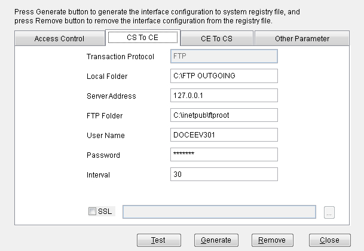
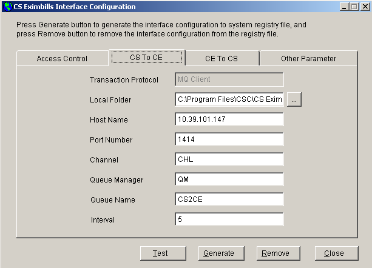
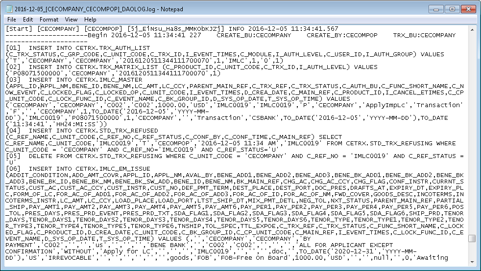
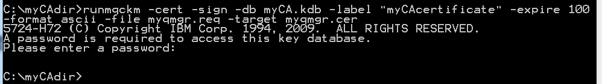
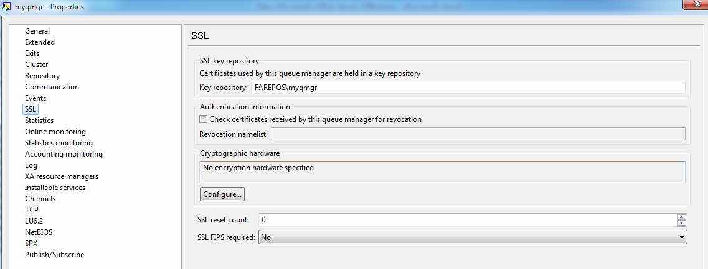

CEV336 Interfacing CE with CS Eximbills (Pandoc)
 {width="8.625in” height="11.125in”}
{width="8.625in” height="11.125in”}
+———————————————————————–+
| EXIMBILLS © Trade Finance System |
| |
| Customer Enterprise System Version 3.3.6 |
| |
| Interfacing CE with CS Eximbills |
| |
| July 2021 |
+———————————————————————–+
| Copyright 2021© China Systems Corporation |
| |
| All Rights Reserved |
| |
| This document is protected by United States Copyright Law and may |
| contain Trade Secrets Information which is proprietary to China |
| Systems Corporation. No part of this document may be copied, |
| photocopied, reproduced, translated, distributed, or reduced to any |
| electronic medium or machine-readable form without prior consent in |
| writing from China Systems Corporation. The information in this |
| document may be used only under the terms and conditions of separate |
| China Systems Corporation license agreements. |
| |
| Information is subject to change without notice. China Systems |
| Corporation makes no warranties, either expressed or implied, with |
| respect to the software herein described as to its quality, |
| performance, including, without limitations to, its fitness for any |
| particular purpose. |
| |
| This document may not reflect total system capability at any |
| subsequent date as a result of development. It is also possible that |
| it may contain references to facilities not available on your |
| computer system. Such references should not be construed to mean that |
| these facilities will necessarily be made available on all types of |
| computer hardware or in all user locations. |
| |
| China Systems Corporation accepts no responsibility or liability for |
| any damages or loss of business or revenue due to the use of this |
| document. |
| |
| All trademarks, registered trademarks and trade names mentioned in |
| this document are the sole property of their respective holders. |
+———————————————————————–+
| ORDER MORE EXIMBILLS DOCUMENTATION |
| |
| Additional copies of Documentation are available for purchase from |
| China Systems Corporation or through your local EXIMBILLS Support |
| Office. |
+———————————————————————–+
|  {width="0.7604166666666666in” |
| height="0.75in”} |
| |
| CHINA SYSTEMS CORPORATION |
| |
| Comments may be addressed to: |
| |
| mailto:[[corporatedocs@chinasystems.com]{.underline}](mai |
| lto:corporatedocs@chinasystems.com) |
| |
| China Systems Corporation Ltd. |
| |
| Corner House, 20 Parliament Street |
| |
| Hamilton HM12 |
| |
| Bermuda |
+———————————————————————–+
{width="0.7604166666666666in” |
| height="0.75in”} |
| |
| CHINA SYSTEMS CORPORATION |
| |
| Comments may be addressed to: |
| |
| mailto:[[corporatedocs@chinasystems.com]{.underline}](mai |
| lto:corporatedocs@chinasystems.com) |
| |
| China Systems Corporation Ltd. |
| |
| Corner House, 20 Parliament Street |
| |
| Hamilton HM12 |
| |
| Bermuda |
+———————————————————————–+
Table of Contents
CE Utility Reference Manuals 11
Preparing the CE Utility Files 17
Navigating the CE Utility Interface 23
Generating the XML Parameter Files 35
General Settings in Customer Enterprise 46
General Settings in CS Eximbills 55
Configuring the System Parameters Maintenance Function 56
Setting up the Document Parameters 62
Defining an Online Message Rule 65
Online Message Rule Settings 65
Setting the Function Properties 69
Setting up the Report Parameters 71
Running the CEInterfaceConfig Program 73
Automatic Configuration via Connection Mode 93
Interfacing CE and CSX using MQ 97
Setting up the Queue Manager 99
Queue Manager Configuration 99
Automated Application Setup of the CSX and CE Interface 113
Creating the CSXCELOG Table 115
Sending Messages from CE to CSX via MQ 117
Customer Enterprise Settings 119
Attaching the GAPI Rule to the CE Function 141
Attaching the GAPI Component to the Function Attribute 142
Running the CEInterfaceConfig Program 143
Running the CEConnecterSocket Program 143
Sending Messages from CSX to CE via MQ 151
Setting up the CSX Functions 154
Running the CEInterfaceConfig Program 155
Running the CSMQHandle Program 155
Running the CSXCEFTP Program 158
Generating the Module Layout 160
Customer Enterprise Settings 164
Setting the STP Transaction Component of the CE Function 171
Configuring the Message Broker 173
Interfacing CE with CSX using FTP 180
Sending Messages to Customer Enterprise via FTP 181
Setting up CS Eximbills Functions 182
Generating the Module Layout 182
Setting the Windows FTP Service Parameters 182
Running the CEInterfaceConfig Program 184
Running the CSXCEFTP Program 184
Running the GaSvrCE Program 184
Receiving Messages from CS Eximbills via FTP 186
Defining the FTP Settings in the Queue Manager 187
Setting the STP Transaction Component of the CE Function 195
Configuring the Message Broker 196
Example: Interface via FTP 198
Interfacing CE and CSX using TCP/IP 201
Sending Messages to CS Eximbills via TCP/IP 202
Defining the TCP Settings in the Queue Manager 203
Creating the GAPI Settings 206
Attaching the GAPI Rule to the CE Function 213
Receiving Messages from Customer Enterprise via TCP/IP 214
Creating the CSXCELOG Table 215
Running the CEInterfaceConfig Program 215
Running the CEConnecterSocket Program 215
Example: Interface via TCP/IP 216
Incoming XML Format from CE to CSX 218
Output Format for the Transaction Data and Document Content from CSX to CE 221
Sending Reports from CSX to CE 224
Setting the Report Function 231
Configuring the MessageBroker 235
Setting the Product Function 237
Modifying the SYS_Multicatalog.jsp File 251
Reports from the CSX Function 252
Supporting SSL for the MQ Mode 253
SSL Configuration for MQ Client to Server Mode 255
Login User Service Setting 260
SSL Configuration for MQ Server to Server Mode 261
Creating the Certification Authority (CA) 261
Issuing the Certificate to a Queue Manager 265
Issuing the Certificate to a Client Application 272
Issuing the Certificate to a Java Client Application 277
MQ Server to Server Mode: Without SSL 285
MQ Server to Server Mode: With SSL 286
CE Documentation Library
CE Documentation Library
The CE Documentation Library lists all available manuals that serve as references on the use of the Customer Enterprise system. The documents are categorized into three groups: Core System Manuals, CE Utility Reference Manuals, and Installation Guides.
Core System Manuals
The CE core system manuals provide information on the setup and configuration of various CE parameters, as well as the implementation of supplementary functionalities supported by the system.
Archiving and Recovery
This manual is a reference to the Archive and Recovery functionality of the CE system. Discussions include the required parameter settings for configuring the relevant functions, as well as examples of how this functionality is used in transaction processes.
Building a Product
This manual is a reference to the process of building a product in CE. It provides step-by-step procedures on how to create a basic CE module, transaction function, and product setting; configure parameters; and attach components to generate a working business product.
Data Objects
This manual serves as a reference for creating and utilizing data objects in the CE system. The discussions provide information on how to build data object templates and data object entities, and how to attach these to the transaction function screen.
Frequently Asked Questions
This document addresses commonly-asked questions on the Customer Enterprise system. Issues on the browser-side (transaction processing), CE Utility, Security Module, and database, among others, are addressed in the discussions.
Interfacing CE with CS Eximbills
This document discusses the process of interfacing CE with the CS Eximbills (CSX) back office system. Employing the MQ, FTP, and TCP/IP communication protocols, the interface process using the XML format is detailed in this document.
Interfacing CE with Eximbills Enterprise
This document discusses the process of interfacing CE with the Eximbills Enterprise (EE) back office system. Employing the MQ protocol, the interface process for the transfer of data between CE and EE using the XML format is detailed in this document.
Log Settings
This manual provides information on CE logs as well as general instructions on log configuration in CE. This is especially written for the users who are in charge of maintaining the CE system.
Look and Feel
This manual is a reference guide on designing the CE user interface (i.e., the look and feel of the system). Divided into two parts, the manual provides instructions on creating a) the basic L&F style of CE; and b) the CE L&F style that incorporates widgets.
Multi-Entity
This manual is a reference on implementing the Multi-Entity functionality of the CE system. Discussions cover the implementation and application of CE multi-entity.
Multi-Language
This manual discusses the procedures required in setting up the Multi-Language functionality of CE as it is run by Administrator- and Operator-type users. Furthermore, the configuration of certain system and browser elements as well as the setup of related system parameters is explained in step-by-step procedures.
Reports
This manual is a comprehensive reference guide on the requirements and processes involved in building business products and functions that generate online reports and documents.
Security and System Maintenance Functions
This manual is a comprehensive guide on the security and system maintenance of the CE system. As such, it includes detailed instructions for company and company function management, and user and user function management. Maintenance of key functionalities such as authorization rules, reference numbers, and other services is covered as well. In addition, this document discusses the security concepts in CE to assist users assigned with access rights to the CE Security Module.
Standing Data Functions
This document discusses the functions for the CE standing data that are maintained by operators (e.g., parties, clauses). It includes sections for each function, starting with a brief description of the function, followed by the function input when necessary, and the procedure steps.
Supplementary Functions
This manual is a reference for the CE Utility operator user in configuring parameter, JSP, and transaction function settings to define special or supplementary CE functionalities such as uploading images, sending images and forms to the back-office system, and sending notifications via e-mail and SMS, and widgets.
System Administration Functions
This manual is a reference for the default Super Administrator user of the CE Utility in the configuration and maintenance of the CE environment. It discusses in detail user management and parameter management.
System Reference
This document serves as a quick reference to the following elements that are used when configuring specific parameters in the CE Utility: global system parameters, system parameters, components, XML Generator items, server side system methods, system JS methods, and APIs.
CE Utility Reference Manuals
The CE Utility Reference set of manuals is a guide on the use of the Customer Enterprise Utility Workbench, or simply CE Utility. This reference provides information on every function or feature in the CE Utility and includes instructions and step-by-step procedures on how to operate or use the function in relation to operating and maintaining the CE system and processing a business transaction.
A manual is provided for each function group of the CE Utility:
-
CE Utility Reference: User Manager Functions, for the functions that belong to the User Manage function group of the CE Utility when accessed by an Administrator or Operator user
-
CE Utility Reference: Parameter Manager Functions, for the functions that belong to the Parameter Manage function group of the CE Utility when accessed by an Administrator or Operator user
-
CE Utility Reference: System Functions, for the functions that belong to the System Function group of the CE Utility.
-
CE Utility Reference: Transaction Functions, for the functions that belong to the Transaction Function group of the CE Utility.
-
CE Utility Reference: Product Functions, for the functions that belong to the Product Function group of the CE Utility.
-
CE Utility Reference: Maintenance Functions, for the functions that belong to the Maintenance function group of the CE Utility.
Installation Guides
The CE installation guides are references on the installation and setup processes of the CE system on different application servers and databases.
Installation Guide WAS 9 - Oracle 19c
This is a reference for installing the CE system on WebSphere Application Server Version 9.0.5.6, with an Oracle 19c database. This includes detailed instructions on configuring the components that are required to successfully run CE.
Introduction
-
System Overview
-
Manual Overview
System Overview
Customer Enterprise (CE) is a front-end system that allows the bank’s Import and Export customers to send and receive business transactions with minimal effort and maximum speed. Being the front-end system, it facilitates the initial step in the overall processing of transactions.
The initial registration of transaction details by the customers is performed in CE that, in turn, is interfaced with a back office system (which perform the actual validations and calculations of the transactions). The CE system may be integrated with the following back office systems:
-
Eximbills Enterprise
-
CS Eximbills
-
Bank’s Back-office System
CE and CS Eximbills (CSX) are two different generation systems. The first is a full Java EE-compliant framework solution, while the other is a 2-tier client server Visual FoxPro fat client solution. The interface between these two is realized thru the use of the following formats and functionalities:
-
GAPI (Generic Application Programming Interface)
-
STP (Straight-through Processing)
-
MQ (Message Queues)
-
FTP (File Transfer Protocol)
-
TCP/IP (Transmission Control Protocol/Internet Protocol)
-
XML (Extensible Markup Language) format
For the CE-CSX integration, CE produces a GAPI message that converts the required transaction details into an XML-format message. Message queues are employed for the transfer of data to CSX. The messages previously received from CE are sent back containing the response from CSX.
 {width="0.3333333333333333in”
height="0.3333333333333333in”}NOTE:
{width="0.3333333333333333in”
height="0.3333333333333333in”}NOTE:
i. Only one version of CS Eximbills can be installed in the same > computer for this interface. CSX V3 and CSX V4 must not be > installed together in the same machine.
ii. When setting up parameters for CSX-CE interface, CE and CSX must > have the same communication parameters.
iii. The procedures discussed in this manual are based on CE Version > 3.1.001 and CSX Version 4. 4.
iv. The CSX settings discussed here also apply to CS Eximbills Version 3 > – Cx3.00402(R25) and higher versions.
v. The CE and CSX integration is supported in these system versions:
-
CE: CE Version 3.2.0, CE Version 3.1.001 (For CSX V3, integration with CE is through Pseudo SWIFT; for CSX V4, through XML.)
-
CSX Version 3: Cx3.00402(R25) and higher versions
-
CSX Version 4: Cx4.00116(R7), Cx4.5 SP3, Cx4.5 SP11 and higher versions.
Manual Overview
[Purpose]{.underline}
This document discusses the process of interfacing CE with the CS Eximbills (CSX) back office system.
Employing the MQ, FTP, and TCP/IP communication protocols, the interface process using the XML format is detailed in the next chapters of this document.
[Audience]{.underline}
This manual is written to assist users that are involved in the installation, maintenance, and use of the CE system.
[Prerequisites]{.underline}
This manual is written with the assumption that the user has sufficient knowledge of both the CE and CSX systems. For extensive descriptions of the CE and CSX functions discussed in this manual, refer to the relevant CE, CS Eximbills Version 4, and CS Eximbills Version 3 documentations.
{width="0.3333333333333333in”
height="0.3333333333333333in”}NOTE: Some features discussed in this
manual have been tested and documented based on an older system version.
Unless otherwise specified, the overall functionality is the same when
recreated in the current version.
Using the CE Utility
-
Running the CE Utility
-
Generating the XML Parameter FILES
-
building a product
Running the CE Utility
The Customer Enterprise Utility Workbench, or CE Utility, is the main tool for building parameters in CE.
Preparing the CE Utility Files
Along with the installation files, the CE Utility folder is provided with every CE system release. Prior to using the CE Utility, do the following:
i. Copy the CE Utility folder to the local drive.
ii. Define the required environment variables.
iii. Map the CE directories (e.g., CEWeb.war and CE_PARA) to the > network drive.

Figure 2. 1 CE Utility Folder
{width="0.3333333333333333in” height="0.3333333333333333in”}**NOTE: **
i. The default drives defined in the GEN_XML_ROOTPATH and GEN_WEB_ROOTPATH system parameters are O:\ and P:\ respectively. These drives, if currently not existing, may be created through a batch file. While O:\ and P:\are the default drives for CE, these may be set to any other preferred drive available in the network.
ii. To enable users to use the CE Utility on their own local machines as clients connecting to the CE server: 1) Install the Java Development Kit (JDK) program; 2) Copy the CE Utility folder; 3) Create the JAVA_HOME environment variable, which must point to this directory: [Java Home]\[Installed JDK].
iii. For more details on setting up the CE environment, refer to the CE installation guides*.*
iv. For details on the CE Utility functions, refer to the CE Utility Reference manuals.
+———————————————————————–+
| Batch File for Creating the CE Drives |
| |
| The batch file for creating drives contains the following commands: |
| |
| > subst O: /d |
| > |
| > subst P: /d |
| > |
| > subst O: C:"\Program |
| > Files\IBM\WebSphere\AppServer\profiles\AppSrv01\installedApps |
| \DOCS-CEV336Node01Cell\CE.ear\CE_PARA" |
| > |
| > subst P: C:"\Program |
| > Files\IBM\WebSphere\AppServer\profiles\AppSrv01\installedApps |
| \DOCS-CEV336Node01Cell\CE.ear\CEWeb.war" |
| |
|  {width="4.8181813210848645in” |
| height="0.7698829833770778in”} |
+———————————————————————–+
{width="4.8181813210848645in” |
| height="0.7698829833770778in”} |
+———————————————————————–+
Accessing the CE Utility
The main program for running the CE Utility is the CEUtility.bat file, which is found in the CE Utility folder.
Do the following . . .
+———————–+———————–+———————–+ | 1. Run the | | {width="3.5in” | | program to access | | height="2.38819444444 | | the CE Utility. | | 44443in”} | | | | | | *[NOTE]{.underline} | | | | *: | | | | | | | | A shortcut for the | | | | CEUtility batch file | | | | can be created on the | | | | desktop for easy | | | | access. | | | +———————–+———————–+———————–+ | | | | +———————–+———————–+———————–+ | 2. The logon window | | {width="3.5in” | | is displayed. | | height="2.34513888888 | | | | 8889in”} | | To define the | | | | database information, | | | | click on the Profile | | | | button. | | | +———————–+———————–+———————–+ | | | | +———————–+———————–+———————–+ | 3. In the Database | | {width="3.5in” | | box that is | | height="2.48125in”} | | displayed, specify | | | | the required | | | | database details | | | | and click on the | | | | Save button. | | | +———————–+———————–+———————–+ | | | | +———————–+———————–+———————–+ | 4. A confirmation | | {width="3.5in” | | displayed. Click on | | height="2.47361111111 | | the OK button. | | 1111in”} | +———————–+———————–+———————–+ | | | | +———————–+———————–+———————–+
+———————–+———————–+———————–+ | *[NOTE]{.underline} | | {width="3.5in” | | | | height="0.79861111111 | | This new data source | | 11112in”} | | setting is saved in | | | | the UserInfo.xml file | | | | in the CE Utility | | | | directory. | | | +———————–+———————–+———————–+ | | | | +———————–+———————–+———————–+ | 5. The relevant | | {width="3.5in” | | password may then | | height="2.34513888888 | | be specified for | | 8889in”} | | logging on the CE | | | | Utility. | | | | | | | | *[NOTE]{.underline} | | | | *: | | | | | | | | For details on | | | | defining CE Utility | | | | user profiles, refer | | | | to the CE System | | | | Administration | | | | Functions manual. | | | +———————–+———————–+———————–+ | | | | +———————–+———————–+———————–+ | 6. The CE Utility | | {width="3.5in” | | displayed. | | height="1.85694444444 | | | | 44445in”} | +———————–+———————–+———————–+ | | | | +———————–+———————–+———————–+
+———————–+———————–+———————–+ | 7. A function is | | {width="3.5in” | | or double-clicking | | height="1.85694444444 | | on the relevant | | 44445in”} | | function group and | | | | clicking on the | | | | function name. | | | | | | | | [NOTE]{.underline} | | | | : | | | | | | | | A user may only | | | | access and utilize | | | | the functions | | | | assigned to him. For | | | | more details, refer | | | | to the CE Utility | | | | Reference: User | | | | Manager Functions | | | | documentation. | | | +———————–+———————–+———————–+
The new user profiles for the CE Utility (as well as the CE Security Module) can be defined during the installation process. SQL scripts are run to create these profiles. Refer to the CE installation guides for more details.
Navigating the CE Utility Interface
After logging on, the CE Utility window is displayed and parameters may then be configured. The functions used for setting up parameters may be accessed by clicking on the function name on the Function menu or by using the shortcut buttons.
The CE Utility interface also provides ways by which parameters can be created, edited, deleted or linked to other operations: menu bar, toolbar buttons, and popup menu.

Figure 2. 2 The CE Utility Interface
####### CE Utility Functions
The functions that may be accessed for setting up parameters are organized together into several function groups. The current available function groups and their corresponding functions in the CE Utility are as follows:
User Manager Function Group
This function group is comprised of functions used for creating, configuring, and exporting Bank-Country group settings; creating new users; and configuring data sources. These functions are:
-
Business Unit Config
-
DataSource Manage
-
Import/Export Business Unit
-
User Manage
Parameter Manage Function Group
This function group consists of functions used for maintaining system-wide parameters and components. These functions are:
-
AP Server
-
Component Manage
-
Language Configuration
-
System Parameter
-
System Parameters
System Function Group
This function group consists of functions used for maintaining and facilitating system-wide tasks, operations, and settings. These functions are:
-
Image Type Maintain
-
Output Device
-
Queue Manager
-
STP Setting
-
Time Zone
Transaction Function Group
This function group is comprised of functions used for defining the actual business parameters of transaction functions. These facilitate the maintenance and processes of the business transaction modules. These functions are:
-
Amount/Rate Format
-
Batch Manage
-
Clause
-
DO Get Data
-
Export Setting
-
Form
-
GAPIs Setting
-
Get Data
-
Image Control
-
Message Broker Setting
-
Module & Event
-
Report Template
-
STPs Mapping
-
Sub Tasks
-
SWIFT Config
-
System Maintain
-
Transaction Function
-
Transfer To
-
TSU Mapping
-
Upload Message Setting
-
Web Service Setting
-
Widget Maintain
Product Function Group
This function group consists of functions that are used for creating and configuring the products to be accessed and used by the customers or end-users. These functions are:
-
Fields Select
-
Inbox
-
Product Authorize
-
Product Authorize Setting
-
Product Catalog
-
Product Function Setting
-
Product Item
Maintenance Function Group
This function group is comprised of functions used for facilitating the maintenance of data from CE tables, including fields and error settings. These functions are:
-
DB Dictionary
-
Error Handling
-
Error Message Config (CE)
-
Field Conversion
-
Multi Language
-
Page Dictionary
-
XML Generator
#######
####### Menu Bar
The options on the menu bar are shortcuts to both the common and specific functions and tasks of the system.

Figure 2. 3 Menu Bar
Menu Description
+———————–+———————–+———————–+ | File | | The available options | | | | in the File menu are: | | | | | | | | - New: This is used | | | | for creating a | | | | new parameter or | | | | rule. | | | | | | | | - Save: This is | | | | used for saving | | | | the created or | | | | modified | | | | settings. | | | | | | | | - Close Function: | | | | This is used for | | | | closing the | | | | current function | | | | window. | | | | | | | | - Connect To: This | | | | is used for | | | | connecting to | | | | another Meta data | | | | source. | | | | | | | | - Log Off: This is | | | | used for logging | | | | off a user that | | | | is logged on to | | | | the system | | | | without exiting | | | | the system. | | | | | | | | - Exit: This is | | | | used for closing | | | | the system window | | | | and exiting the | | | | system. | +———————–+———————–+———————–+ | | | | +———————–+———————–+———————–+ | Edit | | The available options | | | | in the Edit menu are: | | | | | | | | - Add: This is used | | | | for adding a | | | | setting for the | | | | selected function | | | | or parameter. | | | | | | | | - Delete: This is | | | | used for deleting | | | | or removing an | | | | existing setting. | | | | | | | | - Edit: This is | | | | used for editing | | | | or modifying | | | | existing | | | | settings. | | | | | | | | - Copy: This is | | | | used for copying | | | | or duplicating a | | | | selected setting. | | | | | | | | - Find: This is | | | | used for finding | | | | a specific | | | | setting. | +———————–+———————–+———————–+ | | | | +———————–+———————–+———————–+ | Function | | The available options | | | | in the Function menu | | | | are: | | | | | | | | - User Manage, | | | | which displays | | | | options for | | | | running User | | | | Manager functions | | | | | | | | - Parameter Manage, | | | | which displays | | | | options for | | | | running Parameter | | | | Manager functions | | | | | | | | - System Function, | | | | which displays | | | | options for | | | | running System | | | | functions | | | | | | | | - Transaction | | | | Function, which | | | | displays options | | | | for running | | | | Transaction | | | | functions | | | | | | | | - Product Function, | | | | which displays | | | | options for | | | | running Product | | | | functions | | | | | | | | - Maintenance, | | | | which displays | | | | options for | | | | running | | | | Maintenance | | | | functions | +———————–+———————–+———————–+ | | | | +———————–+———————–+———————–+ | Tools | | The available options | | | | in the Tools menu | | | | are: | | | | | | | | - Toolbar: When | | | | this option is | | | | marked, the | | | | toolbar is | | | | displayed on the | | | | CE Utility | | | | Workbench window. | | | | | | | | - Function Toolbar: | | | | When this option | | | | is marked, the | | | | function toolbar | | | | is displayed on | | | | the CE Utility | | | | Workbench window. | | | | | | | | - Set User Profile | | | | DB Info: This | | | | option is used by | | | | the Super | | | | Administrator | | | | user to change | | | | the user | | | | information that | | | | is to be used by | | | | the CE Utility | | | | for connecting to | | | | a database. | | | | | | | | - Window Style: | | | | Selecting this | | | | option displays a | | | | list of CE | | | | Utility interface | | | | styles: Microsoft | | | | Style, Unix | | | | Style, Java | | | | Style, Classic | | | | Style, and Metal | | | | Style. The | | | | preferred style | | | | may be marked | | | | accordingly. | +———————–+———————–+———————–+ | | | | +———————–+———————–+———————–+ | Help | | The available options | | | | in the Help menu are: | | | | | | | | - Help Topics: This | | | | is currently not | | | | used. | | | | | | | | - Content Help: | | | | This is | | | | currently not | | | | used. | | | | | | | | - About Customer | | | | Enterprise: | | | | Selecting this | | | | option displays | | | | the About | | | | Customer | | | | Enterprise | | | | window, which | | | | indicates the | | | | version details | | | | of CE. | +———————–+———————–+———————–+
####### Toolbar Buttons
There are two kinds of toolbars in the CE Utility: the basic toolbar and the function toolbar.
Basic Toolbar
The following standard buttons are available on the Basic Toolbar of the CE Utility window. These are used for performing the basic and common tasks of the system.

Figure 2. 4 Basic Toolbar Buttons
Button Description
 {width="0.25in” height="0.25in”} New This button is used for creating a new parameter or rule.
{width="0.25in” height="0.25in”} New This button is used for creating a new parameter or rule.
 {width="0.25in” height="0.25in”} Add This button is used for adding a setting for the selected function or parameter.
{width="0.25in” height="0.25in”} Add This button is used for adding a setting for the selected function or parameter.
 {width="0.25in” height="0.25in”} Save This button is used for storing created or modified settings.
{width="0.25in” height="0.25in”} Save This button is used for storing created or modified settings.
 {width="0.25in” height="0.25in”} Edit This button is used for editing or modifying existing settings.
{width="0.25in” height="0.25in”} Edit This button is used for editing or modifying existing settings.
 {width="0.25in” height="0.25in”} Copy This button is used for copying or duplicating a selected setting.
{width="0.25in” height="0.25in”} Copy This button is used for copying or duplicating a selected setting.
 {width="0.25in” height="0.25in”} Delete This button is used for deleting or removing an existing setting.
{width="0.25in” height="0.25in”} Delete This button is used for deleting or removing an existing setting.
 {width="0.25in” height="0.25in”} Find This button is used for finding an existing setting.
{width="0.25in” height="0.25in”} Find This button is used for finding an existing setting.
 {width="0.22916666666666666in” height="0.25in”} Close Function This button is used for closing a function window.
{width="0.22916666666666666in” height="0.25in”} Close Function This button is used for closing a function window.
 {width="0.25in” height="0.25in”} Help Topic This button is currently not used.
{width="0.25in” height="0.25in”} Help Topic This button is currently not used.
{width="0.25in” height="0.25in”} About Customer Enterprise This button is used for displaying the version information of Customer Enterprise.
Function Toolbar
The buttons on this toolbar are shortcuts to some of the functions that are in the Function Group lists of the CE Utility window. The buttons may also be accessed from the Function menu on the menu bar.

Figure 2. 5 Function Toolbar Buttons
Button Description
 {width="0.22916666666666666in” height="0.22916666666666666in”} Set System Parameter This button is used for accessing the System Parameter function. The function may also be accessed from the Parameter Manage group in the Function menu.
{width="0.22916666666666666in” height="0.22916666666666666in”} Set System Parameter This button is used for accessing the System Parameter function. The function may also be accessed from the Parameter Manage group in the Function menu.
{width="0.22916666666666666in” height="0.22916666666666666in”} Manage Component This button is used for accessing the Component Manage function. The function may also be accessed from the Parameter Manage group in the Function menu.
 {width="0.22916666666666666in” height="0.22916666666666666in”} Calculation This button is currently not used.
{width="0.22916666666666666in” height="0.22916666666666666in”} Calculation This button is currently not used.
 {width="0.22916666666666666in” height="0.22916666666666666in”} Module/Event Configuration This button is used for accessing the Module & Event function. The function may also be accessed from the Transaction Function group in the Function menu.
{width="0.22916666666666666in” height="0.22916666666666666in”} Module/Event Configuration This button is used for accessing the Module & Event function. The function may also be accessed from the Transaction Function group in the Function menu.
 {width="0.22916666666666666in” height="0.22916666666666666in”} Transaction Function Configuration This button is used for accessing the Transaction Function. The function may also be accessed from the Transaction Function group in the Function menu.
{width="0.22916666666666666in” height="0.22916666666666666in”} Transaction Function Configuration This button is used for accessing the Transaction Function. The function may also be accessed from the Transaction Function group in the Function menu.
 {width="0.22916666666666666in” height="0.22916666666666666in”} Form Set This button is used for accessing the Form function. The function may also be accessed from the Transaction Function group in the Function menu.
{width="0.22916666666666666in” height="0.22916666666666666in”} Form Set This button is used for accessing the Form function. The function may also be accessed from the Transaction Function group in the Function menu.
 {width="0.22916666666666666in” height="0.22916666666666666in”} Accounting Rule Setting This button is currently not used.
{width="0.22916666666666666in” height="0.22916666666666666in”} Accounting Rule Setting This button is currently not used.
{width="0.22916666666666666in” height="0.22916666666666666in”} Field Conversion This button is used for accessing the Field Conversion function. The function may also be accessed from the Maintenance group in the Function menu.
 {width="0.22916666666666666in” height="0.22916666666666666in”}Get Data This button is used for accessing the Get Data function. The function may also be accessed from the Transaction Function group in the Function menu.
{width="0.22916666666666666in” height="0.22916666666666666in”}Get Data This button is used for accessing the Get Data function. The function may also be accessed from the Transaction Function group in the Function menu.
{width="0.22916666666666666in” height="0.22916666666666666in”} Reference Number This button is currently not used.
 {width="0.22916666666666666in” height="0.22916666666666666in”} Output Device This button is used for accessing the Output Device function. The function may also be accessed from the System Function group in the Function menu.
{width="0.22916666666666666in” height="0.22916666666666666in”} Output Device This button is used for accessing the Output Device function. The function may also be accessed from the System Function group in the Function menu.
 {width="0.22916666666666666in” height="0.22916666666666666in”} Function Group This button is currently not used.
{width="0.22916666666666666in” height="0.22916666666666666in”} Function Group This button is currently not used.
 {width="0.22916666666666666in” height="0.22916666666666666in”} Clause This button is used for accessing the Clause function. The function may also be accessed from the Transaction Function group in the Function menu.
{width="0.22916666666666666in” height="0.22916666666666666in”} Clause This button is used for accessing the Clause function. The function may also be accessed from the Transaction Function group in the Function menu.
 {width="0.22916666666666666in” height="0.22916666666666666in”} SWIFT This button is used for accessing the SWIFT Config function. The function may also be accessed from the Transaction Function group in the Function menu.
{width="0.22916666666666666in” height="0.22916666666666666in”} SWIFT This button is used for accessing the SWIFT Config function. The function may also be accessed from the Transaction Function group in the Function menu.
 {width="0.22916666666666666in” height="0.22916666666666666in”} Queue Manager This button is used for accessing the Queue Manager function. The function may also be accessed from the System Function group in the Function menu.
{width="0.22916666666666666in” height="0.22916666666666666in”} Queue Manager This button is used for accessing the Queue Manager function. The function may also be accessed from the System Function group in the Function menu.
 {width="0.22916666666666666in” height="0.22916666666666666in”} GAPIs Setting This button is used for accessing the GAPIs Setting function. The function may also be accessed from the Transaction Function group in the Function menu.
{width="0.22916666666666666in” height="0.22916666666666666in”} GAPIs Setting This button is used for accessing the GAPIs Setting function. The function may also be accessed from the Transaction Function group in the Function menu.
 {width="0.22916666666666666in” height="0.22916666666666666in”} Time Zone This button is used for setting time zone. The function may also be accessed from the System Function group in the Function menu.
{width="0.22916666666666666in” height="0.22916666666666666in”} Time Zone This button is used for setting time zone. The function may also be accessed from the System Function group in the Function menu.
 {width="0.22916666666666666in” height="0.22916666666666666in”} STP Setting This button is used for accessing the STP Setting function. The function may also be accessed from the System Function group in the Function menu.
{width="0.22916666666666666in” height="0.22916666666666666in”} STP Setting This button is used for accessing the STP Setting function. The function may also be accessed from the System Function group in the Function menu.
 {width="0.22916666666666666in” height="0.22916666666666666in”} Message Broker Setting This button is used for accessing the Message Broker Setting function. The function may also be accessed from the Transaction Function group in the Function menu.
{width="0.22916666666666666in” height="0.22916666666666666in”} Message Broker Setting This button is used for accessing the Message Broker Setting function. The function may also be accessed from the Transaction Function group in the Function menu.
 {width="0.22916666666666666in” height="0.22916666666666666in”} Processing Center This button is currently not used.
{width="0.22916666666666666in” height="0.22916666666666666in”} Processing Center This button is currently not used.
 {width="0.22916666666666666in” height="0.22916666666666666in”} Amount Format Setting This button is used for accessing the Amount/Rate Format function. The function may also be accessed from the Transaction Function group in the Function menu.
{width="0.22916666666666666in” height="0.22916666666666666in”} Amount Format Setting This button is used for accessing the Amount/Rate Format function. The function may also be accessed from the Transaction Function group in the Function menu.
 {width="0.22916666666666666in” height="0.22916666666666666in”} Error Message This button is used for accessing the Error Message Config (CE) function. The function may also be accessed from the Maintenance group in the Function menu.
{width="0.22916666666666666in” height="0.22916666666666666in”} Error Message This button is used for accessing the Error Message Config (CE) function. The function may also be accessed from the Maintenance group in the Function menu.
 {width="0.22916666666666666in” height="0.22916666666666666in”} Say Total This button is currently not used.
{width="0.22916666666666666in” height="0.22916666666666666in”} Say Total This button is currently not used.
{width="0.22916666666666666in” height="0.22916666666666666in”} Holiday This button is currently not used.
 {width="0.22916666666666666in” height="0.22916666666666666in”} Report This button is currently not used.
{width="0.22916666666666666in” height="0.22916666666666666in”} Report This button is currently not used.
 {width="0.22916666666666666in” height="0.22916666666666666in”} Transfer To This button is used for accessing the Transfer To function. The function may also be accessed from the Transaction Function group in the Function menu.
{width="0.22916666666666666in” height="0.22916666666666666in”} Transfer To This button is used for accessing the Transfer To function. The function may also be accessed from the Transaction Function group in the Function menu.
 {width="0.22916666666666666in” height="0.22916666666666666in”} Archiving This button is currently not used.
{width="0.22916666666666666in” height="0.22916666666666666in”} Archiving This button is currently not used.
 {width="0.22916666666666666in” height="0.22916666666666666in”} DB Dictionary This button is used for accessing the DB Dictionary function. The function may also be accessed from the Maintenance group in the Function menu.
{width="0.22916666666666666in” height="0.22916666666666666in”} DB Dictionary This button is used for accessing the DB Dictionary function. The function may also be accessed from the Maintenance group in the Function menu.
 {width="0.22916666666666666in” height="0.22916666666666666in”} Calculation Constant This button is currently not used.
{width="0.22916666666666666in” height="0.22916666666666666in”} Calculation Constant This button is currently not used.
 {width="0.22916666666666666in” height="0.22916666666666666in”} XML Generator This button is used for accessing the XML Generator function. The function may also be accessed from the Maintenance group in the Function menu.
{width="0.22916666666666666in” height="0.22916666666666666in”} XML Generator This button is used for accessing the XML Generator function. The function may also be accessed from the Maintenance group in the Function menu.
 {width="0.22916666666666666in” height="0.22916666666666666in”} Business Unit This button is used for accessing the Business Unit Config function. The function may also be accessed from the User Manage group in the Function menu.
{width="0.22916666666666666in” height="0.22916666666666666in”} Business Unit This button is used for accessing the Business Unit Config function. The function may also be accessed from the User Manage group in the Function menu.
 {width="0.22916666666666666in” height="0.22916666666666666in”} User Manager This button is used for accessing the User Manage function. The function may also be accessed from the User Manage group in the Function menu.
{width="0.22916666666666666in” height="0.22916666666666666in”} User Manager This button is used for accessing the User Manage function. The function may also be accessed from the User Manage group in the Function menu.
 {width="0.22916666666666666in” height="0.22916666666666666in”} Import/Export Business Unit This button is used for accessing the Import/Export Business Unit function. The function may also be accessed from the User Manage group in the Function menu.
{width="0.22916666666666666in” height="0.22916666666666666in”} Import/Export Business Unit This button is used for accessing the Import/Export Business Unit function. The function may also be accessed from the User Manage group in the Function menu.
 {width="0.22916666666666666in” height="0.22916666666666666in”} DataSource Manager This function is used for accessing the Data Source Manage function. The function may also be accessed from the User Manage group in the Function menu.
{width="0.22916666666666666in” height="0.22916666666666666in”} DataSource Manager This function is used for accessing the Data Source Manage function. The function may also be accessed from the User Manage group in the Function menu.
####### Popup Menu
Inside a function or configuration window, options may be provided in the form of a popup menu. This menu is displayed by right-clicking on the relevant window section or on the relevant details.

Figure 2. 6 Popup Menu
In a popup window, the following options may be made available:
-
New
-
Add
-
Save
-
Edit
-
Copy
-
Delete
-
Find
-
Sharable
-
Help
Generating the XML Parameter Files
The created parameters and business logic are stored in the database as Meta data. For this Meta data to be accessible to the application server (AP) and the web server, it has to be converted to XML – the format used for the communication between the client and the server.
The XML files are generated through the XML Generator function of the Maintenance function group in the CE Utility. In most cases, the XML Generator function must be run when a parameter is created or modified using the functions discussed in this document.
Do the following . . .
+———————–+———————–+———————–+ | 1. Log on CE | | {width="3.5in” | | Administrator or | | height="2.34513888888 | | Operator user with | | 8889in”} | | rights to the XML | | | | Generator function. | | | +———————–+———————–+———————–+ | | | | +———————–+———————–+———————–+ | 2. The CE Utility | | {width="3.5in” | | displayed. | | height="1.85694444444 | | | | 44445in”} | | Run the XML Generator | | | | function from the | | | | Maintenance function | | | | group. | | | | | | | | Alternatively, click | | | | on the XML Generator | | | | button in the | | | | function toolbar. | | | +———————–+———————–+———————–+ | | | | +———————–+———————–+———————–+ | 3. The XML | | {width="3.5in” | | window is | | height="1.85694444444 | | displayed. | | 44445in”} | | | | | | When there are newly | | | | defined or modified | | | | parameters, the Meta | | | | Data to XML window is | | | | also displayed. It | | | | lists these | | | | parameters for easy | | | | selection. In this | | | | case, the parameter | | | | can be selected from | | | | this window and the | | | | Apply button clicked. | | | | Afterwards, proceed | | | | to Step 5. | | | | | | | | Alternatively, the | | | | Meta data or | | | | parameter can be | | | | manually selected | | | | from the main XML | | | | Generator window. In | | | | this case, click on | | | | the Close button of | | | | the Meta Data to XML | | | | window and proceed to | | | | Step 4. | | | +———————–+———————–+———————–+ | | | | +———————–+———————–+———————–+ | 4. Double-click on | | {width="3.5in” | | parameter type from | | height="1.85694444444 | | the XML Generator | | 44445in”} | | window. | | | +———————–+———————–+———————–+ | | | | +———————–+———————–+———————–+ | 5. Depending on the | | {width="3.5in” | | type, an XML | | height="1.85694444444 | | configuration | | 44445in”} | | window may be | | | | displayed. In other | | | | cases, the process | | | | directly proceeds | | | | to Step 6. | | | | | | | | If the configuration | | | | window is displayed, | | | | indicate the exact or | | | | any additional | | | | setting required to | | | | generate the relevant | | | | XML files. When the | | | | specifications are | | | | defined click on the | | | | Save button | | | +———————–+———————–+———————–+ | | | | +———————–+———————–+———————–+ | 6. A message is | | {width="3.5in” | | confirming if the | | height="1.13472222222 | | XML files are to be | | 22222in”} | | generated on the | | | | system path. | | | +———————–+———————–+———————–+ | | | | +———————–+———————–+———————–+ | *[NOTE]{.underline} | | {width="3.5in” | | | | height="1.85694444444 | | The path of the XML | | 44445in”} | | files is defined | | | | through the | | | | GEN_XML_ROOTPATH | | | | Utility Workbench | | | | system parameter. | | | | This system parameter | | | | is configured through | | | | the System Parameter | | | | function from the | | | | Parameter Manage | | | | function group. | | | +———————–+———————–+———————–+ | | | | +———————–+———————–+———————–+ | 7. To save the XML | | {width="3.5in” | | relevant system | | height="2.47083333333 | | path, click on the | | 3333in”} | | Yes button. | | | | | | | | To specify another | | | | path, click on the No | | | | button. On the Save | | | | dialog box that is | | | | displayed, browse for | | | | the path and click on | | | | the Save button. | | | +———————–+———————–+———————–+ | | | | +———————–+———————–+———————–+ | 8. When the | | {width="3.5in” | | are generated, the | | height="1.85694444444 | | system displays a | | 44445in”} | | confirmation | | | | message. | | | | | | | | *[NOTE]{.underline} | | | | *: | | | | | | | | To hide the details | | | | on the paths of the | | | | generated XML files, | | | | click on the Hide | | | | button. | | | +———————–+———————–+———————–+ | | | | +———————–+———————–+———————–+ | *[NOTE]{.underline} | | {width="3.5in” | | | | height="3.15208333333 | | Check the indicated | | 3333in”} | | path(s) to see the | | | | generated XML files. | | | +———————–+———————–+———————–+
Building a Product
When building a product in the CE Utility, a few prerequisites are required to be met to make sure that modules or products are built in accordance with the bank’s requirements. One step is the GAP analysis which involves an evaluation of transaction requirements, based on the process flow (e.g., fields, clauses, forms, and interfaces). These are necessary for identifying the fields required for anticipating the required output. When the analysis has been completed, the project team can now begin the process of building a product for the bank’s customers.
The following are steps in building a product:
-
Access the CE Utility. To access the CE Utility for building parameters, an Operator user must be created by an Administrator user. This is set up through the User Manager function in the User Manage function group.
-
Set up the module and events. This involves naming the module and the projected events that manage the transaction flow within the module. This is set up in the Module and Event function in CE Utility.
-
Set up the transaction tables. This involves creating the tables in the DB Dictionary function in CE Utility. There can be different types of tables but only three are mandatory for a CE module: master, ledger, and event.
{width="0.3333333333333333in”
height="0.3333333333333333in”}NOTE: It is possible to create tables
directly into the database by running SQL scripts in the database. In
this case, tables can be created before modules and events. It is
recommended, however, to use the DB Dictionary for creating tables.
-
Add fields to the transaction table. Fields must be added to a transaction table and field properties defined for the processing and storage of data. These can be done through the DB Dictionary function in CE Utility.
-
Set up the transaction functions. This involves creating the functions that correspond to actual business transaction processes. This is done through Transaction Function in the Transaction Function group.
-
Set up the transaction parameters. This involves designing the transaction screen, defining attribute and catalog settings, and attaching these parameters to the transaction function. These can be done through Transaction Function in CE Utility.
-
Create the product. The product is the actual functionality accessed and run by the end-user. This process of creating a product involves setting up the product group, product, and product function, and defining product catalog settings.
-
Define authorization rules. Authorization rules are set to further define or set limits for authorizing transactions.
-
Calculation. This involves configuring the transaction JS files and defining calculation functions using available system methods. There are three JS files that have to be configured: the Module Base JS file, Event JS file, and Function JS file.
-
Define the settings for the transaction input. Certain functions may be added to aid in the input of data into the transaction. The CE Utility provides options for setting up field conversion rules, lookup buttons, customer reference numbers, clauses, dropdown lists, and data objects for this purpose.
-
Define the settings for the transaction output. Some business transactions involve output generation (i.e., Forms). To make this option available, certain settings must be configured using the functions from the Transaction Function group in CE Utility.
-
Define the security settings in the CE browser. The products and functions created are assigned to an end-user through the browser-side Security and System Maintenance functions.
{width="0.3333333333333333in”
height="0.3333333333333333in”}NOTE: The browser-side security and system
maintenance functions of CE are often collectively called the Security
Module.
- Add the Inbox functionality. Another way of accessing a product or a transaction for further processing is through the Customer Inbox. This can be set up through the Inbox function in CE Utility.
{width="0.3333333333333333in”
height="0.3333333333333333in”}NOTE: For more details on configuring
different parameters in CE, refer to the CE Utility Reference
manuals*.*
{#section-1 .CS-ChapterTitle}
System Requirements
-
Required Program Files
-
General Settings in Customer Enterprise
-
General Settings in CS Eximbills
Required Program Files
CS Eximbills requires certain interface programs to integrate with CE. A batch file is also provided to automatically perform the required operations when an interface program is updated.
Interface Programs
CSX uses the following interface programs to integrate with CE through the XML format:
Programs Description
CEConnecterSocket.exe This is an interface service program that listens to the MQ server queue. It is used to directly add, edit, or delete CSX table data based on the transaction information sent by CE.
CEInterfaceConfig.exe This is the main interface configuration program for the related parameters required for the process flow between CE and CSX.
CSMQHandle.dll This application enables the system to connect directly to the Queue Manager without installing the MQ Client. CSXCEFTP.exe This is the service program that merges the transaction XML file (generated by GaSvrCE) and the document content from CSX to CE (GAPI) into one XML file. The program then transfers this merged XML file to the MQ server (to be retrieved by CE).
GaSvrCE.exe This is the GAPI service that generates the XML file from the relevant CSX transaction. The XML file, generated in the Local Folder defined in the interface configuration program (CEInterfaceConfig), is used for interfacing with CE.
CSXModuleLayout.exe This program is used for generating the XML file with the required field information from the CSX module table layout. This XML file may be used by CE for field-mapping.
Figure 3. 1 Interface Programs
Setup Batch File
Every time an interface program is modified or updated, it must be stopped, unregistered, registered, and then started. To automatically perform this set of operations, the Setup.bat batch file must be run. This file is stored in the folder where the interface programs are located, which is typically in this path of the CS Eximbills home directory:
addon\CSXCEInterfaceII
The commands in this batch file are as follows.
<Start of code>
echo off
cls
echo CSX CE Interface Installation Guideecho 1 Uninstall service
echo unregserver GaSvrcE
GaSvrCE.exe /unregserverecho unregserver CSXCEFTP
CSXCEFTP.exe /unregserverecho unregserver CEConnecterSocket
CEConnecterSocket.exe /unregserverecho 2 Register Common Component
echo register CSMQHandle.dll
regsvr32 /s/c csmqhandle.dllecho 3 Register Service
echo Register GaSvrCE
GaSvrCe.exe /serviceecho Register CSXCEFTP
CSXCEFTP.exe /serviceecho Register CEConnecterSocket
CEConnecterSocket.exe /serviceecho 4 Set Parameter use CEInterfaceConfig Tool
CEInterfaceConfig.exeecho 5 Start Service
net start GaSvrCE
net start CSXCEFTP
net start CEConnecterSocketecho Intall Finish
cmd
<End of code>
The TEMP directory is used to store the log path of the CEConnecterSocket service. To get the TEMP directory, the Garsock.dll file uses the GetTempPath command. The GetTempPath function checks for the existence of environment variables in the following order and uses the first path found:
- The path specified by the TMP environment variable
- The path specified by the TEMP environment variable
- The path specified by the USERPROFILE environment variable
- The Windows directory
The name of the log file follows this format: ‘Garsock+Year+Month+Day.LOG’
Figure 3. 2 Environment Variables
General Settings in Customer Enterprise
Sending messages from CE to CS Eximbills using the XML format involves the following setups in CE functions:
-
Adding extension fields
-
Importing CSX Templates
These settings, which are configured through the CE Utility, apply when either the MQ or TCP/IP communication protocol is used.
Adding Extension Fields
Run the DB Dictionary function to add the following extension fields. These correspond to the system fields in CS Eximbills.
Field Data Type
CSX_MODULE Char (4)
CSX_BRANCH_ID Varchar (10)
CSX_TRX_TYPE Char (2)
CSX_REF_NUM Varchar (64)
CSX_USER Varchar (32)
CSX_PASSWORD Varchar (64)
C_SYS_EVENT Char (4)
ASYNCH Varchar (5)
Figure 3. 3 CE DB Dictionary Function – Extension Fields
Importing CSX Templates
The module layout templates defined in CS Eximbills must be imported to CE.
Importing the CSX module fields into the Data Dictionary facilitates the mapping of fields for the data exchange in the STP and GAPI settings.
The process involves adding a new component and the actual import process.
####### Adding a New Component
In the Component Manage function, make sure that the CSXTemplate filter component is included. The properties are –
-
Component Name: CSXTemplate
-
Component Desc: CSXTemplate
-
Class Name: CECsxTmpl
-
Business Type: Utility
The CECsxTmpl class is used for importing CSX templates.
Figure 3. 4 CSXTemplate Filter Component
####### Importing the CSX Template
After creating the new component, the template from CSX may then be imported to the Data Dictionary.
The template from CSX containing field information of the IMIS module been stored as IMIS.xml.
Settings
When importing the CSX template, the following details must be specified in the Import Template dialog box of the DB Dictionary function.
Figure 3. 5 Import Template Dialog Box
Field Description
+———————–+———————–+———————–+ | **Filter Name ** | | Select the defined | | | | component from the | | | | dropdown list: | | | | CSXTemplate. | +———————–+———————–+———————–+ | | | | +———————–+———————–+———————–+ | Filter Class Name | | Specify the defined | | | | class name: | | | | CECsxTmpl. | +———————–+———————–+———————–+ | | | | +———————–+———————–+———————–+ | Import File Name | | Specify the path of | | | | the CSX template. | | | | This template | | | | pertains to the XML | | | | file generated in CSX | | | | (via CSXModuleLayout | | | | program), which | | | | contains the required | | | | field information. | | | | | | | | [NOTE: | | | | ]{.underline} | | | | | | | | To import the CSX | | | | Template into the CE | | | | system, the XML file | | | | for the relevant | | | | module in CS | | | | Eximbills must be | | | | generated. This file | | | | is used to | | | | incorporate the | | | | required field | | | | information from CS | | | | Eximbills into CE for | | | | a successful | | | | integration process. | | | | | | | | To be able to run the | | | | CSModuleLayout | | | | program that | | | | generates the module | | | | XML file, the | | | | interface service | | | | parameters must first | | | | be configured using | | | | the CEInterfaceConfig | | | | Program. | +———————–+———————–+———————–+
Procedure
To import the CSX Template:
Do the following . . .
+———————–+———————–+———————–+ | 1. Run the DB | |  | | and access the | | | | Reformat tab. | | | | | | | | Select the Extension | | | | Field node, and click | | | | on the Import button. | | | +———————–+———————–+———————–+ | | | | +———————–+———————–+———————–+ | 2. Specify the | | {width="3.4 | | values in the | | 82638888888889in” | | Import Template | | height="1.88888888888 | | dialog box that is | | 88888in”} | | displayed. | | | | | | | | Click on the OK | | | | button when done. | | | +———————–+———————–+———————–+ | | | | +———————–+———————–+———————–+ | 3. In the Import | | {width="3.2 | | is displayed, | | 85416666666667in” | | specify the Group | | height="2.55208333333 | | Name and Template | | 33335in”} | | Name values | | | | according to the | | | | organization of | | | | templates imported | | | | from different | | | | systems. The values | | | | can be retrieved | | | | from the Reformat | | | | tab of the DB | | | | Dictionary function | | | | window. | | | | | | | | The Send Fields tab | | | | shows the available | | | | fields that are to be | | | | imported. | | | | | | | | **[NOTE:]{.underline} | | | | ** | | | | | | | | i. The Exist in | | | | > Field Info | | | | > column is | | | | > marked if the | | | | > field to be | | | | > imported is | | | | > already in the | | | | > CE DB | | | | > Dictionary. | | | | | | | | ii. The Exist In | | | | > Template column | | | | > is marked if | | | | > the tag has | | | | > already been | | | | > imported into a | | | | > template. | | | | | | | | iii. Although these | | | | > fields already | | | | > exist in the DB | | | | > Dictionary, | | | | > they must still | | | | > be imported | | | | > because the | | | | > same tags may | | | | > exist in | | | | > different | | | | > templates. | | | +———————–+———————–+———————–+ | | | | +———————–+———————–+———————–+ | 4. Click on the | |  | | | | | | A confirmation | | | | message is displayed | | | | when the import | | | | process is | | | | successful. Click on | | | | the Ok button. | | | +———————–+———————–+———————–+ | | | | +———————–+———————–+———————–+ | 5. The imported | | {width="3.4 | | included in the | | 54861111111111in” | | Extension Fields | | height="1.72083333333 | | table of the DB | | 33334in”} | | Dictionary. | | | +———————–+———————–+———————–+ | | | | +———————–+———————–+———————–+ | 6. Run the Reformat | | {width="3.1 | | the fields into the | | 25in” | | database. | | height="2.33679571303 | | | | 58703in”} | +———————–+———————–+———————–+
General Settings in CS Eximbills
Sending messages from CS Eximbills to CE using the XML format involves the following settings in CSX functions:
-
Configuring the System Parameters Maintenance function
-
Setting up document parameters
-
Creating form sets
-
Defining an online message rule
-
Setting the function parameters
Additionally, the CEInterfaceConfig program is utilized for the processing flow between CSX and CE.
These settings apply when either the MQ or FTP communication protocol is used.
Configuring the System Parameters Maintenance Function
Several settings are required in the Interface, Document, Swift, and On-line Message tabs of the System Parameters Maintenance function.
####### Interface Tab
Figure 3. 6 System Parameters Maintenance – Interface Tab
Field Description
+———————–+———————–+———————–+ | FTP Control Flag | | Mark this flag. | +———————–+———————–+———————–+ | | | | +———————–+———————–+———————–+ | The CUBK Field | | Select the CUBK field | | Storing FTP | | that stores the FTP | | Directory | | directory. | +———————–+———————–+———————–+ | | | | +———————–+———————–+———————–+ | Export Directory | | Specify the location | | | | of the generated XML | | | | files that contain | | | | the transaction and | | | | document information. | | | | | | | | The recommended path | | | | in the CS Eximbills | | | | home directory, is | | | | this: | | | | | | | | ADDON\FTP\EXPORT\ | | | | | | | | The full path of the | | | | machine may be used | | | | (e.g., | | | | \\DOC-USER\EXPORT) | | | | . | | | | | | | | **[NOTE:]{.underline} | | | | ** | | | | | | | | The path indicated in | | | | the Export Directory | | | | field must be the | | | | same as the Local | | | | Folder setting in the | | | | CS To CE tab of the | | | | CEInterfaceConfig | | | | program. | +———————–+———————–+———————–+ | | | | +———————–+———————–+———————–+ | Generate Head File | | Select this option to | | to FTP | | facilitate the proper | | | | processing and | | | | operation of the | | | | interface. | +———————–+———————–+———————–+
####### Document Tab
Figure 3. 7 System Parameters Maintenance – Document Tab
Field Description
Mail / Telex/ WinWord On-line transmit after approved Mark this flag to immediately transmit the documents to a specified directory after the transaction is successfully released.
Telex Transmit Path Define a valid path to ensure proper processing of the transaction.
####### Swift Tab
Figure 3. 8 System Parameters Maintenance – Swift Tab
Field Description
Out Going SWIFT Path Specify a valid path in this field to ensure the successful transmission of a released SWIFT message.
On-line SWIFT Message Transmission Mark this flag for the immediate transmission of Swift documents.
####### On-line Message Tab
Click on the Advanced button to create a new communication rule.
Figure 3. 9 System Parameters
Specify the values for the following fields in the Communication Rule dialog box that is displayed.
Field Description
Name Specify a name for the communication rule.
+———————–+———————–+———————–+ | Offline Processing | | Indicate whether or | | Allowed (This Rule) | | not CSX is allowed to | | | | process transactions | | | | even if the host is | | | | offline. If marked, | | | | all transactions | | | | processed offline are | | | | treated as valid | | | | transactions. This | | | | setting is applicable | | | | only for this | | | | specific | | | | communication rule. | +———————–+———————–+———————–+ | | | | +———————–+———————–+———————–+ | Communication | | Define the | | Protocol | | communication | | | | protocol to be used. | | | | For this interface, | | | | it must be set to | | | | TCP/IP. | +———————–+———————–+———————–+ | | | | +———————–+———————–+———————–+ | Communication | | This field is used | | Routine | | for the DCOM/COM | | | | communication | | | | protocol and is | | | | disabled when the | | | | communication | | | | protocol is set to | | | | TCP/IP. | +———————–+———————–+———————–+ | | | | +———————–+———————–+———————–+ | IP Address | | Specify the following | | | | details separating | | | | the two with a comma: | | | | | | | | - IP address of the | | | | machine where the | | | | GAPI service is | | | | installed | | | | | | | | - Port number, | | | | which should be | | | | 9040 | | | | | | | | The value of this | | | | field should follow | | | | this format: [IP | | | | Address],9040. | +———————–+———————–+———————–+ | | | | +———————–+———————–+———————–+ | User Name | | Specify a valid CSXV4 | | | | username for | | | | accessing the GAPI | | | | Runtime Component. | +———————–+———————–+———————–+ | | | | +———————–+———————–+———————–+ | Password | | Specify the relevant | | | | password for the | | Confirm Password | | specified username | | | | for accessing the | | | | GAPI Runtime | | | | Component. | +———————–+———————–+———————–+
Setting up the Document Parameters
The FTP To field must be defined in Mail/Telex, Swift, and WinWord forms.
Figure 3. 10 Set Form – Mail/Telex Function

Figure 3. 11 Set Form – Swift Function
Figure 3. 12 Set Form – WinWord Function
Creating Form Sets
Add the document forms to a form set via Set Form Sets function.
Figure 3. 13 Set Form Sets Function
Defining an Online Message Rule
####### Online Message Rule Settings
Create an online message rule.
Figure 3. 14 Online Message Rule
In the online message rule, the message to be sent must follow this format:
CSX_TRX_TYPE, MSG_TYPE; DOC_CONTROL; “Transaction fields”
Parameter Description
CSX_TRX_TYPE This refers to the transaction type in CE. The value is fixed text (e.g., AP, AM, EM, AA, DP, DM, FP).
+———————–+———————–+———————–+ | MSG_TYPE | | This refers to the | | | | message type in CE | | | | (i.e., the STP | | | | Mapping rule in CE). | | | | The value is fixed | | | | text. | +———————–+———————–+———————–+ | | | | +———————–+———————–+———————–+ | DOC_CONTROL | | This is for a | | | | transaction that | | | | generates multiple | | | | GAPI messages. This | | | | controls whether the | | | | documents are | | | | attached to the | | | | relevant XML output | | | | file or not. | | | | | | | | The options for this | | | | flag are DOC_ALL and | | | | DOC_NONE. If this | | | | flag is not set, the | | | | default value is | | | | DOC_ALL. | | | | | | | | The CSXCEFTP service | | | | checks the | | | | DOC_CONTROL node to | | | | determine whether or | | | | not to attach the | | | | documents to the | | | | transaction XML file. | +———————–+———————–+———————–+ | | | | +———————–+———————–+———————–+ | Transaction | | An unlimited number | | fields | | of fields to be | | | | transmitted to CE can | | | | be specified in this | | | | parameter. | | | | | | | | As CE requires both | | | | the master field name | | | | and master field | | | | value, the format | | | | must be as follows: | | | | | | | | <Master field | | | | name>[Master field | | | | name] | | | | | | | | Where: | | | | | | | | - <Master field | | | | name> – This is | | | | used by the GAPI | | | | service for | | | | retrieving the | | | | master field | | | | name. The master | | | | field name must | | | | not include the | | | | ‘<’ and ‘>’ | | | | characters. | | | | | | | | - [Master field | | | | name] – This is | | | | used by the GAPI | | | | service for | | | | retrieving the | | | | master field | | | | value. | | | | | | | | As CE requires the | | | | GAPI transfer event | | | | number, the online | | | | message rule must | | | | include this: | | | | | | | | [SYS_|Event No.] | +———————–+———————–+———————–+
[EXAMPLE:]{.underline}
Message Sent Contents –
AM,TEST_RULE;DOC_ALL;<LC Number>[LC Number];<Event No.>[SYS_|Event No.];<Applicant ID>[Applicant ID];<Form of LC>[Form of LC];<Applicant Name>[Applicant Name];<Applicant Address>[Applicant Address];<Beneficiary ID>[Beneficiary ID];<Beneficiary Address>[Beneficiary Address];<Advising Bank Address>[Advising Bank Address];<Advising Bank ID>[Advising Bank ID];<Advising Bank Name>[Advising Bank Name];<LC Amount>[LC Amount];<LC CCY>[LC CCY]
####### Multiple Transaction Types
Multiple transaction types from CE to CSX are supported. To do this, modify the CSX_TRX_TYPE node of the output header (XML file) and separate the transaction types with a comma.
Other rules:
-
No spaces are allowed between the transaction types in the CSX_TRX_TYPE node.
-
Even for multiple transactions, only one record is written in the CSXCELOG table.
-
CSX processes the transaction according to the sequence of the transaction types.
[EXAMPLE:]{.underline}
i. CSX_TRX_TYPE node –
<out-adp-header> <C_OTH_SYS_KEY>000000100000000001</C_OTH_SYS_KEY>
<CSX_MODULE>IMIS</CSX_MODULE>
<CSX_BRANCH_ID>B700</CSX_BRANCH_ID>
<CSX_TRX_TYPE>EM,AA</CSX_TRX_TYPE>
<CSX_REF_NUM>LC000001</CSX_REF_NUM>
<CSX_FUNC_ID>1000006864</CSX_FUNC_ID>
<CSX_USER/>
<CSX_PASSWORD/></out-adp-header>
ii. The CE user sends an LC amendment instruction to CSX. In CSX, the > IMIS master file must be updated and another record must be added > in the event table to continue processing the instruction. > Multiple transaction types are required.
iii. The transaction types shown here, ‘EM’ and ‘AA’, indicate that > after CE successfully sends the message, the CSX TCP service > (CEConnecterSocket.exe) then adds an event record and updates the > master file in CSX.
####### Inquiring an Event
CSX uses the Function ID setting for determining which screen to display when inquiring a particular transaction event.
[EXAMPLE:]{.underline}
Message Sent Contents –
If an LC application and an LC amendment have been requested from CE, there are two events recorded for this master record in CSX. If the bank user wants to inquire on the LC application details, CSX must display the LC application screen and not the LC amendment screen.
To enable this functionality, the Function ID detail must be defined in each CE message header. Add this node in the output header: CSX_FUNC_ID. An example:
<out-adp-header>
<C_OTH_SYS_KEY>000000100000000001</C_OTH_SYS_KEY>
<CSX_MODULE>IMIS</CSX_MODULE>
<CSX_BRANCH_ID>B700</CSX_BRANCH_ID>
<CSX_TRX_TYPE>EM,AA</CSX_TRX_TYPE>
<CSX_REF_NUM>LC000001</CSX_REF_NUM>
<CSX_FUNC_ID>1000006864</CSX_FUNC_ID>
<CSX_USER/>
<CSX_PASSWORD/>
</out-adp-header>After CE successfully sends the message, the CSX TCP service (CEConnecterSocket.exe) stores the Function ID value to the C_SYS_FUNC field in the transaction database. During the event inquiry, CSX retrieves and uses this value to locate the attached screen ID, thus displaying the proper screen.
i. The CE consultant can retrieve the relevant Function ID value from CSX. It is stored in the ECLMFUN table in the CSX Meta database.
ii. If the system runs in the Three-Transaction-Table mode, the C_SYS_FUNC field is stored in the XXXXCTL table; otherwise, in the XXXXTRX table.
Setting the Function Properties
Define these properties for the relevant function: Form Set Name and Release Online Message.
Figure 3. 15 Function Properties – Basic Tab
Figure 3. 16 Function Properties – Rules Tab
Setting up the Report Parameters
The required settings are as follows.
- In a report query, mark the Send By flag of the relevant Id field that is to be used for retrieving the export directory.
Figure 3. 17 Set Report Query Function
- In the Print Setup settings of the related report form, the FTP flag and By Send ID option must both be selected. This enables the system to export the report to the directory defined for the indicated customer Id.
Figure 3. 18 Set Report Form Function
Running the CEInterfaceConfig Program
CEInterfaceConfig is the main interface configuration program for the related parameters required for the process flow between CS Eximbills and CE.
The CEInterfaceConfig program is run from this path: [CS Eximbills home directory]\addon\CSXCEInterfaceII. The interface processes are performed according to the settings defined in the configuration window. Moreover, these settings can also be automatically configured according to the connection mode – MQ Server, MQ Client, or FTP-TCP – through additional settings in the Windows registry.
####### Configuration Window
The CS Eximbills Interface Configuration window provides tabs and buttons through which interface settings are defined.
######### Tabs
The configuration window consists of four tabs: Access Control, CS To CE, CE To CS and Other Parameter tabs. The tabs to be accessed and used depend on the process flow: CE to CSX or vice versa.
The Access Control Tab
Figure 3. 19 CS Eximbills Interface Configuration – Access Control Tab
Field Description
**User of CS ** Specify the name of the CS Eximbills user with the relevant access rights to log on CSX and set up the parameters.
Key Define the Encryption Key used to verify the correctness of the transaction data that must be consistent with the setting made in CE: the password of the CSX user (User of CS field).
+———————–+———————–+———————–+ | | | Meta Access | | | | Control | +———————–+———————–+———————–+ | | | | +———————–+———————–+———————–+ | Meta DB Type | | Select the type of | | | | the CSX Meta database | | | | from the dropdown | | | | list. | | | | | | | | **[NOTE:]{.underline} | | | | ** | | | | | | | | For CSX Version 3, | | | | select FoxPro. | +———————–+———————–+———————–+ | | | | +———————–+———————–+———————–+ | Meta DSN | | Select the DSN Name | | | | defined for the Meta | | | | database (via Data | | | | Sources (ODBC) | | | | function in the | | | | Control Panel). | | | | | | | | **[NOTE:]{.underline} | | | | ** | | | | | | | | For CSX Version 3, | | | | select FoxPro DSN. | +———————–+———————–+———————–+ | | | | +———————–+———————–+———————–+ | User Name | | Specify the username | | | | used for accessing | | | | the Meta database. | | | | | | | | If the system used is | | | | CSX V3, this field is | | | | protected. | +———————–+———————–+———————–+ | | | | +———————–+———————–+———————–+ | Password | | Specify the password | | | | used for accessing | | Conf. Password | | the Meta database. | | | | | | | | If the system used is | | | | CSX V3, these fields | | | | are protected. | +———————–+———————–+———————–+ | | | | +———————–+———————–+———————–+ | | | Trans Access | | | | Control | +———————–+———————–+———————–+ | | | | +———————–+———————–+———————–+ | Trans DB Type | | Select the type of | | | | the CSX transaction | | | | database from the | | | | dropdown list. | +———————–+———————–+———————–+ | | | | +———————–+———————–+———————–+ | Trans DSN | | Select the DSN Name | | | | defined for the | | | | transaction database | | | | (via Data Sources | | | | (ODBC) function in | | | | the Control Panel). | +———————–+———————–+———————–+ | | | | +———————–+———————–+———————–+ | User Name | | Specify the username | | | | used for accessing | | | | the transaction | | | | database. | +———————–+———————–+———————–+ | | | | +———————–+———————–+———————–+ | Password | | Specify the password | | | | used for accessing | | Conf. Password | | the transaction | | | | database. | +———————–+———————–+———————–+
The CS To CE Tab
The fields displayed in this tab depend on the selected Transaction Protocol option (also from this tab): MQ, MQ Server, MQ Client, FTP, or FTP-TCP.
[Transaction Protocol: MQ, MQ Server, or MQ Client]{.underline}
Figure 3. 20 CS Eximbills Interface Configuration – CS to CE Tab:
Field Description
+———————–+———————–+———————–+ | Transaction | | This refers to the | | Protocol | | protocol by which CE | | | | and CSX communicate. | | | | Select MQ from the | | | | dropdown list. | +———————–+———————–+———————–+ | | | | +———————–+———————–+———————–+ | Local Folder | | This is the location | | | | of the XML files that | | | | contain the | | | | transaction and | | | | document information. | | | | Use the browse button | | | | to display the Select | | | | Directory dialog box | | | | and define the | | | | relevant path. This | | | | path must be the same | | | | as the Export | | | | Directory path set in | | | | the Interface tab of | | | | the System Parameters | | | | Maintenance function. | | | | | | | | Depending on the | | | | outcome of the | | | | related process, the | | | | files are generated | | | | in one of these | | | | folders under the | | | | export path: Success, | | | | Failure, or Log. | | | | Furthermore, the | | | | files are placed in a | | | | sub-folder named | | | | after the date of the | | | | process. | | | | | | | | Log files for the | | | | GaSvrCE and | | | | CEInterfaceConfig | | | | interface programs | | | | are also generated in | | | | this path. | +———————–+———————–+———————–+ | | | | +———————–+———————–+———————–+ | Host Name | | Specify the name of | | | | the MQ server. | +———————–+———————–+———————–+ | | | | +———————–+———————–+———————–+ | Port Number | | This refers to the | | | | port number of the MQ | | | | server. The default | | | | value is 1414. | +———————–+———————–+———————–+ | | | | +———————–+———————–+———————–+ | Channel | | Specify the server | | | | connection channel | | | | defined in the MQ | | | | Explorer. | +———————–+———————–+———————–+ | | | | +———————–+———————–+———————–+ | Queue Manager | | Specify the queue | | | | manager defined in | | | | the MQ Explorer. | +———————–+———————–+———————–+ | | | | +———————–+———————–+———————–+ | Queue Name | | Specify the queue | | | | defined for sending | | | | messages from CSX to | | | | CE. | +———————–+———————–+———————–+ | | | | +———————–+———————–+———————–+ | Interval | | Specify in seconds | | | | the interval for | | | | processing messages. | +———————–+———————–+———————–+
[Transaction Protocol: FTP or FTP-TCP]{.underline}
Figure 3. 21 CS Eximbills Interface Configuration – CS to CE Tab:
FTP Transaction Protocol
Field Description
+———————–+———————–+———————–+ | **Transaction | | This refers to the | | Protocol ** | | protocol by which CE | | | | and CSX communicate. | | | | Select FTP from the | | | | dropdown list. | +———————–+———————–+———————–+ | | | | +———————–+———————–+———————–+ | Local Folder | | This is the location | | | | of the XML files that | | | | contain the | | | | transaction and | | | | document information. | | | | Use the browse button | | | | to display the Select | | | | Directory dialog box | | | | and define the | | | | relevant path. This | | | | path must be the same | | | | as the Export | | | | Directory path set in | | | | the Interface tab of | | | | the System Parameters | | | | Maintenance function. | | | | | | | | Depending on the | | | | outcome of the | | | | related process, the | | | | files are generated | | | | in one of these | | | | folders under the | | | | export path: Success, | | | | Failure, or Log. | | | | Furthermore, the | | | | files are placed in a | | | | sub-folder named | | | | after the date of the | | | | process. | | | | | | | | Log files for the | | | | GaSvrCE and | | | | CEInterfaceConfig | | | | interface programs | | | | are also generated in | | | | this path. | +———————–+———————–+———————–+ | | | | +———————–+———————–+———————–+ | Server Address | | Specify the IP | | | | address of the FTP | | | | server. | +———————–+———————–+———————–+ | | | | +———————–+———————–+———————–+ | FTP Folder | | Specify the available | | | | directory in the FTP | | | | server used for | | | | storing the | | | | documents. | +———————–+———————–+———————–+ | | | | +———————–+———————–+———————–+ | User Name | | Specify the username | | | | for accessing the FTP | | | | server. | +———————–+———————–+———————–+ | | | | +———————–+———————–+———————–+ | Password | | Specify the password | | | | for accessing the FTP | | | | server. | +———————–+———————–+———————–+ | | | | +———————–+———————–+———————–+ | Interval | | Specify in seconds | | | | the interval for | | | | processing messages. | +———————–+———————–+———————–+
The CE To CS Tab
The fields displayed in this tab depend on the selected Transaction Protocol option (also from this tab): MQ, TCP, or FTP-TCP.
[Transaction Protocol: MQ]{.underline}
Figure 3. 22 CS Eximbills Interface Configuration – CE to CS Tab
Field Description
Transaction Protocol This refers to the protocol by which CE and CSX communicate. Select MQ from the dropdown list.
Host Name Specify the name of the MQ server.
Port Number This refers to the port number of the MQ server. The default value is 1414.
Channel Specify the server connection channel defined in the MQ Explorer.
Queue Manager Specify the queue manager defined in the MQ Explorer.
Recv Queue Name Specify the queue that is created in MQ for receiving messages from CE.
Reply Queue Name Specify the queue that is created in MQ for sending responses to CE.
Interval Specify in seconds the interval for processing messages.
[Transaction Protocol: TCP]{.underline}
If the selected Transaction Protocol option is TCP, the rest of the fields in the CE to CS tab are disabled.
Figure 3. 23 CS Eximbills Interface Configuration – CE to CS Tab:
TCP Transaction Protocol
The Other Parameter Tab
Figure 3. 24 CS Eximbills Interface Configuration – Other Parameter Tab
Field Description
+———————–+———————–+———————–+ | Character Convert | | The Character Convert | | | | table is added to | | | | support special | | | | characters used in | | | | the reference number, | | | | which later on | | | | becomes the file name | | | | for the generated XML | | | | file to be sent via | | | | the CSX-CE interface. | | | | | | | | To specify the | | | | special characters in | | | | the fields, | | | | right-click on the | | | | grid and select the | | | | Add item option. | | | | | | | |  | +———————–+———————–+———————–+ | | | | +———————–+———————–+———————–+ | Log Path | | To select the path | | | | where the logs are to | | | | be saved, click on | | | | the browse button. In | | | | the Select Directory | | | | dialog box that is | | | | displayed, browse for | | | | the preferred path | | | | and click on the | | | | Select button. | | | | | | | |  | | | | | | | | During transaction | | | | processing, the log | | | | files of the | | | | interface programs | | | | are stored in a | | | | folder, named after | | | | the date and time of | | | | the log, in this | | | | path. | | | | | | | | **[NOTE:]{.underline} | | | | ** | | | | | | | | When started, the | | | | services check the | | | | Log Path setting. If | | | | the log setting has | | | | been changed, restart | | | | the services for the | | | | modification to take | | | | effect. | +———————–+———————–+———————–+ | | | | +———————–+———————–+———————–+ | Write Detail Trace | | Select this flag to | | Log | | enable the program to | | | | include more details | | | | in the logs. The log | | | | then records each | | | | process step. | +———————–+———————–+———————–+ | | | | +———————–+———————–+———————–+ | Resend Held | | This is for cases | | Transaction | | when the transaction | | | | coming from CE cannot | | | | update the | | | | corresponding CSX | | | | transaction because | | | | the record is held in | | | | the back office | | | | (e.g., the | | | | transaction is still | | | | waiting | | | | authorization). | | | | | | | | This flag controls | | | | how the transaction | | | | is resent – | | | | automatically (Auto | | | | Resend) or manually | | | | (Resend Manually). | | | | | | | | **[NOTE:]{.underline} | | | | ** | | | | | | | | Details on the | | | | processing of held | | | | transactions are | | | | recorded in this log | | | | file: | | | | CE_CSX_HOLD_TRANS. | | | | LOG. | +———————–+———————–+———————–+ | | | | +———————–+———————–+———————–+ | Auto Resend | | The MQ Service | | | | retrieves all | | | | transactions with an | | | | ‘H’ (held | | | | transaction) or ‘R’ | | | | (the transaction is | | | | marked to be manually | | | | resent by the user) | | | | status and | | | | reprocesses them. | | | | After the | | | | reprocessing, the | | | | transaction status is | | | | updated one of the | | | | following: | | | | | | | | - ‘T’, to indicate | | | | that the | | | | reprocessing is | | | | successful. | | | | | | | | - ‘H’, to indicate | | | | that the | | | | transaction is | | | | held by another | | | | user. | | | | | | | | - ‘F’, to indicate | | | | that the failed | | | | reprocessing is | | | | caused by other | | | | reasons. | +———————–+———————–+———————–+ | | | | +———————–+———————–+———————–+ | Resend Manually | | The user can select a | | | | held transaction from | | | | the transaction | | | | message list and | | | | click on the Resend | | | | button. The status of | | | | the selected | | | | transaction changes | | | | from ‘H’(held | | | | transaction) to ‘R’ | | | | (the transaction is | | | | marked to be manually | | | | resent by the user). | | | | | | | | The MQ Service | | | | retrieves all | | | | transactions with an | | | | ‘R’ status and | | | | reprocesses them. | | | | After the | | | | reprocessing, the | | | | transaction status is | | | | updated to one of the | | | | following: | | | | | | | | - ‘T’, to indicate | | | | that the | | | | reprocessing is | | | | successful. | | | | | | | | - ‘H’, to indicate | | | | that the | | | | transaction is | | | | held by another | | | | user. | | | | | | | | - ‘F’, to indicate | | | | that the failed | | | | reprocessing is | | | | caused by other | | | | reasons. | | | | | | | | This solution is | | | | limited to CE- to- | | | | CSX processes to the | | | | Asynchronous mode | | | | only. Refer also to | | | | the following The | | | | Resend Manually | | | | Option discussion. | +———————–+———————–+———————–+ | | | | +———————–+———————–+———————–+ | Interval | | This refers to the | | | | time interval, in | | | | minutes, in which the | | | | transaction is | | | | resent. The default | | | | value is 2. | +———————–+———————–+———————–+ | | | | +———————–+———————–+———————–+ | MQ Message Size | | Refer to the | | | | following [The MQ | | | | Message Size | | | | Option](#MQMessageSiz | | | | eOpt) | | | | discussion. | +———————–+———————–+———————–+ | | | | +———————–+———————–+———————–+ | Merge Word to PDF | | Refer to the | | | | following [The Merge | | | | Word to PDF | | | | Option](#MergeWordtoP | | | | DFOpt) | | | | discussion. | +———————–+———————–+———————–+ | | | | +———————–+———————–+———————–+ | Force Send | | Refer to the | | Transaction Time __ | | following [The Force | | (Hours) | | Send Transaction Time | | | | Option](#ForceSendTrx | | | | TimeOpt) | | | | discussion. | +———————–+———————–+———————–+ | | | | +———————–+———————–+———————–+ | Merge Document | | Indicate the time | | Delay Time(s) | | interval, after a | | | | transaction is | | | | committed for the | | | | interface, before the | | | | system checks the | | | | number of documents | | | | involved in the | | | | transaction. The | | | | default value is 120 | | | | seconds. | +———————–+———————–+———————–+
+———————————————————————–+
| []{#MQMessageSizeOpt .anchor}The MQ Message Size Option |
| |
| In the CSX and CE interface application, the default maximum message |
| length for sending or receiving messages through the MQ Queue Manager |
| and Server channel is 10Mb. If no value is specified for MQ message |
| size, the application uses this default value. |
| |
| To define the available maximum length for messages, the MQ Message |
| Size parameter is provided in the CEInterfaceConfig program. When |
| defined, this configuration application retrieves the value of the MQ |
| Message Size and saves it into the Windows registry. The key name for |
| the value is: |
| HKEY_LOCAL_MACHINE\SOFTWARE\CSC\CSXMI1.0\MQMaxMsgSize |
| |
| When an MQ message is sent from CE, the interface application |
| initially checks the size of the message. If the size exceeds the |
| predefined MQ Message Size, the application does not send the message |
| to MQ and returns a False status directly to CSX. |
| |
| The unit for the MQ Message Size field is Byte (e.g., specify 4000000 |
| for 4MB). The value must not exceed the limit of the IBM MQ Server. |
| |
| > {width="0.3333333333333333in” |
| > height="0.3333333333333333in”} NOTE: This functionality applies |
| > both to receiving messages from CE and sending messages from CSX. |
+———————————————————————–+
+———————————————————————–+
| []{#MergeWordtoPDFOpt .anchor}The Merge Word to PDF Option |
| |
| The CSX system is able to send Word format documents within a |
| transaction to the CE system. The option Merge Word to PDF may be |
| provided in the Other Parameter tab of the CEInterfaceConfig program. |
| This converts Word documents in CSX to PDF format before the |
| transaction, along with the attached PDF-format documents, is sent to |
| CE. |
| |
| When the configuration application is run, the following |
| MergeWordtoPDF key is inserted into the Windows registry to support |
| this setting: |
| |
| HKEY_LOCAL_MACHINE\SOFTWARE\CSC\CSXMI1.0\MergeWordToPDF. Once |
| the CSXCEFTP service is started, it checks this key value from the |
| Windows registry. |
| |
| If the Merge Word to PDF setting is selected, the CSXCEFTP service |
| calls the Word 2007 application to convert the Word document to PDF |
| format. The PDF document is then attached to the transaction XML that |
| is sent to CE via MQ. |
| |
| If the Merge Word to PDF setting is not selected, the CSXCEFTP |
| application directly sends the original Word document to the CE |
| system. |
| |
| > {width="0.3333333333333333in” |
| > height="0.3333333333333333in”}NOTE: The conditions to be able |
| > to utilize this feature are as follows. |
| > |
| > i. Microsoft Word 2007 application must be installed on the same |
| > machine as CSX and CE. |
| > |
| > ii. A built-in plug must be installed to enable Word 2007 to |
| > support PDF or XPS applications . |
| > |
| > 
+———————————————————————–+ | []{#ForceSendTrxTimeOpt .anchor}The Force Send Transaction Time | | Option | | | | In a typical setting, the interface application does not send the | | transaction XML (to CE) until all the related documents have been | | collected. In case there are problems in generating the documents to | | the defined Export folder, the system can be forced to send out the | | transaction XML through the ForceSendTransactionTime parameter. | | | | The unit of this parameter is Hours, Its value, as defined through | | the Force Send Transaction Time option, is saved in the Windows | | registry. The system follows this flow: | | | | {width="5.322916666666667in” | | height="5.104166666666667in”} | | | | - This feature does not take effect if the relevant key is not | | registered in the Windows registry. | | | | - If the value of this parameter is greater than 0, this feature is | | enabled. Otherwise, the feature is disabled. | | | | - The interface application compares the current time and the file | | creation time. If the current time goes beyond the defined number | | of hours (i.e., parameter value), the interface sends the | | transaction to CE. | | | | - In case the transaction is sent without the full set of documents | | attached, the interface writes the module name, transaction | | reference number, and XML filename to the log file. | +———————————————————————–+
+———————————————————————–+ | The Resend Manually Option | | | | In an asynchronous CE-to-CSX process flow, CE considers a transaction | | as successfully completed if it has been sent to the MQ. In the MQ, | | however, the flow may not continue in cases such as the following: | | | | - The transaction data is wrong. | | | | - The transaction is held by another, that is, the transaction is | | still pending in CSX, and is still waiting for authorization (to | | be updated into the corresponding records). As such, this record | | cannot yet be updated by an incoming CE record. | | | | For the second case, the CSX-CE Resend Maintenance program is run to | | manually resend these ‘held’ CE transactions to CSX so that the | | relevant and corresponding CSX tables are updated. | | | | | | | | The properties of this program are: | | | | - Module Name: SYST | | | | - Program Name: CSX-CE Resend Maintenance | | | | - Program Attribute: FRM | | | | - Class Library Name: ADDON\CSXCEInterfaceII\csxceresend.scx | | | | When this function is run, the Resend Transaction window is | | displayed. To resend a message, select it and click on the Resend | | button. | | | | {width="4.802083333333333in” | | height="3.46875in”} | | | | The resent messages are removed from the list. | | | | To retrieve messages to be resent after the interval time without | | closing and opening this maintenance function, click on the Refresh | | button. | +———————————————————————–+
######### Buttons
The CS Eximbills Interface Configuration window also provides the following buttons.
Button Description
+———————–+———————–+———————–+ | Test | | Click on this button | | | | to test whether the | | | | connection to the CSX | | | | Meta and transaction | | | | databases is | | | | successful. A | | | | confirmation message | | | | is displayed; click | | | | on the OK button. | | | | | | | |  | +———————–+———————–+———————–+ | | | | +———————–+———————–+———————–+ | Generate | | Click on this button | | | | to store the defined | | | | parameters in the | | | | Windows registry. A | | | | confirmation message | | | | is displayed; click | | | | on the OK button. | | | | | | | |  | +———————–+———————–+———————–+ | | | | +———————–+———————–+———————–+ | Remove | | Click on this button | | | | to clear the defined | | | | parameters in the CS | | | | Eximbills Interface | | | | Configuration window. | +———————–+———————–+———————–+ | | | | +———————–+———————–+———————–+ | Close | | Click on this button | | | | to exit the program. | +———————–+———————–+———————–+
####### Automatic Configuration via Connection Mode
The supported connection modes for the CSX and CE interface are MQ Server, MQ Client, and FTP-TCP. The CS Eximbills Interface Configuration window – its fields and/or settings – can be automatically adjusted according to the specific connection mode configured in the Windows registry.
The following table details the names and values that can be set in the Windows registry. The registered connection mode determines what specific fields are dynamically displayed or adjusted in the CS To CE and CE To CS tabs of the interface configuration window.
+———————————–+———————————–+ | **CSX-to-CE Connection ** | | +===================================+===================================+ | Description | This setting is for the fields in | | | the CS To CE tab of the | | | configuration window. | +———————————–+———————————–+ | Windows Registry Path | SOFTWARE\CSC\CSXMI1.0\CSTOCE | +———————————–+———————————–+ | Key Name | Protol | +———————————–+———————————–+ | Key Value | - FTP | | | | | | - MQS - MQ SERVER | | | | | | | | | | | | - MQC - MQ CLIENT | +———————————–+———————————–+ | **CE-to-CSX Connection ** | | +———————————–+———————————–+ | Description | This setting is for the fields in | | | the CE To CS of the configuration | | | window. | +———————————–+———————————–+ | Windows Registry Path | SOFTWARE\CSC\CSXMI1.0\CETOCS | +———————————–+———————————–+ | Key Name | Protol | +———————————–+———————————–+ | Key Value | - FTP | | | | | | - MQS - MQ SERVER | | | | | | | | | | | | - MQC - MQ CLIENT | +———————————–+———————————–+
- none of the aforementioned values is registered in Windows; or 2) the current (new) interface program is not used.
######### Connection Mode: FTP-TCP
If the registered connection mode is FTP-TCP, the fields displayed are as follows:
+———————————–+———————————–+ |  | CS To CE Tab | | | | | | - The Transaction Protocol | | | field defaults to FTP and | | | becomes protected. | | | | | | - Other fields displayed are | | | Local Folder, Server Address, | | | FTP Folder, User Name, | | | Password, and Interval. | | | | | | - The values of the | | | aforementioned fields are | | | automatically retrieved | | | according to the current FTP | | | setup. |
+===================================+===================================+ | | CE To CS Tab | | | | | | - The Transaction Protocol | | | field defaults to TCP and | | | becomes protected. | | | | | | - Other fields displayed are | | | Host Name, Port Number, | | | Channel, Queue Manager, Recv | | | Queue Name, Reply Queue Name, | | | and Interval. | | | | | | - The values of the | | | aforementioned fields are | | | automatically retrieved | | | according to the current TCP | | | setup. | +———————————–+———————————–+
######### Connection Mode: MQ Client
If the registered connection mode is MQ Client, the fields displayed are as follows:
+———————————–+———————————–+ | {width=” | CS To CE Tab | | 3.1979166666666665in” | | | height="2.3020833333333335in”} | - The Transaction Protocol | | | field defaults to MQ Client | | | and becomes protected. | | | | | | - Other fields displayed are | | | Local Folder, Host Name, Port | | | Number, Channel, Queue | | | Manager, Queue Name, and | | | Interval. | | | | | | - The values of the | | | aforementioned fields are | | | automatically retrieved | | | according to the current MQ | | | setup. |
+===================================+===================================+ | {width=” | CE To CS Tab | | 3.1979166666666665in” | | | height="2.3256944444444443in”} | - The Transaction Protocol | | | field defaults to MQ Client | | | and becomes protected. | | | | | | - Other fields displayed are | | | Host Name, Port Number, | | | Channel, Queue Manager, Recv | | | Queue Name, Reply Queue Name, | | | and Interval. | | | | | | - The values of the | | | aforementioned fields are | | | automatically retrieved | | | according to the current MQ | | | setup. | +———————————–+———————————–+
######### Connection Mode: MQ Server
If the registered connection mode is MQ Server, the fields displayed are as follows:
+———————————–+———————————–+ | | CS To CE Tab | | | | | | - The Transaction Protocol | | | field defaults to MQ Server | | | and becomes protected. | | | | | | - The Host Name, Port Number | | | and Channel fields are | | | disabled. | | | | | | - The values of the Local | | | Folder, Queue Manager, Queue | | | Name, and Interval fields are | | | automatically retrieved | | | according to the current MQ | | | server setup. |
+===================================+===================================+ | | CE To CS Tab | | | | | | - The Transaction Protocol | | | field defaults to MQ Server | | | and becomes protected. | | | | | | - The Host Name, Port Number | | | and Channel fields are | | | disabled. | | | | | | - The values of the Queue | | | Manager, Recv Queue Name, | | | Reply Queue Name, and | | | Interval fields are | | | automatically retrieved | | | according to the current MQ | | | server setup. | +———————————–+———————————–+
Interfacing CE and CSX using MQ
-
Overview
-
setting up the queue manager
-
creating the csxcelog Table
-
Sending Messages from CE to CSX Via MQ
-
SEnding Messages from CSX to CE via MQ
-
Example: Interface via MQ
Overview
With MQ as the protocol and XML as the message format used, the following requisites are achieved for the CE and CSX interface:
-
The use of a protocol common to both frameworks (MQ)
-
Online transfer of data from CE to CSX
-
Batch transfer of transaction data and documents from CSX to CE
-
Guaranteed message delivery or, in case of failure, a full rollback and graceful recovery: When the mode used is Synchronization, full rollback and graceful recovery are supported in case of failures. In Asynchronous mode, the system cannot support full rollback; the user may set some reports in CSX to obtain information about the failed transaction from the CSXCELOG table.
-
Traceability of all information passed between the two systems
CE and CSX employ MQ as the protocol for communication and XML as the message format.
For the CE to CSX process (i.e., CE sends transaction messages to CSX), the decoupling mode is used: the CE transaction is considered finished or completed if the message has been successfully sent. The Synchronous mode is also supported: the CE transaction is considered finished when a message or feedback is received from CSX confirming the successful receipt of the transaction.
i. The CSX MQ interface allows the user to define which kinds of documents are sent to the MQ server.
ii. Aside from sending transaction messages from CE to CSX, image files may be uploaded in CE, which can then be viewed in CSX.
iii. If the IMAGE_GENERAL_GZIP system parameter is set to True, image files are compressed before being sent to CSX.
Only the Asynchronous mode is supported in CSX to CE processes. Transaction data and documents are combined together into an XML- format file and transferred to CE.
Regardless of the flow, CE to CSX or vice versa, specific queue manager settings are required. Additionally, a log table must be created for CSX: CSXCELOG. These are discussed in the next section.
The interface flows using MQ are detailed in the following discussions.
Setting up the Queue Manager
The transfer of data between CE and CSX through the MQ protocol requires the setup of a queue manager.
Additionally, CSX provides a tool that automatically performs the required operations to use the interface files according to the type of protocol used.
Queue Manager Configuration
The following MQ settings are required for the CE and CSX interface:
-
Queue Manager
-
Local queues:
-
queue for sending messages to CE (e.g., Q_CE)
-
queue for sending responses to CE
-
queue for receiving messages from CE (e.g., Q_CSE)
-
Server Connection Channel: The server connection channel used by the integration is SYSTEM.DEF.SVRCONN. This applies to both CE and CS Eximbills.
-
Listener: The protocol to be used by the queue manager must be TCP. This applies to both CE and CS Eximbills.
{width="0.3284722222222222in”
height="0.3284722222222222in”}NOTE: The MQ version used for the examples
in this document is IBM WebSphere MQ Version 7.0.1. Refer to the IBM
WebSphere MQ documentation for additional details on setting up queue
managers and queues.
To Create the Queue Manager
+———————–+———————–+———————–+ | 1. MQ settings are | |  | | WebSphere MQ | | | | Explorer. This may | | | | be accessed by | | | | clicking on the IBM | | | | WebSphere MQ menu | | | | under the Windows | | | | Programs group. | | | +———————–+———————–+———————–+ | | | | +———————–+———————–+———————–+ | 2. The WebSphere MQ | |  | | initialized. | | | +———————–+———————–+———————–+ | | | | +———————–+———————–+———————–+ | 3. The WebSphere MQ | |  | | displayed. | | | +———————–+———————–+———————–+ | | | | +———————–+———————–+———————–+ | 4. On the left | |  | | window, right-click | | | | on the Queue | | | | Managers option. | | | | From the popup menu | | | | that is displayed, | | | | select New and | | | | click on the Queue | | | | Manager option. | | | +———————–+———————–+———————–+ | | | | +———————–+———————–+———————–+ | 5. The Create Queue | |  | | displayed. | | | | | | | | Specify the name of | | | | the queue manager in | | | | the field provided | | | | (e.g., QM_CE), and | | | | mark this option: | | | | Make this the default | | | | queue manager. | | | | | | | | Click on the Next | | | | button. | | | +———————–+———————–+———————–+ | | | | +———————–+———————–+———————–+ | 6. The Data and Log | |  | | displayed. | | | | | | | | Review the details | | | | and click on the Next | | | | button. | | | +———————–+———————–+———————–+ | | | | +———————–+———————–+———————–+ | 7. The | |  | | options window is | | | | displayed. | | | | | | | | Mark the Start queue | | | | manager after it has | | | | been created option. | | | | | | | | On the startup type | | | | section, mark the | | | | Automatic option and | | | | click on the Next | | | | button. | | | +———————–+———————–+———————–+ | | | | +———————–+———————–+———————–+ | 8. The Listener | |  | | displayed. | | | | | | | | Mark the Create | | | | listener configured | | | | for TCP/IP option and | | | | click on the Finish | | | | button. | | | +———————–+———————–+———————–+ | | | | +———————–+———————–+———————–+ | 9. The system | |  | | of the queue | | | | manager. | | | +———————–+———————–+———————–+ | | | | +———————–+———————–+———————–+ | 10. The newly | |  | | manager is then | | | | shown on the | | | | WebSphere Explorer | | | | window. | | | +———————–+———————–+———————–+
To Create the Local Queue
+———————–+———————–+———————–+ | 1. Open the | |  | | Explorer | | | | application. | | | +———————–+———————–+———————–+ | | | | +———————–+———————–+———————–+ | 2. On the left | |  | | under the Queue | | | | Mangers node, | | | | expand the defined | | | | CE queue manager | | | | (e.g., QM_CE). | | | +———————–+———————–+———————–+ | | | | +———————–+———————–+———————–+ | 3. Right-click on | |  | | From the popup menu | | | | that appears, | | | | select New and | | | | click on the Local | | | | Queue option. | | | +———————–+———————–+———————–+ | | | | +———————–+———————–+———————–+ | 4. The New Local | |  | | displayed. | | | | | | | | Specify the name of | | | | the local queue in | | | | the field provided | | | | (e.g., Q_CE), and | | | | click on the Finish | | | | button. | | | +———————–+———————–+———————–+ | | | | +———————–+———————–+———————–+ | 5. The system | |  | | of the local queue. | | | | | | | | A confirmation | | | | message is displayed | | | | when the process is | | | | successfully | | | | completed. Click on | | | | the OK button. | | | +———————–+———————–+———————–+ | | | | +———————–+———————–+———————–+ | 6. The created | |  | | displayed in the | | | | WebSphere Explorer | | | | window. | | | | | | | | Repeat the steps to | | | | create the local | | | | queue for CS | | | | Eximbills. | | | +———————–+———————–+———————–+
To Create Server Connection Channels
+———————–+———————–+———————–+ | 1. Run the | |  | | Explorer | | | | application. | | | +———————–+———————–+———————–+ | | | | +———————–+———————–+———————–+ | 2. On the left | |  | | under the Queue | | | | Mangers node, | | | | expand the CE queue | | | | manager and open | | | | the Advanced | | | | folder. | | | +———————–+———————–+———————–+ | | | | +———————–+———————–+———————–+ | 3. Right-click on | |  | | folder. From the | | | | popup menu that | | | | appears, select New | | | | and click on the | | | | Server-connection | | | | Channel option. | | | +———————–+———————–+———————–+ | | | | +———————–+———————–+———————–+ | 4. The New | |  | | Channel window is | | | | displayed. | | | | | | | | Specify the name of | | | | the server-connection | | | | channel in the field | | | | provided (e.g., | | | | s_QM_CE), and click | | | | on the Finish button. | | | +———————–+———————–+———————–+ | | | | +———————–+———————–+———————–+ | 5. The system | |  | | of the | | | | server-connection | | | | channel. | | | | | | | | A confirmation | | | | message is displayed | | | | when the process is | | | | successfully | | | | completed. Click on | | | | the OK button. | | | +———————–+———————–+———————–+ | | | | +———————–+———————–+———————–+ | 6. The newly | |  | | server-connection | | | | channel is then | | | | shown in the | | | | WebSphere Explorer | | | | window. | | | +———————–+———————–+———————–+
Automated Application Setup of the CSX and CE Interface
The CSX and CE interface requires the individual installation and registration of the required interface files.
The CSXCEInterfaceSetup.exe application enables the automatic installation and registration of these required application files, service programs, and DLL files into the operating system. This setup program is made available after the installation of CS Eximbills Version 4.
When this setup application is run, it is stored together with the required CE interface files on the same folder in this path:
[CS Eximbills installation folder]\Addon\CSXCEInterfaceII
Do the following . . .
+———————–+———————–+———————–+ | 1. From the | | {width="3.4923611 | | path, run the | | 111111112in” | | CSXCEInterfaceSetup | | height="2.22361111111 | | program to display | | 1111in”} | | the CSX-CE | | | | Interface Setup | | | | window. Select the | | | | relevant transfer | | | | mode and MQ option, | | | | and then click on | | | | the Install option | | | | to proceed with the | | | | interface | | | | installation. | | | +———————–+———————–+———————–+ | | | | +———————–+———————–+———————–+ | **[NOTE:]{.underline} | | {width="3.4923611 | | | | 111111112in” | | If the MQ transfer | | height="2.25347222222 | | mode is selected, the | | 22223in”} | | available options | | | | depend on the | | | | component that has | | | | already been | | | | installed (i.e., | | | | either the MQ server | | | | is installed, the MQ | | | | client, or both. | | | +———————–+———————–+———————–+ | | | | +———————–+———————–+———————–+ | 2. In the | | {width="3.4625in” | | message that is | | height="0.85069444444 | | displayed, click on | | 44444in”} | | the Yes button to | | | | run the CS | | | | Eximbills Interface | | | | Configuration | | | | program. | | | +———————–+———————–+———————–+ | | | | +———————–+———————–+———————–+ | 3. Configure the | | {width="3.4027777 | | configuration | | 777777777in” | | program as | | height="2.40277777777 | | required. | | 77777in”} | +———————–+———————–+———————–+
Creating the CSXCELOG Table
The CSXCELOG log table is used for recording the logs for the CSX processes in the interface (i.e., processes for sending messages to, or receiving messages from, CE).
To create this log table in the Meta database, run the CREATE CSXCELOG TABLE.sql script found in this path:
CS Eximbills home directory\addon\CSXCEInterfaceII
The following table, using SQL as an example, shows the CSXCELOG structure.
Field Name Data Type Description
+————-+————-+————-+————-+————-+ | C_CSX_MAS | | Varchar | | Key field | | TER_KEY | | (255) | | in the CSX | | | | | | master | | | | | | table | +————-+————-+————-+————-+————-+ | | | | | | +————-+————-+————-+————-+————-+ | C_GAPI_NA | | Varchar | | CE GAPI | | ME | | (255) | | rule | +————-+————-+————-+————-+————-+ | | | | | | +————-+————-+————-+————-+————-+ | C_CE_REF\ | | Varchar | | CE | | _NO | | (255) | | reference | | | | | | number | +————-+————-+————-+————-+————-+ | | | | | | +————-+————-+————-+————-+————-+ | C_CSX_MOD | | Varchar | | CSX module | | ULE | | (10) | | name | +————-+————-+————-+————-+————-+ | | | | | | +————-+————-+————-+————-+————-+ | C_FUNC_ID | | Varchar | | CSX | | | | (10) | | function ID | +————-+————-+————-+————-+————-+ | | | | | | +————-+————-+————-+————-+————-+ | C_BRANCH_ | | Varchar | | CSX branch | | ID | | (45) | | ID | +————-+————-+————-+————-+————-+ | | | | | | +————-+————-+————-+————-+————-+ | C_TRX_TYP | | Varchar | | CE | | E | | (45) | | transaction | | | | | | type | +————-+————-+————-+————-+————-+ | | | | | | +————-+————-+————-+————-+————-+ | T_TIME | | Varchar | | Timestamp | | | | (14) | | of | | | | | | communicati | | | | | | on | | | | | | with CE | +————-+————-+————-+————-+————-+ | | | | | | +————-+————-+————-+————-+————-+ | M_XML | | Text | | Received/Se | | | | | | nt | | | | | | XML message | | | | | | from CE | +————-+————-+————-+————-+————-+ | | | | | | +————-+————-+————-+————-+————-+ | C_STATUS | | Varchar (1) | | Process | | | | | | status: | | | | | | | | | | | | - Before | | | | | | process | | | | | | ( ) | | | | | | | | | | | | - Process | | | | | | is | | | | | | success | | | | | | ful (T) | | | | | | | | | | | | - Process | | | | | | fails ( | | | | | | F) | +————-+————-+————-+————-+————-+ | | | | | | +————-+————-+————-+————-+————-+ | C_INOUT | | Varchar (1) | | Received/Se | | | | | | nt | | | | | | (T or F) | +————-+————-+————-+————-+————-+ | | | | | | +————-+————-+————-+————-+————-+ | C_ERRMSG | | Varchar | | Message | | | | (255) | | when an | | | | | | error | | | | | | occurs | +————-+————-+————-+————-+————-+ | | | | | | +————-+————-+————-+————-+————-+ | C_MSGID | | Varchar | | Message Id | | | | (84) | | | +————-+————-+————-+————-+————-+ | | | | | | +————-+————-+————-+————-+————-+ | C_ASYNCH | | Varchar(5) | | - Transac | | | | | | tion | | | | | | Mode: | | | | | | Synchro | | | | | | nism | | | | | | or | | | | | | Asynchr | | | | | | onism | | | | | | | | | | | | - Default | | | | | | value: | | | | | | FALSE | +————-+————-+————-+————-+————-+ | | | | | | +————-+————-+————-+————-+————-+ | C_CE_FUNC | | Varchar | | CE function | | _ID | | (12) | | Id | +————-+————-+————-+————-+————-+ | | | | | | +————-+————-+————-+————-+————-+ | C_PROC_IN | | Varchar | | The status | | FO | | (25) | | of | | | | | | information | | | | | | currently | | | | | | processed. | +————-+————-+————-+————-+————-+
i. For CSX V3, run Create CSXCELOG.exe found in the same path to create the new CSXCELOG table.
ii. Depending on the requirements, a maintenance function can be created for inquiring information from this table.
Sending Messages from CE to CSX via MQ
When a transaction is authorized in CE, a GAPI message is produced, converting the required transaction details to an XML-format message. This message is sent to MQ from which it is retrieved by the CSX MQ service. This service then directly inserts or updates the CSX transaction database.
The process, as illustrated in the following figure, generally involves these events:
-
CE sends the XML-format message to the MQ server.
-
At the CSX side, the MQ service program retrieves the message from MQ, parses it, and inserts or updates the CSX transaction database directly. (Specifically, after the service retrieves and parses the message, it validates the message. The service then creates the ODBC connection to the CSX transaction database, inserts or updates the transaction database directly, and disconnects the ODBC connection. After these, the service writes the communication log in the CSXCELOG table, the details of which include the access time, incoming message content, processing status among others.)
-
The MQ service may send an optional response XML message to the MQ regarding the successful or failed receipt of the message. (If the service is unable to process the message, a detailed error information message is included in the XML message or response.)
Figure 4. 1 Process Flow from CE to CSX
The following steps further describe the aforementioned events:
-
CE sends a message to the MQ server.
-
The CSX MQ Service program retrieves the message from the MQ server, verifies the XML message, and obtains the message Id. The service program then checks the CSXCELOG log table via message Id to determine whether this message has already been processed before.
A message in the CSXCELOG log table may have one of the following statuses:
-
T: The message has been successfully processed.
-
F: The processing of the message has failed.
-
Blank: The message has not been processed.
If the message has already been handled before (‘T’ or ‘F’ status), the service program returns a response message to CE. If the transaction mode is Asynch, it sends a return receipt message (i.e., CSX has received the message) to the MQ server; otherwise, a response message indicating whether the transaction process has successfully been completed or failed is sent to the MQ server.
-
If the message ID does not exist in log table, the message is inserted into the log table; otherwise, the message is overwritten with the new one.
-
For Synch Mode, the message is processed and the transaction is made. If the transaction process fails, the service program updates the log table and assigns the message with an ‘F’ status; otherwise, ‘T’ status is assigned.
For Asynch Mode, a return receipt message is sent to the MQ. CE then retrieves this return message and continues to process the transaction.
- For Synch Mode, a return response message is sent to the MQ and transaction finish. CE then retrieves this return response message and continues to process the transaction.
For Asynch Mode, the message is processed and the transaction is made. The process result or status is updated and the transaction is completed or finished.
i. The message Id is simply the key field of the log table (CSXCELOG).
ii. When a timeout error occurs in CE, the message Id must be saved. When the message is sent again, the same message Id is used.
Customer Enterprise Settings
For sending messages from CE to CSX via MQ, the following CE settings must be defined.
-
Setting up the CE functions
-
Defining the CE queues
-
Creating the GAPI settings
-
Attaching the GAPI rule to the CE function
-
Adding the GAPI component in the function attribute
####### Setting up CE Functions
Create the following settings in the CE functions:
-
Adding extension fields; and
-
Importing CS Eximbills templates
Refer to Chapter Three: General Settings in Customer Enterprise.
####### Defining CE Queues
Run the Queue Manager function and add the following queues:
-
Queue for messages sent from CE to CS Eximbills(e.g., Q_CSE)
-
Queue for messages sent from CS Eximbills to CE (e.g., Q_CE)
Figure 4. 2 Queue Manager Function
i. When defining the CE queues, refer to the setup details in the MQ.
ii. The Queue Manager Name, Queue Name, and Channel Name fields are case sensitive.
####### Creating GAPI Settings
After creating the CE queues, the GAPI template must then be configured. When a GAPI template is being created, the following types of settings must be defined:
-
System Setting
-
GAPI Interface Details
-
GAPI Template Tags
-
GAPI Mapping Rule
######### Configuration
GAPI configuration involves settings for the outward system, interface, template tags, and mapping rule.
System Settings
Specify the setting that pertains to the system that CE is to interface with. This is configured through the Config GAPI Rule Set window.
Figure 4. 3 Config GAPI Rule Set Window
GAPI Interface
Create the GAPI interface and make sure that the following details are specified:
- GAPIs Type: MQ
- Send Queue Name: Select from the dropdown list the queue defined for sending messages to CSX.
Figure 4. 4 GAPI Interface Details
[EXAMPLE: ]{.underline}
GAPI settings:
System Name – CETOCSX
Interface – CETOCSX_int
Template ID – CETOCSX_temp
GAPI Template Tags
Apart from adding the template or transaction tags according to the business requirements, certain special adapter tags must also be included.
- Special Adapt tags: Special Adapt tags are only used when CE integrates with the CS Eximbills system. These tags are included in the messages header.
Add the following tags in the Send node of the Special Adapt option.
Field Name Field Type
CSX_MODULE Mandatory
CSX_BRANCH_ID Mandatory
CSX_TRX_TYPE Mandatory
CSX_REF_NUM Mandatory
CSX_USER Optional
CSX_PASSWORD Optional
CSX_FUNC_ID Optional
ASYNCH Optional
Figure 4. 5 Special Adapt – Send Tags
- Transaction tags: To add the tags, the Import Template button may be used. Clicking on the Import Template button displays the Import Template Fields dialog box from w the previously imported CSX template can be selected. Refer to Chapter Three: Importing CSX Templates.
Figure 4. 6 Import Template Button
Figure 4. 7 Import Template Fields Dialog Box
GAPI Mapping Rule
When defining the GAPI rule, map the Special Adapt tags and transaction tags to the relevant CE fields.
- Special Adapt tags: Map the tags in the Special adapt node to the relevant CE fields.
Tag Name Type
CSX_MODULE The value of this field corresponds to the setting in the CSX system.
CSX_BRANCH_ID The value of this field corresponds to the setting in the CSX system.
CSX_TRX_TYPE The value of this field corresponds to the setting in the CSX system.
CSX_REF_NUM The value of this field corresponds to the setting in the CSX system.
CSX_USER Optional
CSX_PASSWORD Optional
CSX_FUNC_ID Optional
ASYNCH Optional
Figure 4. 8 Mapping the Special Adapt Tags – Send Node
- Transaction or Send tags: The key field in CS Eximbills must be mapped to the relevant field in CE (e.g., Applicant ID). Map the rest of the fields according to the business requirement.
Figure 4. 9 GAPI Local Mapping – Send Node
[EXAMPLE:]{.underline}
GAPI settings:
Module – IMLC
GAPI rule – IMLC_ApplyImpLC
System Name – CETOCSX
Interface – CETOCSX _int
######### Procedure
To configure the GAPI settings:
Do the following . . .
+———————–+———————–+———————–+ | 1. Run the GAPI | |  | | from the | | | | Transaction | | | | Function group. | | | +———————–+———————–+———————–+ | | | | +———————–+———————–+———————–+ | 2. In the GAPIs | |  | | window, select the | | | | Template option in | | | | the left panel and | | | | click on the Add | | | | button on the | | | | toolbar. | | | +———————–+———————–+———————–+ | | | | +———————–+———————–+———————–+ | 3. The System | |  | | displayed. Specify | | | | the relevant | | | | details and | | | | identify the other | | | | system that CE is | | | | to communicate with | | | | (e.g., CETOCSX) | | | +———————–+———————–+———————–+ | | | | +———————–+———————–+———————–+ | 4. Double-click on | |  | | option. A node for | | | | the created rule | | | | name is displayed. | | | | | | | | Select the created | | | | rule name and click | | | | on the Add button on | | | | the toolbar. | | | +———————–+———————–+———————–+ | | | | +———————–+———————–+———————–+ | 5. In the GAPIs | |  | | specify the | | | | interface name | | | | (e.g., | | | | CETOCSX_int). | | | +———————–+———————–+———————–+ | | | | +———————–+———————–+———————–+ | 6. The GAPI | |  | | displayed in the | | | | grid corresponding | | | | to the defined | | | | system setting. | | | +———————–+———————–+———————–+ | | | | +———————–+———————–+———————–+ | 7. Double-click on | | {width="3. | | node. A sub-node | | 40625in” | | for the defined | | height="1.76041666666 | | GAPI interface is | | 66667in”} | | added. | | | | | | | | To define the details | | | | for the GAPI | | | | interface that | | | | corresponds to a | | | | specific transaction | | | | type, select the GAPI | | | | interface node and | | | | click on the Add | | | | button on the | | | | toolbar. | | | +———————–+———————–+———————–+ | | | | +———————–+———————–+———————–+ | 8. Set up the GAPI | |  | | the values for the | | | | following fields: | | | | | | | | - GAPIs Type: MQ | | | | | | | | - Transaction Type: | | | | > Release | | | | | | | | - Send Queue Name: | | | | > –Select the | | | | > queue used for | | | | > sending the | | | | > transaction | | | | > data to CSX. | | | | | | | | - Receive Queue | | | | > Name: Select | | | | > the queue used | | | | > for receiving | | | | > the incoming | | | | > response from | | | | > CSX. | | | | | | | | - Message Format: | | | | > Text | | | | | | | | - Is Transaction: | | | | > If the | | | | > interface being | | | | > created is to | | | | > be used for | | | | > transactions, | | | | > that is, for | | | | > updating | | | | > transaction | | | | > tables, mark | | | | > this flag. | | | | | | | | - EC: If the | | | | > external system | | | | > is allowed to | | | | > request for a | | | | > message | | | | > rollback in | | | | > case of errors, | | | | > mark this flag. | | | | | | | | - Resend: If the | | | | > external system | | | | > is allowed to | | | | > resend the GAPI | | | | > message, mark | | | | > this flag. | | | | | | | | - Template ID and | | | | > Template Desc | | | | | | | | - Attachments: | | | | > Select this | | | | > flag. | | | | | | | | - Communication | | | | > Type: MQ | | | | | | | | - Send Time: | | | | > Synchronization | | | | | | | | - Attachment ID: | | | | > This must be | | | | > the same as the | | | | > Send Queue | | | | > Name. | | | | | | | | - Send Item: This | | | | > is for the | | | | > output setup. | | | | > The setting | | | | > here depends on | | | | > the business | | | | > requirements. | | | | | | | | Fill out the rest of | | | | the fields and click | | | | on the Save button. | | | +———————–+———————–+———————–+ | | | | +———————–+———————–+———————–+ | 9. Expand the | | {width="3. | | display the nodes | | 4270833333333335in” | | for Special Adapt | | height="1.84375in”} | | and the transaction | | | | type that has just | | | | been defined | | | | (Release). Under | | | | each of these are | | | | two more nodes: | | | | Send and Receive. | | | | | | | | Select the Send | | | | option from the | | | | Release node, and | | | | click on the Add | | | | button on the | | | | toolbar. | | | +———————–+———————–+———————–+ | | | | +———————–+———————–+———————–+ | 10. Define the | |  | | tags according to | | | | the business | | | | requirements, and | | | | click on the Save | | | | button when done. | | | +———————–+———————–+———————–+ | | | | +———————–+———————–+———————–+ | 11. The created | | {width="3. | | displayed in the | | 426388888888889in” | | grid of the GAPIs | | height="1.81736111111 | | Setting window. | | 11112in”} | +———————–+———————–+———————–+ | | | | +———————–+———————–+———————–+ | 12. Select the Send | |  | | Special Adapt node | | | | and click on the | | | | Add button on the | | | | toolbar. | | | +———————–+———————–+———————–+ | | | | +———————–+———————–+———————–+ | 13. The System | |  | | displayed. | | | | Configure the | | | | required special | | | | adapter tags. | | | +———————–+———————–+———————–+ | | | | +———————–+———————–+———————–+ | 14. Define the | |  | | tags of the Special | | | | Adapt node and | | | | click on the Save | | | | button when done. | | | +———————–+———————–+———————–+ | | | | +———————–+———————–+———————–+ | 15. To create the | |  | | the newly created | | | | GAPI template, | | | | double-click on the | | | | Local Mapping node | | | | and select the | | | | relevant module to | | | | which the GAPI tags | | | | are to be mapped. | | | | | | | | Click on the Add | | | | button on the | | | | toolbar. | | | +———————–+———————–+———————–+ | | | | +———————–+———————–+———————–+ | 16. The GAPIs | |  | | Type window is | | | | displayed. | | | | | | | | Specify the name for | | | | the GAPI mapping rule | | | | and select the | | | | transaction type of | | | | the interface which | | | | template is to be | | | | used for the rule. | | | | Click on the Save | | | | button. | | | +———————–+———————–+———————–+ | | | | +———————–+———————–+———————–+ | 17. The GAPI | |  | | defined is added as | | | | a sub-node of the | | | | module. | | | | | | | | Expand this sub-node | | | | to display the system | | | | setting of the | | | | related GAPI | | | | template. Under this | | | | is a sub-node for the | | | | related GAPI | | | | interface. | | | | | | | | The selected | | | | transaction type is | | | | added as a sub-node | | | | of the GAPI | | | | interface. Under this | | | | are two more | | | | sub-nodes: Send and | | | | Receive. | | | | | | | | To map the tags and | | | | fields to be used for | | | | sending data to the | | | | outward system, | | | | select the Send node | | | | and click on the Add | | | | button on the | | | | toolbar. | | | +———————–+———————–+———————–+ | | | | +———————–+———————–+———————–+ | 18. The GAPI | |  | | displayed. | | | | | | | | To map a template tag | | | | to a module field, | | | | double-click on the | | | | corresponding cell | | | | under the CE Field | | | | column of the window. | | | +———————–+———————–+———————–+ | | | | +———————–+———————–+———————–+ | 19. In the GAPIs | |  | | window, create the | | | | mapping setting. | | | | Click on the browse | | | | button that | | | | corresponds to the | | | | Field/Value Image | | | | field to display | | | | the Select Field | | | | window. | | | +———————–+———————–+———————–+ | | | | +———————–+———————–+———————–+ | 20. In the Select | | {width="3. | | select the fields | | 3958333333333335in” | | to be mapped. The | | height="2.125in”} | | CE fields may be | | | | retrieved from a | | | | JSP file or table. | | | | Click on the Save | | | | button when done. | | | +———————–+———————–+———————–+ | | | | +———————–+———————–+———————–+ | 21. After creating | | {width="1. | | setting, click on | | 6041666666666667in” | | the Save button. | | height="1.28125in”} | +———————–+———————–+———————–+ | | | | +———————–+———————–+———————–+ | 22. The system | |  | | Mapping window. | | | | | | | | Create the mapping | | | | setting for the | | | | required tags and | | | | click on the Close | | | | button when done. | | | +———————–+———————–+———————–+ | | | | +———————–+———————–+———————–+ | 23. The mapping | |  | | displayed in the | | | | GAPIs Setting | | | | window. | | | +———————–+———————–+———————–+ | | | | +———————–+———————–+———————–+ | 24. To map the tags | |  | | used for receiving | | | | data from the | | | | outward system, | | | | select the Receive | | | | node and click on | | | | the Add button on | | | | the toolbar. | | | | | | | | Configure the | | | | required settings in | | | | the GAPIs Receive | | | | Message window that | | | | is displayed. The | | | | fields here are for | | | | receiving the | | | | response message from | | | | CSX (confirming that | | | | it has received the | | | | data from CE). The CE | | | | tables are then | | | | updated accordingly. | | | +———————–+———————–+———————–+ | | | | +———————–+———————–+———————–+ | 25. Select the | |  | | which the Special | | | | Adapt tags are to | | | | be mapped. | | | | | | | | Click on the Add | | | | button on the | | | | toolbar. | | | +———————–+———————–+———————–+ | | | | +———————–+———————–+———————–+ | 26. In the GAPIs | |  | | Type window, select | | | | the Special Adapt | | | | option under the | | | | relevant mapping | | | | name and click on | | | | the Save button. | | | +———————–+———————–+———————–+ | | | | +———————–+———————–+———————–+ | 27. The Special | |  | | created under the | | | | selected interface | | | | name. Click on the | | | | Send node. | | | +———————–+———————–+———————–+ | | | | +———————–+———————–+———————–+ | 28. Map the | |  | | Adapt tags in the | | | | Send and Receive | | | | nodes of the | | | | Special Adapt | | | | option. | | | +———————–+———————–+———————–+
+———————————————————————–+ | GAPI Send Methods | | | | The CE system provides two methods of sending GAPI messages: | | | | - Synchronous - In this method, the generated GAPI message is sent | | upon confirmation of the transaction. However, when the sending | | of the GAPI message fails, it causes the confirmation of the | | transaction to fail as well. | | | | - Asynchronous – In this method, the sending of the GAPI message | | is separated from the submission of the transaction. Once the | | transaction is confirmed, the generated GAPI message is stored in | | the TRX_GAPI_ASYNC table. | | | | > A batch task is used to send out the GAPI message at a later time, | | > depending on the defined settings. | | > | | > Since the transaction confirmation and sending of the GAPI message | | > are separated, this method prevents the confirmation of a | | > transaction from failing if there is any exception with the related | | > GAPI message. | | > | | > If any GAPI message fails to be sent, an e-mail is sent to the | | > relevant user or administrator and the system tries to resend the | | > asynchronous GAPI message at a later time, depending on the defined | | > settings. | | > | | > The asynchronous send method also allows attachments in all GAPI | | > message types. | | | | ——————————————————————- | | ——————- | | {width="4.843144138232721in” height="1.812 | | 2736220472442in”} | | ——————————————————————- | | ——————- | | | | [NOTE:]{.underline} | | | | Refer to the CE Utility Reference: Transaction Functions document | | for more details on GAPI Send Methods. | | | | To configure the GAPI send method, do the following: | | | | 1. Set the value of the ASYNCHRONOUS_GAPI system parameter. | | | | To enable the asynchronous send method, set the value of this | | parameter to TRUE. | | | | If the value of this parameter is set to FALSE, proceed directly | | to step 5. Otherwise, configure the system parameters shown | | below. | | | | ——————————————————————- | | ——————— | | {width="2.7130435258092738in” height="1.6 | | 293635170603675in”} | | ——————————————————————- | | ——————— | | | | 2. Specify the value of the GAPI_SELECT_COUNT parameter. This is | | used to define how many messages are to be sent per batch. | | | | ——————————————————————- | | ——————- | | {width="2.7820647419072615in” height="1.6 | | 7081583552056in”} | | ——————————————————————- | | ——————- | | | | 3. Specify the value of the GAPI_SEND_TIME parameter. This is used | | to define the send time interval for each batch. The unit of time | | is in milliseconds. | | | | ——————————————————————- | | ——————– | | {width="2.756522309711286in” height="1.65 | | 54746281714785in”} | | ——————————————————————- | | ——————– | | | | 4. Specify the value of the FAIL_WAIT_TIME parameter. This is used | | to define the time before trying to resend a message that failed | | to be sent. The unit of time is in minutes. | | | | {width="2.8523797025371826in” | | height="1.7130435258092738in”} | | | | – | | – | | | | 5. Generate the System Parameter XML. | | | | {width="3.7686286089238843in” | | height="2.0079155730533684in”} | | | | [NOTE:]{.underline} | | | | It is recommended to restart the Application Server after the system | | parameters for the GAPI send method are configured. | +———————————————————————–+
####### Attaching the GAPI Rule to the CE Function
Attach the created GAPI mapping rule to the GAPI transaction component of the relevant CE function.
[EXAMPLE:]{.underline}
Function – IMLC
GAPI rule – IMLC_ApplyImpLC
GAPI JS Content:DV.appendField(“IMLC_ApplyImpLC”);
Figure 4. 10 Attached GAPI Rule in the CE Function
####### Attaching the GAPI Component to the Function Attribute
Attach the TRX Generate GAPI attribute to the transaction function.
Figure 4. 11 Attribute – Trx Generate GAPI
[EXAMPLE:]{.underline}
Once the LC application is released, the system checks the GAPI component from the function attribute list and retrieves the GAPI settings for generating the outgoing XML data.
CS Eximbills Settings
To set up CS Eximbills to receive messages from CE via MQ, the CEInterfaceConfig and CEConnecterSocket interface programs are run.
####### Running the CEInterfaceConfig Program
CEInterfaceConfig is the main interface configuration program for the related parameters required for the process flow between CE and CSX.
The CS Eximbills Interface Configuration window consists of four tabs: Access Control, CS To CE, CE To CS and Other Parameter tabs. For receiving messages from CE:
-
The required settings are only made in the Access Control and CE To CS tabs.
-
Make sure that the Transaction Protocol option is MQ.
-
Other settings can be specified in the Other Parameter tab as required.
Refer to Chapter Three: Running the CEInterfaceConfig Program.
####### Installing CSMQHandle DLL
The CSMQHandle.dll serves as the handler of all the integration-related Windows services that are used by CS Eximbills. This file must be registered to the Windows registry. Before registering CSMQHandle.dll, the MQ Client must first be installed.
####### Running the CEConnecterSocket Program
The CEConnecterSocket program is an interface service program that listens to the MQ server queue. It is used to directly add, edit, or delete CSX table data based on the transaction information sent by CE.
The log file for this program is generated in the CEConnectSocket_Log folder on the directory defined during the configuration of the program.
Basic Process
Do the following . . .
+———————–+———————–+———————–+ | [Installing MQ | |  | | Client]{.underline} | | | | | | | | 1. From the MQ | | | | installer folder, | | | | run the Websphere | | | | MQ Setup program. | | | +———————–+———————–+———————–+ | | | | +———————–+———————–+———————–+ | 2. The welcome | |  | | displayed. | | | | | | | | Click on Websphere MQ | | | | Installation, then | | | | click Launch IBM | | | | Websphere MQ | | | | Installer. | | | +———————–+———————–+———————–+ | | | | +———————–+———————–+———————–+ | 3. The installer is | |  | | | | | | Click on the Next | | | | button. | | | +———————–+———————–+———————–+ | | | | +———————–+———————–+———————–+ | 4. The Program | |  | | is displayed. | | | | | | | | Select the Modify | | | | option and click on | | | | the Next button. | | | +———————–+———————–+———————–+ | | | | +———————–+———————–+———————–+ | 5. The Features | |  | | displayed. | | | | | | | | Click on the Windows | | | | Client node and | | | | select Install this | | | | feature and all its | | | | subfeatures (if any) | | | | option. | | | | | | | | Once done, click on | | | | the Next button. | | | +———————–+———————–+———————–+ | | | | +———————–+———————–+———————–+ | 6. The installation | |  | | displayed. | | | | | | | | Click on the Modify | | | | button to continue. | | | +———————–+———————–+———————–+ | | | | +———————–+———————–+———————–+ | 7. The installation | |  | +———————–+———————–+———————–+ | | | | +———————–+———————–+———————–+ | 8. When the | |  | | done, a message is | | | | displayed. | | | | | | | | Click on the Finish | | | | button. | | | +———————–+———————–+———————–+ | | | | +———————–+———————–+———————–+ | [Registering | |  | | rline} | | | | | | | | Register the | | | | CSMQHandle.dll file | | | | using the following | | | | command: | | | | | | | | regsvr32 “C:\Program | | | | Files\CSC\CS | | | | EximbillsV4\addon\C | | | | SXCEInterfaceII\CSMQ | | | | Handle.dll” | | | +———————–+———————–+———————–+ | | | | +———————–+———————–+———————–+ | *[Creating the | |  | | Service]{.underline} | | | | * | | | | | | | | 1.. Run the Service | | | | command to register | | | | the CEConnecterSocket | | | | service. | | | | | | | | [EXAMPLE:]{.underli | | | | ne} | | | | | | | | "C:\Program | | | | Files\CSC\CS | | | | Eximbills | | | | V4\addon\CSXCEInter | | | | faceII\CEConnecterSo | | | | cket.exe" | | | | /service | | | +———————–+———————–+———————–+ | | | | +———————–+———————–+———————–+ | 2. Start the | | {width="3.5 | | the Services | | 25157480314961in” | | program from the | | height="2.375in”} | | Administrative | | | | Tools group in the | | | | Control Panel. | | | | | | | | The service then | | | | writes the | | | | transaction log to | | | | the CSXCELOG table. | | | +———————–+———————–+———————–+ | | | | +———————–+———————–+———————–+ | 3. The detailed TXT | | {width="3. | | in this folder | | 4270833333333335in” | | under the defined | | height="1.76041666666 | | directory: | | 66667in”} | | CEConnectSocket_Log | | | | | | | | A folder for | | | | recording daily logs | | | | is created each day, | | | | the name of which is | | | | based on the current | | | | date and follows the | | | | YYYYMMDD format | | | | (e.g., 20090414). The | | | | log files under these | | | | folders are created | | | | based on the thread | | | | of service. (Each | | | | thread writes one log | | | | file.) | | | | | | | | Each log file | | | | contains information | | | | on the type and | | | | reference number of | | | | the transaction. When | | | | an error occurs, the | | | | details are also | | | | included. | | | +———————–+———————–+———————–+
Application Logs and Message Logs
The CEConnectSocket service produces two types of logs on the same folder: application log and message log.
Application Log
This log contains the details of the application event. It also contains the name of the related message log.
Message Log
After receiving the message, the service:
-
Creates a file named after the corresponding UUID.
-
Writes the content of the received message to this file.
-
Retrieves the message key from the received message. This is a unique value from CE (e.g., CSBANK_SA_IMLC_IRLC199999900300_1_03336527).
-
Renames the new file to the message key.
-
Records the name of the message log to the application log.
{width="0.3284722222222222in”
height="0.3284722222222222in”}NOTE:
i. To call the aforementioned service, use socket port “9041”.
ii. If the ‘Set Parameter Fail, Service Stops!’ message is found in the log file, check if the CSMQHandle.dll program has been successfully registered. Restart the service and/or the computer for the changes to take effect.
iii. The transaction from CE may be inquired in CS Eximbills. Refer to the following figure.
{width="4.836111111111111in” height="0.5673611111111111in”}
Sending Messages from CSX to CE via MQ
The transfer of data from CS Eximbills to CE involves two process flows:
-
From CSX to the GAPI service
-
From the CSX MQ service to the MQ Server
From CSX to the GAPI Service
As shown in the following figure, CSX uses the standard GAPI setting (via Release Online Message function) to send transaction data to the GAPI service. The GAPI service, in turn, converts this data to an XML-format message. CSX uses the internal GAPI interface to process the response from the GAPI service.
Figure 4. 12 CSX to GAPI Service Flow
When a new request has to be sent from GAPI, the GAPI service generates an XML-format message with the following type of information:
-
Logon information
-
CSX transaction type (i.e., CSX_TRX_TYPE)
-
Message type of CE (i.e., MSG_TYPE)
-
Transaction data
Figure 4. 13 CSX to GAPI Service – Sequence Chart
i. Only the Asynchronous mode is supported by CSX-to-CE process flows.
ii. Only master or event records can be sent from CSX to CE. When a transaction is released, for example, or an AM or AA transaction is made, the system sends the GAPI message to CE. Pending records cannot be sent to CE.
iii. The message Id of the GAPI message is generated via parameter setting and follows this format: [Module Name] + [Reference No.] + [Event No.]
From the CSX MQ Service to the MQ Server
The general flow of the transfer of documents is shown in the following figure.
Figure 4. 14 Process Flow from the CSX MQ Service to the MQ Server
The CSX MQ service program picks up the transaction data XML file and the corresponding documents from the predefined folder, and merges them into a single file in XML format. It then sends the XML file to the MQ server from where it is picked up by CE.
The MQ Service Interface generally works in this manner:
-
Attached to a transaction, the document form has a property such as the FTP To field that indicates if it is to be transferred via FTP. When the transaction is released, the system checks this property and transfers the documents accordingly.
-
The information sent from CSX includes:
-
Transaction data
-
Document data
-
The MQ service writes a detailed log including access time, outgoing document name, and processing status information.
i. If the documents and transaction are released together (‘coordinated release’) during online transmission, they are automatically sent to the predefined FTP folder after release. Otherwise, the transaction data (in XML format) is sent to the predefined folder first; the documents follow when these are approved and manually transmitted.
ii. When the transaction data and the documents that must be transferred via FTP are all in the predefined FTP folder, the MQ Service merges these and sends the merged file to the MQ server.
iii. When the message has been successfully sent by the CSX MQ Service to the MQ server, the transaction is considered finished.
CS Eximbills Settings
For sending messages from CS Eximbills to CE using MQ, the following setups in CSX and CE are required.
-
Setting up CSX functions
-
Running the CEInterfaceConfig program
-
Running the CSMQHandle program
-
Running the GaSvrCE program
-
Running the CSXCEFTP program
-
Generating the mmodule layout
These are individually discussed in the following sections.
####### Setting up the CSX Functions
Create the following function settings in CS Eximbills:
-
Configure the System Parameters Maintenance function
-
Set up the document properties
-
Create the form sets
-
Define the online message rule
-
Set the function properties
-
Set the report parameters
Refer to Chapter Three: General Settings in CS Eximbills.
####### Running the CEInterfaceConfig Program
CEInterfaceConfig is the main interface configuration program for the related parameters required for the process flow between CSX and CE.
The CS Eximbills Interface Configuration window consists of four tabs: Access Control, CS To CE, CE To CS and Other Parameter tabs. For sending messages from CSX to CE:
-
The required settings are only made in the Access Control and CS To CE tabs.
-
Make sure that the Transaction Protocol option is MQ.
-
Other settings can be specified in the Other Parameter tab as required.
Refer to this discussion in Chapter Three: Running the CEInterfaceConfig Program.
####### Running the CSMQHandle Program
The CSMQHandle.dll serves as the handler of all the integration-related Windows services that are used by CS Eximbills.
Refer to this discussion in Chapter Four: Installing the CSMQHandle DLL.
[EXAMPLE:]{.underline}
regsvr32 "C:\Program Files\CSC\CS Eximbills V4\addon\CSXMI\CSMQHandle.dll"
Figure 4. 15 Run Dialog Box
i. This file can only be registered successfully if the MQ is installed on the same machine.
ii. For MQ 7 This DLL file can be successfully registered if the Custom installation type has been employed and the Client component of MQ has already been installed.
####### Running the GaSvrCE
This is the GAPI service that generates the XML file from the relevant CSX transaction. The XML file, generated in the Local Folder defined in the interface configuration program, is used for interfacing with CE.
To run the GaSvrCE program:
Do the following . . .
+———————–+———————–+———————–+ | 1. Run the Service | |  | | the service. | | | | | | | | [EXAMPLE:]{.underli | | | | ne} | | | | | | | | "C:\Program | | | | Files\CSC\CS | | | | Eximbills | | | | V4\addon\CSXCEInter | | | | faceII\GaSvrCE.exe" | | | | /service | | | | | | | | **[NOTE:]{.underline} | | | | ** | | | | | | | | To unregister this | | | | file, run the | | | | ‘-unregserver’ | | | | command. For example | | | | –\ | | | | "C:\Program | | | | Files\CSC\CS | | | | Eximbills | | | | V4\addon\CSXCEInter | | | | faceII\GaSvrCE.exe" | | | | -unregserver | | | +———————–+———————–+———————–+ | | | | +———————–+———————–+———————–+ | 2. Start the | |  | | the Services | | | | program under the | | | | Administrative | | | | Tools group of the | | | | Control Panel. | | | +———————–+———————–+———————–+
####### Running the CSXCEFTP Program
This is the service program that merges the transaction XML file (generated by GaSvrCE) and the related documents into one XML file. The program then transfers this merged XML file to the MQ server (to be retrieved by CE).
The log files for this program are generated in the Export Directory path defined in the System Parameters Maintenance function.
To run the CSXCEFTP program:
Do the following . . .
+———————–+———————–+———————–+ | 1. Run the Service | |  | | this FTP service. | | | | | | | | [EXAMPLE:]{.underli | | | | ne} | | | | | | | | "C:\Program | | | | Files\CSC\CS | | | | Eximbills | | | | V4\addon\CSXCEInter | | | | faceII\CSXCEFTP.exe\ | | | | " | | | | /service | | | | | | | | **[NOTE:]{.underline} | | | | ** | | | | | | | | To unregister this | | | | file, run the | | | | ‘-unregserver’ | | | | command. For example | | | | –\ | | | | "C:\Program | | | | Files\CSC\CS | | | | Eximbills | | | | V4\addon\CSXCEInter | | | | faceII\CSXCEFTP.exe\ | | | | " | | | | -unregserver | | | +———————–+———————–+———————–+ | | | | +———————–+———————–+———————–+ | 2. Start the | |  | | the Services | | | | program under the | | | | Administrative | | | | Tools group of the | | | | Control Panel. | | | +———————–+———————–+———————–+
####### Generating the Module Layout
The CSXModuleLayout program is used for generating the XML file with the required field information from the CSX module table layout. This XML file may be used by CE for field-mapping.
To generate the module layout:
Do the following . . .
+———————–+———————–+———————–+ | 1. Run the | |  | | program from this | | | | path: [CS | | | | Eximbills home | | | | directory]\addon\C | | | | SXCEInterfaceII. | | | +———————–+———————–+———————–+ | | | | +———————–+———————–+———————–+ | 2. The CS Eximbills | |  | | window is | | | | displayed. | | | | | | | | Specify the relevant | | | | module name which XML | | | | file is to be | | | | generated. | | | | | | | | Use the File Path | | | | browse button to | | | | locate the path to | | | | which the generated | | | | XML file is to be | | | | stored. Click on the | | | | Generate button to | | | | generate the XML | | | | file. | | | +———————–+———————–+———————–+ | | | | +———————–+———————–+———————–+ | 3. A message is | |  | | confirming the | | | | process. Click on | | | | the OK button. | | | +———————–+———————–+———————–+ | | | | +———————–+———————–+———————–+ | 4. The module XML | |  | | generated in the | | | | specified | | | | directory. | | | +———————–+———————–+———————–+
{width="0.3in” height="0.3in”}NOTE: Though the
XML file may be edited according to the business requirements, this is
generally not recommended.
+———————————————————————–+ | Module Table Layout | | | | The following details are included in the XML file that is generated | | by the CSXModuleLayout program: | | | | - C_module: Module Name | | | | - C_fld_name: Master field name | | | | - C_fld_desc: Master field description | | | | - I_fld_len: Master field length | | | | - I_fld_dec: Decimal length | | | | - C_fld_type: Master field type (FoxPro type) | | | | [EXAMPLE:]{.underline} | | | | > <?xml version = "1.0" encoding="Windows-1252" | | > standalone="yes"?> | | > | | > <VFPData> | | > | | > <layout> | | > | | > <c_module>IMLC</c_module> | | > | | > <c_fld_name>IMLC000001</c_fld_name> | | > | | > <c_fld_desc>LC Number</c_fld_desc> | | > | | > <c_fld_type>C</c_fld_type> | | > | | > <i_fld_len>16</i_fld_len> | | > | | > <i_fld_dec>0</i_fld_dec> | | > | | > </layout> | | > | | > <layout> | | > | | > <c_module>IMLC</c_module> | | > | | > <c_fld_name>IMLC000002</c_fld_name> | | > | | > <c_fld_desc>Applicant Name</c_fld_desc> | | > | | > <c_fld_type>C</c_fld_type> | | > | | > <i_fld_len>35</i_fld_len> | | > | | > <i_fld_dec>0</i_fld_dec> | | > | | > </layout> | | > | | > <layout> | | > | | > <c_module>IMLC</c_module> | | > | | > <c_fld_name>IMLC000003</c_fld_name> | | > | | > <c_fld_desc>Applicant ID</c_fld_desc> | | > | | > <c_fld_type>C</c_fld_type> | | > | | > <i_fld_len>16</i_fld_len> | | > | | > <i_fld_dec>0</i_fld_dec> | | > | | > </layout> | | > | | > <layout> | | > | | > <c_module>IMLC</c_module> | | > | | > <c_fld_name>IMLC000004</c_fld_name> | | > | | > <c_fld_desc>Beneficiary Name</c_fld_desc> | | > | | > <c_fld_type>C</c_fld_type> | | > | | > <i_fld_len>35</i_fld_len> | | > | | > <i_fld_dec>0</i_fld_dec> | | > | | > </layout> | | | | </VFPData> | +———————————————————————–+
Customer Enterprise Settings
To configure CE to receive messages from CS Eximbills using MQ, the following settings in CE are required:
-
Defining the CE queues
-
Creating the STP settings
-
Setting the STP transaction component of the CE function
-
Configuring the Message Broker
These are configured through the CE Utility.
####### Defining the CE Queues
Run the Queue Manager function and add a queue for receiving messages from CS Eximbills.
Figure 4. 16 Queue Manager Function
i. A queue for sending a response message to CSX is not required as CE retrieves (and later demerges) the transaction message from CSX through STP.
ii. Refer also to the Setting up the Queue Manager section in this chapter.
####### Creating the STP Settings
After creating the CE queues, the STP parameters can then be defined. These are configured through the STPs Mapping and STP Setting Function.
######### STPs Mapping Function
Create the following parameters.
STP Template
Run the STPs Mapping function. Create the STP template and specify the following field values:
-
STPs Type: MQ
-
Receive Queue Name: Select from the dropdown list the queue defined for receiving messages from CSX.
-
Template ID: The template ID must be unique as this refers to the MSG_TYPE value included in the transaction XML file from CSX.
i. Make sure that the Send Queue Name field is left blank.
ii. CSX must already have the Template ID value (from CE) so that it can then be included in the XML file (i.e., the transaction XML file to be sent from CSX). CE then demerges the incoming message according to the value of this node.
[EXAMPLE:]{.underline}
STP template settings:
Other System Name – CSX
Receive Queue Name – Q_CE
Figure 4. 17 STPs Template Dialog Box
Figure 4. 18 Examples of Template IDs
STP Template Tags
The Adaptor Header and transaction tags must then be set.
- Adaptor Header tags: Add the MSG_TYPE and ASYNCH tags in the Receive node of the Adaptor Header option.
Figure 4. 19 Adaptor Header Tags
- Transaction tags: Pertaining to CSX details, these are the transaction tags to be imported from the DB Dictionary. Add these tags: click on the Import button to display the Import Template Fields window.
Figure 4. 20 Import Template Fields Dialog Box
Figure 4. 21 Transaction Tags
STP Rule
Map the tags (i.e., CSX fields) to the relevant CE fields according to the business requirements.
Figure 4. 22 Mapping the Transaction Tags – Receive Node
######### STP Setting Function
Create the following parameters.
STP Incoming Message Setting
To define the STP and server-side JavaScript settings for receiving the incoming CSX message, run the STP Setting function and go to the Incoming Message node.
As the company information is not set in CE Utility, simply select the DEFAULT node in the Company ID tab to set company-related code. Make sure to include the following methods:
stp.setSysName();
stp.setUserId();
The argument for the stp.setSysName method is the previously defined other system name (e.g., CSX).
Figure 4. 23 STP Setting – Company ID Tab
To assign which function and product can receive and process the incoming message from CSX, go to the Assign Function tab and set the necessary code. Make sure to include the following method:
stp.setFunc("","");
The two arguments for this method refer to the function name and product name, respectively.
Figure 4. 24 STP Setting – Assign Function Tab
####### Setting the STP Transaction Component of the CE Function
Aside from the other STP configurations, define the company Id and user Id in the STP transaction component of the relevant CE function.
[EXAMPLE:]{.underline}
stp.setCmpId(stp.getMsgTagVal("IMIS000002"));
Figure 4. 25 STP Transaction Function Component
In the STP transaction component of the receiving CE function, include the following setting:
stp.updateFieldValue(“L_DUAL_CTRL”, “F”);
With this setting, the master file is updated directly and regardless of the company profile (e.g., Authorize Transaction by Self).
####### Configuring the Message Broker
Run the Message Broker Setting function and access the Message Broker Header tab. Define the message broker setting for receiving incoming messages from CSX:
-
Message Type: InGapiForm
-
Send Type: MQ
Figure 4. 26 InGapiForm Message Type
In the Message Broker Queue tab, define the message broker queue for listening to incoming CSX messages:
-
Message Type: InGapiForm
-
Queue ID: Select the queue used for receiving incoming messages from CSX (e.g., C_CE).
-
Send/ Receive Flag: Mark the Receive option.
-
Listener/ Wait Flag: Mark the Wait option.
Figure 4. 27 Message Broker Setting: MQ Details
Example: Interface via MQ
Based on the previous discussions, this section illustrates the CE and CSX interface process via MQ.
From CE to CSX
The process from CE to CSX is illustrated in the following procedure.
Do the following . . .
1. Create an import LC transaction.
2. Confirm the transaction and check the log. 
+———————–+———————–+———————–+ | 3. Release the | |  | | GAPI message is | | | | sent to the MQ. | |  | +———————–+———————–+———————–+ | | | | +———————–+———————–+———————–+ | 4. CSX retrieves | |  | | from this queue and | | | | demerges it in the | | | | system accordingly. | | | +———————–+———————–+———————–+ | | | | +———————–+———————–+———————–+ | 5. The transaction | |  | | ready for | | | | processing in the | | | | CSX Transaction | | | | Manager. | | | +———————–+———————–+———————–+
From CSX to CE
The process from CSX to CE is illustrated in the following procedure.
Do the following . . .
+———————–+———————–+———————–+ | 1. Process the | |  | | Application | | | | transaction | | | | received from CE. | | | +———————–+———————–+———————–+ | | | | +———————–+———————–+———————–+ | 2. Release the | |  | | check the system | | | | log for the message | |  | | | | | | If successful, the | | | | message is sent to | | | | MQ. | | | +———————–+———————–+———————–+ | | | | +———————–+———————–+———————–+ | 3. In CE, start the | |  | | broker batch | | | | manager. | |  | | The message broker | | | | retrieves and | | | | demerges the message | | | | sent by CSX in MQ. | | | +———————–+———————–+———————–+ | | | | +———————–+———————–+———————–+ | 4. The response | |  | | the applied LC can | | | | be viewed in the | |  | | function. | | | +———————–+———————–+———————–+
Interfacing CE with CSX using FTP
-
Sending messages to Customer Enterprise via FTP
-
Receiving messages from CS Eximbills via FTP
-
Example: Interface Via FTP
Sending Messages to Customer Enterprise via FTP
The procedures for enabling CS Eximbills to send messages to CE via FTP are as follows:
-
Setting up CS Eximbills functions
-
Generating the module layout
-
Setting the Windows FTP service parameters
-
Running the CEInterfaceConfig program
-
Running the CSXCEFTP program
-
Running the GaSvrCE program
These are individually discussed in the following sections.
Setting up CS Eximbills Functions
Create the following function settings in CS Eximbills:
-
Configure the System Parameters Maintenance function;
-
Set up the document properties;
-
Create the form sets;
-
Define the online message rule; and
-
Set the function properties.
Refer to this discussion in Chapter Three: General Settings in CS Eximbills.
Generating the Module Layout
The CSXModuleLayout program helps generate the XML file with the required field information. Refer to this discussion in Chapter Four: Generating the Module Layout.
Setting the Windows FTP Service Parameters
Before setting the Windows FTP service parameters, make sure that the Internet Information Services (IIS) Manager has already been installed.
Do the following . . .
+———————–+———————–+———————–+ | 1. Access the | | {width="3.4708333 | | Information | | 33333333in” | | Services (IIS) | | height="2.31736111111 | | Manager program | | 1111in”} | | from the | | | | Administrative | | | | Tools group in the | | | | Control Panel. | | | | | | | | Right-click on the | | | | Default FTP Site item | | | | and click on the | | | | Properties option | | | | from the popup menu | | | | that is displayed. | | | +———————–+———————–+———————–+ | | | | +———————–+———————–+———————–+ | 2. The Default FTP | | {width="3.4590277 | | dialog box is | | 777777776in” | | displayed. | | height="3.25902777777 | | | | 7778in”} | | Go to the Home | | | | Directory tab. Mark | | | | the ‘A Directory | | | | Located on this | | | | Computer’ flag and | | | | specify the path of | | | | the FTP directory in | | | | the Local Path field. | | | | Select these options | | | | as well: Read, Write, | | | | and Log Visits. | | | | | | | | Click on the OK | | | | button. | | | +———————–+———————–+———————–+
{#section-2 .CS-head2}
Running the CEInterfaceConfig Program
CEInterfaceConfig is the main interface configuration program for the related parameters required for the process flow between CE and CSX.
The CS Eximbills Interface Configuration window consists of four tabs: Access Control, CS To CE, CE To CS and Other Parameter tabs. For sending messages from CSX to CE:
-
The required settings are only made in the Access Control and CS To CE tabs.
-
Make sure that the Transaction Protocol option is FTP.
-
Other settings can be specified in the Other Parameter tab as required.
Refer to this discussion in Chapter Three: Running the CEInterfaceConfig Program.
Running the CSXCEFTP Program
The CSXCEFTP program is the main FTP service. Refer to this discussion in Chapter Four: Running the CSXCEFTP Program.
Running the GaSvrCE Program
The GAPI service generates the transaction XML files under the LocalDir defined in the FTP service configuration. The FTP service then merges these documents to an XML file by adding send-item nodes. When all the documents for a transaction are finished, the service sends the XML file to the FTP server.
Do the following . . .
+———————–+———————–+———————–+ | 1. Run the Service | | {width="3.4708333 | | the service. | | 33333333in” | | | | height="1.77638888888 | | [EXAMPLE:]{.underli | | 88888in”} | | ne} | | | | | | | | "C:\Program | | | | Files\CSC\CS | | | | Eximbills | | | | V4\addon\CSXCEInter | | | | faceII\GaSvrCE.exe" | | | | \service | | | +———————–+———————–+———————–+ | | | | +———————–+———————–+———————–+ | 2. Start the | | {width="3.4944444 | | the Services | | 444444445in” | | program from the | | height="2.48263888888 | | Administrative | | 8889in”} | | Tools group in the | | | | Control Panel. | | | +———————–+———————–+———————–+
Receiving Messages from CS Eximbills via FTP
The procedures for setting up CE to receive messages from CS Eximbills via FTP are as follows:
-
Defining the Queue Manager – FTP setting
-
Creating the STP settings
-
Setting the STP transaction component of the CE function
-
Configuring the Message Broker
These settings are configured in the CE Utility.
Defining the FTP Settings in the Queue Manager
To define the FTP message and backup folders, run the Queue Manager function.
For each folder, specify the relevant values for the FTP according to the environment setup.
Figure 5. 1 Queue Manager – FTP: Setting for the FTP Message Folder
Figure 5. 2 Queue Manager – FTP: Setting for the FTP Message Backup Folder
Field Field Description
+———————–+———————–+———————–+ | FTP Config ID | | Specify a | | | | configuration Id for | | | | the FTP setting | | | | (e.g., | | | | CS2CE_Message). | +———————–+———————–+———————–+ | | | | +———————–+———————–+———————–+ | Host Name | | Specify the IP | | | | address of the server | | | | that listens for the | | | | message sent from the | | | | other system (e.g., | | | | 192.168.0.163). | +———————–+———————–+———————–+ | | | | +———————–+———————–+———————–+ | Port | | Specify the port | | | | number to be used by | | | | the server that | | | | listens for the | | | | message sent from the | | | | other system (e.g., | | | | 21). | +———————–+———————–+———————–+ | | | | +———————–+———————–+———————–+ | Path | | Specify the path | | | | where CE retrieves | | | | the message sent from | | | | the other system. The | | | | path or folder must | | | | exist in the FTP | | | | server. | +———————–+———————–+———————–+ | | | | +———————–+———————–+———————–+ | User | | Specify the username | | | | that can access the | | | | FTP server. This user | | | | must have Read and | | | | Delete file | | | | permissions. | +———————–+———————–+———————–+ | | | | +———————–+———————–+———————–+ | Password | | Specify the password | | | | of the FTP service | | Confirm Password | | user. | +———————–+———————–+———————–+ | | | | +———————–+———————–+———————–+ | Filter Name | | This is the class | | | | used for reformatting | | | | the CE class to adapt | | | | it to the format of | | | | the other system. | +———————–+———————–+———————–+ | | | | +———————–+———————–+———————–+ | Filter | | This field displays | | Description | | the description of | | | | the selected filter. | +———————–+———————–+———————–+
i. For both the FTP message and backup folders, make sure that the path or folder specified in the Path field exists in the FTP server.
ii. The user must have Read and Delete file permissions in both the FTP message and backup folders. The FTP message folder is where CE retrieves the message sent from CSX. When CE has successfully read the XML file and processed the transaction, the file is moved to the backup folder.
Creating the FTP Settings
After defining the FTP folders, the STP parameters can then be configured.
STP Template
Run the STPs Mapping function. Create the STP template settings and specify the following field values:
- STPs Type: FTP
- Template ID: The template Id must be unique as this refers to the MSG_TYPE value included in the transaction XML file from CS Eximbills.
i. Make sure that the Send Queue Name field is left blank.
ii. CSX must already have the Template ID value so that it can then be included in the XML file (i.e., the transaction XML file to be sent from CSX).
Figure 5. 3 STPs Template Window
[EXAMPLE:]{.underline}
Other System Name – CSX
Template Id – TEST_RULE
XML file sent from CSX – Refer to the following figure.
Figure 5. 4 XML File Sent from CSX – MSG_TYPE
STP Template Tags
The Adaptor Header and transaction tags must then be set.
- Adaptor Header tags: Add the MSG_TYPE and ASYNCH tags in the Receive node of the Adaptor Header option.

Figure 5. 5 Adaptor Header Tags
- Transaction tags: The transaction tags to be added depend on the requirements or settings made in CSX.
Figure 5. 6 Transaction Tags
STP Mapping Rule
Create the STP mapping rule, and map the tags (i.e., CSX fields) to the relevant CE fields according to the business requirements.
Figure 5. 7 Mapping the Transaction Tags – Receive Node
STP Incoming Message Setting
To define the STP and server-side JavaScript settings for receiving the incoming CSX message, run the STP Setting function and select the Incoming Message node.
As the company information is not set in CE Utility, simply select the DEFAULT node in the Company ID tab to set company-related code. Make sure to include the following method:
stp.setSysName();
The argument for this method is the previously defined other system name (e.g., CSX).
Figure 5. 8 STP Setting – Company ID Tab
To assign which function and product can receive and process the incoming message from CSX, go to the Assign Function tab and set the necessary code. Make sure to include the following method:
stp.setFunc("","");
The two arguments for this method refer to the function name and product name, respectively.
Figure 5. 9 STP Setting – Assign Function Tab
Setting the STP Transaction Component of the CE Function
Define the STP settings in the STP transaction component of the relevant CE function.
Figure 5. 10 STP Transaction Function Component
Configuring the Message Broker
Run the Message Broker Setting function and access the Message Broker Header tab. Define the message broker setting for receiving incoming messages from CSX:
- Message Type: InGapiForm
- Send Type: FTP
Figure 5. 11 InGapiForm – FTP Message Type
In the Message Broker FTP tab, define the message broker setting for listening to incoming CSX messages:
-
Message Type: InGapiForm
-
FTP ID: Select the FTP Config ID value defined for the FTP message folder.
-
Backup FTP ID: Select the FTP Config ID value defined for the FTP message backup folder.
-
Send/ Receive Flag: Mark the Receive option.
-
Wait Time (milliseconds)
Figure 5. 12 Message Broker FTP Tab
Example: Interface via FTP
To setup the CE-CSX interface via FTP:
Do the following . . .
+———————–+———————–+———————–+ | 1. Start the FTP | | {width="3.4in” | | CSXCEFTP. | | height="0.8in”} | +———————–+———————–+———————–+ | | | | +———————–+———————–+———————–+ | 2. Run the | | {width="3.4in” | | function (e.g., | | height="3.1in”} | | Issue Documentary | | | | LC under the IMIS | | . | | .jpeg){width="3.4in” | | | | height="1.8in”} | +———————–+———————–+———————–+ | | | | +———————–+———————–+———————–+ | 3. Release the | | {width="3.5in” | | | | height="0.2in”} | +———————–+———————–+———————–+ | | | | +———————–+———————–+———————–+ | The XML file for | | {width="3.4in” | | transaction | | height="1.2in”} | | information and | | | | document contents | | | | from CS Eximbills to | | | | CE is generated in | | | | the specified output | | | | directory. | | | +———————–+———————–+———————–+ | | | | +———————–+———————–+———————–+ | After a certain | | {width="3.4in” | | (specified during the | | height="1.0in”} | | FTP service | | | | configuration), the | | | | XML file is | | | | transferred to the | | | | FTP directory. | | | +———————–+———————–+———————–+ | | | | +———————–+———————–+———————–+ | Depending on the | | {width="3.4in” | | process, the files | | height="1.4in”} | | generated in the | | | | Export folder (i.e., | | | | LocalDir value) are | | | | moved or transferred | | | | to the relevant | | | | sub-folder under the | | | | Success, Failure, or | | | | Log folder. | | | +———————–+———————–+———————–+
i. When the batch manager is started in CE and the aforementioned process is completed, CE picks up the XML file from the FTP server and continues processing the transaction.
ii. If the FTP service fails to collect all document files for a transaction, the XML file with this transaction data and partial document details are not transferred to the FTP directory. After the next time interval, it checks once more for all relevant data. For cases like this, the relevant points can be checked accordingly.
Interfacing CE and CSX using TCP/IP
-
SEnding Messages to CS Eximbills Via TCP/IP
-
Receiving Messages from Customer Enterprise Via TCP/IP
-
Example: Interface via TCP/IP
Sending Messages to CS Eximbills via TCP/IP
TCP/IP (Transmission Control Protocol/Internet Protocol) is the basic communication language or protocol of the Internet. It can also be used as a communications protocol in a private network, which is either an intranet or an extranet. When set up with direct access to the Internet, a computer is provided with a copy of the TCP/IP program just as every other computer to which messages are sent or from which information is retrieved, also has a copy of TCP/IP.
The interface flow from CE to CS Eximbills using TCP/IP requires the following procedures:
-
Setting up the CE functions
-
Defining the TCP settings in the Queue Manager
-
Creating the GAPI settings
-
Attaching the GAPI rule to the CE function
Setting up CE Functions
Create the following settings in the Customer Enterprise functions:
-
Adding extension fields; and
-
Importing CS Eximbills templates
Refer to this discussion in Chapter Three: General Settings in Customer Enterprise.
Defining the TCP Settings in the Queue Manager
The GAPI message for this interface uses the TCP/IP protocol. Firstly, however, the following TCP information must be defined in the TCP Manager tab of the Queue Manager Function.
Figure 6. 1 Queue Manager – TCP Settings
Field Description
+———————–+———————–+———————–+ | | | TCP Dialog | +———————–+———————–+———————–+ | | | | +———————–+———————–+———————–+ | TCP Config ID | | Specify the Id for | | | | this TCP setting | | | | (e.g., TCPServer01). | +———————–+———————–+———————–+ | | | | +———————–+———————–+———————–+ | Host Name | | Specify the IP | | | | address of the server | | | | that listens for the | | | | message sent from CE. | +———————–+———————–+———————–+ | | | | +———————–+———————–+———————–+ | Port Number | | Specify the port | | | | number to be used by | | | | the server that | | | | listens for the | | | | message sent from CE. | +———————–+———————–+———————–+ | | | | +———————–+———————–+———————–+ | Own System Name | | Specify this value: | | | | CE. With this name, | | | | the server can | | | | determine that the | | | | message sent is from | | | | CE. | +———————–+———————–+———————–+ | | | | +———————–+———————–+———————–+ | Validation Code | | The steps by which CE | | | | can send the | | | | transaction message | | | | to CSX via TCP/IP are | | | | as follows. | | | | | | | | 1. The user logs on | | | | the system: The | | | | Validation and | | | | MAC codes are | | | | then used by CE | | | | and CSX to verify | | | | whether the | | | | message is valid | | | | or not. The | | | | Validation Code | | | | must be less than | | | | 40 characters. If | | | | the code is less | | | | than 40 | | | | characters, CE | | | | appends extra | | | | spaces. | | | | | | | | 2. The transaction | | | | message is sent: | | | | The message is | | | | then checked | | | | through MAC. | +———————–+———————–+———————–+ | | | | +———————–+———————–+———————–+ | Encrypt/Decrypt | | This field is | | Class | | reserved for future | | | | use. | +———————–+———————–+———————–+ | | | | +———————–+———————–+———————–+ | Filter Name | | This refers to the | | | | class used for | | Filter Desc | | reformatting the CE | | | | class to adapt it to | | | | the format of the | | | | other system. | +———————–+———————–+———————–+ | | | | +———————–+———————–+———————–+ | Wait Timeout | | This refers to the | | (seconds) | | period of time in | | | | seconds that the | | | | system waits to | | | | receive a response | | | | from the other | | | | system. If there is | | | | no response within | | | | this period, the | | | | system times out and | | | | the CE transaction is | | | | rolled back. | +———————–+———————–+———————–+ | | | | +———————–+———————–+———————–+ | | | MAC | +———————–+———————–+———————–+ | | | | +———————–+———————–+———————–+ | Has MAC | | This field indicates | | | | whether MAC is used | | | | for data validation. | +———————–+———————–+———————–+ | | | | +———————–+———————–+———————–+ | By Password\ | | Select the By | | By Private Key | | Password option. If | | | | the Has MAC flag is | | | | selected, a simple | | | | password is used by | | | | MAC for the login and | | | | transaction data | | | | validation. | +———————–+———————–+———————–+ | | | | +———————–+———————–+———————–+ | MAC Algorithm | | MAC (Message | | | | Authentication Code) | | | | Algorithm is a type | | | | of algorithm that is | | | | used to authenticate | | | | a message. Leave this | | | | field blank. | +———————–+———————–+———————–+ | | | | +———————–+———————–+———————–+ | **Key Alias\ | | The values of these | | ** | | fields are used for | | | | getting a private | | **Key Password\ | | key, which is stored | | ** | | in a key store file. | | | | | | **Confirm Key | | The Key Password | | Password ** | | value is retrieved | | | | from or provided by | | KeyStore File | | the CS Eximbills | | | | party. This password | | **KeyStore Password\ | | is required for | | ** | | retrieving a | | | | specified private | | Confirm KeyStore | | key-by-key alias. | | Pwd | | | | | | The key store file, | | | | which keeps the | | | | private key, must be | | | | placed in this path: | | | | {CE parameter root | | | | path}/key store | | | | folder. | | | | | | | | A key store password | | | | is used for | | | | retrieving the | | | | object(s) in the | | | | store file. | +———————–+———————–+———————–+
Creating the GAPI Settings
After creating the CE queues, the GAPI interface, template tags, and rule must then be set.
GAPI Interface
Create the GAPI interface and specify the following details:
- GAPIs Type: TCP
- Send Queue Name: Select from the dropdown list the TCP Config ID previously defined (e.g., TCPServer01).
Figure 6. 2 GAPI Interface Details
[EXAMPLE:]{.underline}
GAPI settings:
System Name – CE2CSX
Interface – CETOCSX_int
Template ID – CE2CSX_temp_tcp
GAPI Template Tags
Apart from adding the template or transaction tags according to the business requirements, certain special adapter tags must also be included.
- Special Adapt tags: Add the following tags in the Send node of the Special Adapt option.
Field Name Field Type
CSX_MODULE Mandatory
CSX_BRANCH_ID Mandatory
CSX_TRX_TYPE Mandatory
CSX_REF_NUM Mandatory
CSX_USER Optional
CSX_PASSWORD Optional
ASYNCH Optional
Figure 6. 3 Special Adapt – Send Tags
- Transaction tags: To add the tags, the Import Template button may be used.
Clicking on the Import Template button displays the Import Template Fields window from which the previously imported CSX template can be selected. Refer to this discussion in Chapter Three: Importing CSX Templates.
Figure 6. 4 Import Template Fields Window
Figure 6. 5 Import Template Button and the Imported Tags
GAPI Rule
When defining the GAPI rule, map the Special Adapt tags and transaction tags to the relevant CE fields.
- Special Adapt tags: Map the tags in the Special Adapt node to the relevant CE fields.
Tag Name Type
CSX_MODULE The value of this field is retrieved from CSX.
CSX_BRANCH_ID The value of this field is retrieved from CSX.
CSX_TRX_TYPE The value of this field is retrieved from CSX.
CSX_REF_NUM The value of this field is retrieved from CSX.
CSX_USER Optional
CSX_PASSWORD Optional
CSX_FUNC_ID Optional
ASYNCH Optional
Figure 6. 6 Mapping the Special Adapt Tags – Send Node
- Transaction or Send tags: The key field in CS Eximbills must be mapped to the relevant field in CE (e.g., Applicant ID). Map the rest of the fields according to the business requirement.
Figure 6. 7 GAPI Local Mapping – Send Node
[EXAMPLE:]{.underline}
GAPI rule settings:
Module – IMLC
GAPI rule – CEtoCS
System Name – CE2CSX
Interface – CETOCSX_int
Template - CE2CSX_temp_tcp
Attaching the GAPI Rule to the CE Function
After defining the GAPI rule, attach it to the GAPI transaction component of the relevant CE function.
[EXAMPLE:]{.underline}
Function – Import LC Application
GAPI rule – CEtoCS
GAPI JS Content:
DV.appendField(“CEtoCS”);
Figure 6. 8 GAPI Transaction Function Component
Receiving Messages from Customer Enterprise via TCP/IP
Setting up CS Eximbills to receive messages from CE via TCP requires the following procedures:
-
Creating the CSXCELOG table
-
Running the CEInterfaceConfig interface program
-
Running the CEConnecterSocket interface program
Creating the CSXCELOG Table
The CSXCELOG table is used for recording the logs for the interface. Refer to this discussion in Chapter Four: Creating the CSXCELOG Table.
Running the CEInterfaceConfig Program
CEInterfaceConfig is the main interface configuration program for the related parameters required for the process flow between CE and CSX.
The CS Eximbills Interface Configuration window consists of four tabs: Access Control, CS To CE, CE To CS and Other Parameter tabs. For receiving messages from CE:
-
The required settings are only made in the Access Control and CE To CS tabs.
-
Make sure that the Transaction Protocol option is TCP.
-
Other settings can be specified in the Other Parameter tab as required.
Refer to this discussion in Chapter Four: Running the CEInterfaceConfig Program.
Running the CEConnecterSocket Program
The CEConnecterSocket program is an interface service program that listens to the MQ server queue. Refer to this discussion in Chapter Four: Running the CEConnecterSocket Program.
Example: Interface via TCP/IP
CE sends a message containing transaction information to the CEConnecterSocket program. This program inserts a record with the transaction data to the relevant transaction table of the target module.
The user can then further process the transaction in CS Eximbills by running a function with the relevant rules for communicating with CE. Similarly, the inserted record may also be inquired.

Figure 6. 9 Example of a Transaction Function
Message Formats
-
Incoming XML Format from CE to CSX
-
Output Format for the Transaction Data and Document Content from CSX to CE
{#section-3 .CS-head1}
Incoming XML Format from CE to CSX
The following sections outline the format of the XML files sent by CE and the response sent by CSX.
Incoming Message from CE
+———+———+———+———+———+———+———+ | Descrip | CE to | | | | | | | tion | CSX | | | | | | | | GAPI | | | | | | | | message | | | | | | | | definit | | | | | | | | ion | | | | | | +———+———+———+———+———+———+———+ | Message | XML | | | | | | | Format | | | | | | | +———+———+———+———+———+———+———+ | Out-adp | | | | | | | | -header | | | | | | | +———+———+———+———+———+———+———+ | Element | Child | Cardina | M/O | Field | Field | Comment | | | Element | lity | | | Format | s | +———+———+———+———+———+———+———+ | Out-adp | C_OTH\ | 1 | M | Message | | | | -header | _SYS_K | | | ID | | | | | EY | | | | | | +———+———+———+———+———+———+———+ | | CSX_MO | 1 | M | Module | | | | | DULE | | | name in | | | | | | | | CSX | | | +———+———+———+———+———+———+———+ | | CSX_BR | 1 | M | Branch | | | | | ANCH_I | | | ID in | | | | | D | | | CSX | | | +———+———+———+———+———+———+———+ | | CSX_TR | 1 | M | Transac | | Support | | | X_TYPE | | | tion | | ed | | | | | | type | | types: | | | | | | for CSX | | “AP”, | | | | | | | | “AM”, | | | | | | | | | | | | | | | | “EM”, | | | | | | | | “AA”, | | | | | | | | | | | | | | | | “DP”, | | | | | | | | “DM”, | | | | | | | | | | | | | | | | “FP” | +———+———+———+———+———+———+———+ | | CSX_RE | 0..1 | O | Referen | | | | | F_NUM | | | ce | | | | | | | | number | | | | | | | | for CSX | | | +———+———+———+———+———+———+———+ | | CSX_US | 0..1 | O | Reserve | | | | | ER | | | d | | | +———+———+———+———+———+———+———+ | | CSX_PA | 0..1 | O | Reserve | | | | | SSWORD | | | d | | | +———+———+———+———+———+———+———+ | Out-msg | | | | | | | | -conten | | | | | | | | t | | | | | | | +———+———+———+———+———+———+———+ | Element | Attribu | Cardina | M/O | Field | Field | Comment | | | te | lity | | | Format | s | +———+———+———+———+———+———+———+ | Field | | 1 | M | | | These | | name in | | | | | | are CSX | | CSX. | | | | | | master | | | | | | | | fields. | | For | | | | | | The | | example | | | | | | values | | : | | | | | | are | | | | | | | | generat | | <SHIP0 | | | | | | ed | | 000001\ | | | | | | from | | >, | | | | | | the CE | | | | | | | | transac | | <C_SY | | | | | | tion. | | S_PMEH | | | | | | | | >. | | | | | | | +———+———+———+———+———+———+———+
i. <out-adp-header>: This is the transaction header node that contains information on the transaction type, module name, branch Id, and transaction mode.
ii. <out-msg-content>: This is the transaction content node, which contains the actual transaction data.
+————————————————————————-+ | [EXAMPLE:]{.underline} | | | | <?xml version="1.0" encoding="UTF-8" ?> | | | | <message> | | | | > <msg-state> | | > | | > ** ** <Send-state>ok</Send-state> | | > | | > ** ** <recv-state /> | | > | | > ** ** <recv-err-info /> | | > | | > ** ** </msg-state> | | > | | > <out-adp-header> | | > | | > ** ** <C_OTH_SYS_KEY>000000100000000001</C_OTH_SYS_KEY> | | > | | > ** ** <CSX_MODULE>IMIS</CSX_MODULE> | | > | | > ** ** <CSX_BRANCH_ID>B700</CSX_BRANCH_ID> | | > | | > ** ** <CSX_TRX_TYPE>AM</CSX_TRX_TYPE> | | > | | > ** ** <CSX_REF_NUM> LC000001</CSX_REF_NUM> | | > | | > ** ** <CSX_USER/> | | > | | > ** ** <CSX_PASSWORD/> | | > | | > <ASYNCH> FALSE</ASYNCH> | | | | </out-adp-header> | | | | <out-msg-content> | | | | <IMIS000001>LC000001</IMIS000001> | | | | <IMIS000005>1000.00</IMIS000005> | | | | <IMIS000006>USD</IMIS000006> | | | | </out-msg-content> | | | | ** **</message> | +————————————————————————-+
Response Message from CSX
Aside from containing the original content from the CE message, the response message from CSX includes information for the <msg-state> node.
Description CSX response GAPI message to CE definition
Message Format XML
msg-state
Element Child Element Cardinality M/O Field Field Format Comments
Msg-state recv-state 1 M Receive status Only two values: “ok”,“error”
recv-err-info 1 M Error information If an error occurs, the details are shown in this node.
Output Format for the Transaction Data and Document Content from CSX to CE
The online message rule for the outgoing message from CSX follows this format:
CSX_TRX_TYPE, MSG_TYPE; DOC_CONTROL; “Transaction fields”
Parameter Description
+———————–+———————–+———————–+ | CSX_TRX_TYPE | | This refers to the | | | | transaction type in | | | | CE. The value is | | | | fixed text (e.g., AP, | | | | AM, EM, AA, DP, DM, | | | | FP). | +———————–+———————–+———————–+ | | | | +———————–+———————–+———————–+ | MSG_TYPE | | This refers to the | | | | message type in CE | | | | (i.e., the STP | | | | Mapping rule in CE). | | | | The value is fixed | | | | text. | +———————–+———————–+———————–+ | | | | +———————–+———————–+———————–+ | DOC_CONTROL | | This is for a | | | | transaction that | | | | generates multiple | | | | GAPI messages. This | | | | controls whether the | | | | documents are | | | | attached to the | | | | relevant XML output | | | | file or not. | | | | | | | | The options for this | | | | flag are DOC_ALL and | | | | DOC_NONE. If this | | | | flag is not set, the | | | | default value is | | | | DOC_ALL. | | | | | | | | The CSXCEFTP service | | | | checks the | | | | DOC_CONTROL node to | | | | determine whether or | | | | not to attach the | | | | documents to the | | | | transaction XML file. | +———————–+———————–+———————–+ | | | | +———————–+———————–+———————–+ | Transaction | | An unlimited number | | fields | | of fields to be | | | | transmitted to CE can | | | | be specified in this | | | | parameter. | | | | | | | | As CE requires both | | | | the master field name | | | | and master field | | | | value, the format is: | | | | | | | | <Master field | | | | name>[Master field | | | | name] | | | | | | | | Where: | | | | | | | | - <Master field | | | | name> – This is | | | | used by the GAPI | | | | service for | | | | retrieving the | | | | master field | | | | name. The master | | | | field name must | | | | not include the | | | | ‘<’ and ‘>’ | | | | characters. | | | | | | | | - [Master field | | | | name] – This is | | | | used by the GAPI | | | | service for | | | | retrieving the | | | | master field | | | | value. | | | | | | | | As CE requires the | | | | GAPI transfer event | | | | number, the online | | | | message rule must | | | | include this: | | | | [SYS_|Event No.] | +———————–+———————–+———————–+
+———————————————————————–+ | [EXAMPLE:]{.underline} | | | | <?xml version="1.0" encoding="UTF-8" ?> | | | | <message> | | | | > <msg-state> | | > | | > ** ** <send-state>ok</send-state> | | > | | > ** ** <recv-state /> | | > | | > ** ** <recv-err-info /> | | > | | > ** ** </msg-state> | | > | | > <out-adp-header> | | > | | > <C_OTH_SYS_KEY>IMISLC0000010000M</C_OTH_SYS_KEY> | | > | | > ** ** <CSX_MODULE>IMIS</CSX_MODULE> | | > | | > ** ** <CSX_TRX_TYPE>AM</CSX_TRX_TYPE> | | > | | > ** ** <MSG_TYPE>test</MSG_TYPE> | | > | | > ** ** <CSX_REF_NUM>LC000001</CSX_REF_NUM> | | > | | > ** ** </out-adp-header> | | > | | > <out-msg-content> | | > | | > ** ** <C_SYS_EVNT>0000</C_SYS_EVNT> | | > | | > ** ** <IMIS000001>LC000001</IMIS000001> | | > | | > ** ** <IMIS000005>1000.00</IMIS000005> | | > | | > ** ** <IMIS000006>USD</IMIS000006> | | > | | > ** ** </out-msg-content> | | | | <send-item hasAttach="true"> | | | | > <item name="form"> | | > | | > <index value="200604262015414694311748" format="pdf" | | > size="10000"> | | > | | > <content> | | > | | > <![CDATA[ Compressed Document Content base64** ** ]]> | | > | | > </content> | | > | | > </index> | | > | | > <index value="**200604262015414692131100**" format="**doc**" | | > size="**1233**"> | | > | | > <content> | | > | | > <![CDATA[ Compressed Document Content base64** ** ]]> | | > | | > </content> | | > | | > </index> | | > | | > </item> | | > | | > ** ** <item name="**swift**" /> | | | | </send-item> | | | | ** ** </message> | +———————————————————————–+
*General Settings in CS Eximbills > Defining an Online Message Rule.
Sending Reports from CSX to CE
-
Description
-
CE Parameter SEttings
-
Reports from the CSX Function
Description
Reports in text format from CS Eximbills can be sent to CE.
A CSX batch function for sending reports to CE can be executed anytime the bank user receives a request from a customer; this customer request does not necessarily have to originate from CE. Once CSX generates the required GAPI XML file, this is sent to CE which must already have a module (table) for receiving this ASCII text file report. In the new CE function, a catalog of all the report text files sent by CSX is available for viewing.
The report sent from CS Eximbills to CE consists of two merged parts:
- Header file – This pertains to the head file template that includes the following details, each separated by the ASCII code 128 delimiter:
-
CUBK ID
-
Module name in CS Eximbills
-
Report name
-
Event number in CS Eximbills
-
Filename
-
File type (i.e., document or report)
-
Extension type (e.g., text)
-
System reserved field
- Report content
[EXAMPLE OF A REPORT XML FILE:]{.underline}
<out-adp-header>
** ** <C_OTH_SYS_KEY />
** ** <CSX_MODULE>SYST</CSX_MODULE>
** ** <CSX_TRX_TYPE />
** ** <MSG_TYPE>CSX_REPORT_TO_CE</MSG_TYPE>
** ** <CSX_REF_NUM />
** ** </out-adp-header>
<out-msg-content>
** ** <C_SYS_EVNT>0000</C_SYS_EVNT>
<CSX_CUBK_ID>IBM</CSX_CUBK_ID>
** ** <CSX_RPT_NAME>Report2CE</CSX_RPT_NAME>
** ** <CSX_DOC_TYPE>report</CSX_DOC_TYPE>
** ** </out-msg-content>
<send-item hasAttach="true">
<item name="image">
<index format="text" isCompressed="false"
desc="Report2CE" size="25" value="">
<content>\
- <![CDATA[ 0M8R4KGxGuEAAAAAAAAAAAAAAAAAAAAAAAAAAAAAA=** ** ]]>
** ** </content>
** ** </index>
</item>
** ** </send-item>
** ** </message>
i. As this solution does not use GAPI, the MSG_TYPE attribute is hardcoded and set to ‘CSX_REPORT_TO_CE’.
ii. This solution only supports the text report format. Thus, the Format attribute can only be set to ‘text’.
iii. The report file content, shown in the <content> node must be compressed and in base64. If both CSX and CE can use the same compress algorithm, the value of the isCompressed attribute must be changed to ‘true’.
iv. The maximum size of the report file is 100MB. This is based on the length limitation of the MQ.
CE Parameter Settings
The main steps required in configuring CE to receive the report text files from CS Eximbills are as follows:
-
Creating the report tables
-
Setting the report function
-
Defining the CE queue
-
Configuring the Message Broker
-
Setting the product function
-
Defining the STP settings
-
Generating the XML files
-
Modifying the SYS_MultiCatalog.jsp file
Except for the last one, these settings are configured in the CE Utility.
Creating Report Tables
Defining the report tables in CE involves creating the module and event, creating the relevant tables and fields, and generating the table structure XML file.
Creating the Module and Event
Create the module and event for the report function. Set the Module Attribute property to Transaction.
[EXAMPLE:]{.underline}
Module Name – RPRT
Event Name – Reports from CSX
Figure B. 1 Report Module
Figure B. 2 Report Event
Creating the Report Tables and Fields
Firstly, create the RPRT_LEDGER and RPRT_MASTER tables.
Modify the EXIMTRX.TRX_INBOX table and add the following fields:
-
CSX_MODULE – VARCHAR(4)
-
CSX_RPT_NAME – VARCHAR(24)
Figure B. 3 Report Tables
Figure B. ***4 TRX_INBOX Table ***
Generating the Table Structure XML File
After performing the reformat process through the XML Generator function, generate the XML file for the Table Structure parameter: select the RPRT_MASTER, RPRT_LEDGER, and TRX_INBOX tables.
Figure B. 5 Reformat Process
Figure B. 6 Table Structure Parameter
Setting the Report Function
Via Transaction Function, create the Report function (e.g., Reports from CSX) and set the following properties:
- Main Program: Trx Manager Master
Figure B. 7 Report Function
- Function Attribute – Select the Trx Master Add Rec component and define the following settings:
Module Name: Select the created report module (e.g., RPT).
Main Reference No: Specify C_MAIN_REF.
Event Name: Select the created report event (e.g., Reports from CSX).
Table Name: Select RTP_MASTER from the dropdown list.
Inquire or Post: Select the Post flag.
Figure B. 8 Report Function Attribute
- STP Function Component: Include the following code; replace the parameters as necessary.
<Start of code>
stp.writeLog("Start: Reports from CSX");
stp.setAutoProcess(true);
var ref=stp.getMsgTagVal("CSX_RPT_NAME");
var mdl=stp.getMsgTagVal("CSX_MODULE");
stp.writeLog("CSX_CUBK_ID for C_UNIT_CODE: "+stp.getMsgTagVal("CSX_CUBK_ID"));
stp.setCmpId(stp.getMsgTagVal("CSX_CUBK_ID"));
stp.updateFieldValue("CSX_RPT_NAME",ref);
stp.updateFieldValue("CSX_MODULE",mdl);
stp.updateFieldValue("C_BK_GROUP_ID","CSBANK");
stp.updateFieldValue("C_CNTY_CODE","US");
var mainref = stp.SYS_getRefNo("P07052400000");
stp.writeLog("Report Module MainRef is:"+mainref);
stp.setMainRef(mainref);
stp.writeLog(ref);
stp.writeLog("End: Reports from CSX");
<End of code>
Figure B. 9 STP Function Component
Defining the CE Queue
Run the Queue Manager function and define the queue to be used for receiving the report text files from CS Eximbills (e.g., CS2CE).
Figure B. 10 Receiving Queue
Configuring the MessageBroker
Run the Message Broker Setting function. In the Message Broker tab, define the message broker setting for receiving incoming report text files from CSX:
-
Message Type: InGAPIForm
-
Send Type: MQ

Figure B. 11 Message Broker Header Dialog Box
In the Message Broker Queue tab, define the message broker setting for listening to incoming CSX report text files:
-
Message Type: InGAPIForm
-
Queue ID: Select the defined CE receiving queue.
-
Send/ Receive Flag: Mark the Receive option.
-
Wait Time (milliseconds)
Figure B. 12 Message Broker Queue Dialog Box
Setting the Product Function
Through the Product functions, define the following product settings for receiving report text files from CSX.
Product Group
Run Product Function Setting and create the product group for incoming CSX reports (e.g., Report).
Figure B. 13 Product Group
Product
In the Product tab of the Product Function Setting, create the report product (e.g., Reports from CSX).
Figure B. 14 Reports from CSX
Product Function
To define the product function, run the Product Function Setting.
Add the created product to the defined product group.
Figure B. 15 Adding the Product to the Product Group
Assign the transaction function defined for the incoming report text files to the created product (e.g., Reports from CSX). Make sure that the Item property is set to ‘Receive STP Function’.
<Receive desc="Receive STP"/>
Add a new Product Item using the Product Item function:
{width="1.6548611111111111in” height="2.689583333333333in”}
Figure B. ***16 Product Function Config Window ***
Product Reference
In the Product Reference tab of the Product Function Setting, select the corresponding Product Reference option for the report product. Through this setting, a reference number rule for the report product can be defined in the CE Security Module.
Figure B. 17 Product Function Setting – Product Reference Tab
Catalog for Incoming CSX Transactions
Run the Product Catalog function to create the catalog for incoming CSX transactions. Select the defined product function and create the relevant catalog settings.
Figure B. 18 Product Catalog Settings
The output of this setting is a catalog from which the user can select an incoming CSX record. (When a record is selected and the user clicks on the View Attached File button, the system displays another catalog on the same screen, listing the attached report text files.)
Report Catalog
The report catalog lists the report text files attached to the selected incoming CSX message.
To define which fields are to be displayed as columns in the report catalog (e.g., C_MAIN_REF, C_IMG_FILE_TYPE), run the Page Dictionary function. In the Page Maintenance group, click on Table and select the TRX_IMAGES_DTAL table from the top grid. The TRX_IMAGES_DTAL fields are then listed in the bottom grid. To choose the fields to be displayed, mark the corresponding cells under the Is Select column.
Figure B. 19 Page Dictionary: Table – TRX_IMAGES_DTAL
To define the field descriptions to be displayed in the browser, select a field and click on the Edit button on the toolbar. The Table Field Edit dialog box is displayed; specify the description in the field provided and click on the Save button.
Figure B. 20 Table Field Edit Dialog Box
i. To arrange the order of the fields as they are to be displayed in the browser (as report catalog columns), select a field row and click on the Up and Down buttons accordingly.
ii. The system retrieves the report catalog through this tag:
<CETAGS:GetTranCata doWhat="ViewImg"/>
This tag is included in the CE_ImgListView.jsp file.
Defining the STP Settings
The STP settings to be defined involve creating a template, configuring an STP mapping rule, and assigning the STP mapping rule to a transaction function and product.
STP Template
Via STPs Mapping function, create the STP template and specify the following field values:
-
STPs Type: MQ
-
Receive Queue Name: Select from the dropdown list the queue defined for receiving report text files from CSX.
-
Template ID: Specify this value: CSX_REPORT_TO_CE. (This value is fixed.)
-
Template Description: Specify this value: CSX_REPORT_TO_CE.
Figure B. 21 STP Template
STP Template Tags
Select the CSX_MODULE and CSX_RPT_NAME fields from the RPT_MASTER table of the report module (e.g., RPT)

Figure B. 22 Report STP Template Tags
STP Mapping Rule
Create the following STP mapping rule:
-
Target module: RPRT.
-
Mapping:
CSX Fields CE Fields
CSX_MODULE CSX_MODULE
CSX_RPT_NAME CSX_RPT_NAME
Figure B. 23 STP Mapping Rule
Figure B. 24 STP Field Mapping
STP Incoming Message Setting
To define the STP and server-side JavaScript settings for receiving the incoming CSX report text files, run the STP Setting function and select the Incoming Message node.
As the company information is not set in CE Utility, simply select the DEFAULT node in the Company ID tab to set company-related code. Make sure to include the following method:
stp.setSysName();
The argument for this method is the previously defined other system name (e.g., CSX).
Figure B. 25 STP Setting – Company ID Tab
To assign which function and product can receive and process the incoming report text files from CSX, set the necessary code in the Assign Function tab; make sure to include the following method:
stp.setFunc("","");
The two arguments for this method refer to the function name and product name, respectively.
[EXAMPLE:]{.underline}
stp.writeLog("Start: assing msg to Report from CSX function");
stp.setFunc("Reports from CSX", "Reports from CSX");
stp.writeLog("End: assing msg to Reports from CSX function");
Figure B. 26 STP Setting – Assign Function Tab
Generating the XML Files
Run the XML Generator function to generate the related XML files of the created parameters (e.g., Queue Manager, Function, CE STP Parameter, Product Function Setting, Product Catalog, Message Broker Setting, Page Table Description).
Figure B. ***27 XML Generator Function ***
Modifying the SYS_Multicatalog.jsp File
Modify the SYS_MultiCatalog.jsp file to include a View Attached File button to be used for viewing the report text files from CSX:
<input name="button" type="button" value="View Attached File" class="prim_view_Curr_Image" id="prim_view_Curr_Image"onClick="_ViewImgDtal()">
Figure B. 28 SYS_Multicatalog.jsp file
Reports from the CSX Function
Before the function for receiving incoming report text files can be accessed, the Security Module must first be run to:
-
assign the report function to an operator; and
-
set the customer reference rule for this report function.
To run the reports from the CSX Function:
Do the following . . .
+———————–+———————–+———————–+ | 1. Select a record | | {width="3.4826388 | | View Attached File | | 88888889in” | | button. | | height="0.96527777777 | | | | 77778in”} | +———————–+———————–+———————–+ | | | | +———————–+———————–+———————–+ | 2. The attached | | {width="3.4826388 | | the grid below the | | 88888889in” | | catalog of records. | | height="1.24166666666 | | | | 66667in”} | | Click on the file to | | | | view it. | | | +———————–+———————–+———————–+ | | | | +———————–+———————–+———————–+ | 3. Another window | | {width="3.1208333 | | showing the report | | 33333333in” | | text file. | | height="1.93125in”} | +———————–+———————–+———————–+
Supporting SSL for the MQ Mode
-
Overview
-
SSL Configuration for MQ Client to Server Mode
-
SSL Configuration for MQ Server to Server Mode
Overview
The Secure Socket Layer (SSL) uses a cryptographic protocol to provide a secure communication on the network. This allows for the secure transmission of private messages between applications using TCP/IP.
CS Eximbills utilizes this feature to ensure the security of the data or message that it sends to or receives from CE. SSL can be applied in CSX through these MQ SSL modes:
-
MQ Client to Server Mode
-
MQ Server to Server Mode
SSL Configuration for MQ Client to Server Mode
In this type of SSL configuration, separate MQ Client and MQ Server settings are required to support SSL in the transfer of messages between the two.
{width="6.0in” height="1.2in”}
Figure C. 1 SSL Flow: MQ Client to Server Mode
{width="0.3in” height="0.3in”}NOTE:
SSL, however, can be applied to the interface only if the connection mode is MQ Client. For additional details on connection modes, refer to this discussion in Chapter Three: Automatic Configuration via Connection Mode.
MQ Client Settings
SSL configuration in the MQ Client involves:
-
Parameter tool setting
-
Login user service setting
####### Parameter Tool Settings
The CS Eximbills Interface Configuration window displays SSL fields which settings determine whether or not SSL is to be applied.
The defined settings are saved in the Windows registry.
Windows Registry Information
+———————————–+———————————–+ | **CSX-to-CE Connection ** | | +===================================+===================================+ | Description | This setting is for the CS To CE | | | tab of the interface | | | configuration window. | +———————————–+———————————–+ | Windows Registry Path | SOFTWARE\CSC\CSXMI1.0\CSTOCE | +———————————–+———————————–+ | *Key #1 * | | +———————————–+———————————–+ | Key Name | SSL | +———————————–+———————————–+ | Key Value | - T, if SSL is enabled (i.e., | | | the SSL option in the CS To | | | CE tab of the interface | | | configuration window is | | | enabled) | | | | | | - F, if SSL is not enabled | | | (i.e., the SSL option in the | | | CS To CE tab of the interface | | | configuration window is not | | | selected) | +———————————–+———————————–+ | *Key #2 * | | +———————————–+———————————–+ | Name | SSLPath | +———————————–+———————————–+ | Value | SSL certification repository | | | (i.e., the directory selected in | | | the CS To CE tab of the interface | | | configuration window) | +———————————–+———————————–+ | **CE-to-CSX Connection ** | | +———————————–+———————————–+ | Description | This setting is for the CE To CS | | | tab of the interface | | | configuration window. | +———————————–+———————————–+ | Windows Registry Path | SOFTWARE\CSC\CSXMI1.0\CETOCS | +———————————–+———————————–+ | *Key #1 * | | +———————————–+———————————–+ | Key Name | SSL | +———————————–+———————————–+ | Key Value | - T, if SSL is enabled (i.e., | | | the SSL option in the CE To | | | CS tab of the interface | | | configuration window is | | | enabled) | | | | | | - F, if SSL is not enabled | | | (i.e., the SSL option in the | | | CE To CS tab of the interface | | | configuration window is not | | | selected) | +———————————–+———————————–+ | *Key #2 * | | +———————————–+———————————–+ | Name | SSLPath | +———————————–+———————————–+ | Value | SSL certification repository | | | (i.e., the directory selected in | | | the CE To CS tab of the interface | | | configuration window) | +———————————–+———————————–+
CS Eximbills Interface Configuration Window
{width="4.820833333333334in” height="3.5375in”}
Figure C. 2 Interface Configuration Window: SSL Fields
Define the following SSL field settings in the CS To CE and CE To CS tabs. (The defined settings are saved in the Windows registry, as previously mentioned.)
Field Description
+———————–+———————–+———————–+ | SSL | | To enable the SSL | | | | feature for the | | | | interface, mark this | | | | flag. | +———————–+———————–+———————–+ | | | | +———————–+———————–+———————–+ | (SSL Directory) | | If the SSL flag is | | | | selected, use the | | | | accompanying browse | | | | button to select the | | | | SSL certification | | | | repository. Make sure | | | | to select the KBD | | | | file. | | | | | | | | {width="4.0597222 | | | | 22222222in” | | | | height="2.79097222222 | | | | 22224in”} | +———————–+———————–+———————–+
####### Login User Service Setting
CS Eximbills typically uses the Windows services to send and receive messages. In order for CSX to support SSL, the services login user Id must be the same as the user Id used for the creation of the certification (or SSL certification file).
Define the login user profiles for CEConnecterSocket and CSXCEFTP programs.
MQ Server Settings
To configure the SSL settings for the MQ Server:
Do the following . . .
1. Set the queue manager SSL repository. {width="3.432638888888889in” height="1.5819444444444444in”}
2. Set the value of SSL CipherSpec to RC4_MD5_US. {width="3.432638888888889in” height="0.7909722222222222in”}
SSL Configuration for MQ Server to Server Mode
{width="6.0in” height="1.2in”}
Figure C. 3 SSL Flow: MQ Server to Server Mode
Requirements
Configuration of SSL settings for an MQ Server to Server mode requires the following procedures:
-
Creating the certification authority (CA)
-
Issuing the certificate to a queue manager
-
Issuing the certificate to a client application
-
Issuing the certificate to a Java client application
These are configured through command-line utilities.
####### Creating the Certification Authority (CA)
To create the certification authority:
-
- Create a key repository for the CA.
a) Create a directory.
C:\> mkdir \myCAdir
C:\> cd \myCAdir
(NOTE: The directory name is user-defined.)
b) In this same directory, create a key repository file: Enter these commands:
C:\myCAdir> runmqckm -keydb -create -db myCA.kdb -type cms
c) When prompted for a password, specify the password to be used for the key repository of the CA.
{width="4.8in” height="2.2in”}
d) These files are automatically created in the directory: myCA.kdb, myCA.crl and myCA.rdb.
{width="0.3in” height="0.3in”}NOTE: The Global
Secure Toolkit (GSKit) repository is required to create and store the
self-signed CA certificate along with the associated private key.
-
- Create the self-signed CA certificate. This is used to identify the CA.
a) Enter these commands:
C:\myCAdir> runmqckm -cert -create -db myCA.kdb -type cms -label "myCAcertificate" -dn
"CN=myCAName,O=myOrganisation,OU=myDepartment,L=myLocation,C=UK" -expire 365 -size 1024
{width="4.8in” height="0.8in”}
{width="0.3in” height="0.3in”}NOTE: Parameters –
i. -expiry: This indicates the number of days from the current date until the CA certificate expires. This also limits the maximum expiry date of any certificate signed using the CA certificate.
ii. -dn: This pertains to the distinguished name (DN), which must be adapted to the organization and usage of the CA. Refer to the WebSphere MQ Security manual for details on the components that make up a DN.
b) The CA certificate is then stored in the created key repository. (It is not yet extracted into a file.)
c) When prompted for a password, specify the password defined earlier for the key repository of the CA.
- Extract the CA certificate.
Through the following commands, extract the file into a file called myCAcertifile.cer. (This is later transferred to the key repositories of the queue manager and client application.)
C:\myCAdir> runmqckm -cert -extract -db myCA.kdb -type cms -label "myCAcertificate" -target myCAcertfile.cer -format ascii
{width="6.0in” height="0.9in”}
{width="0.3in” height="0.3in”}NOTE:
i. Only the public certificate of the CA is extracted. The private key associated with this certificate is held securely in the key repository.
ii. The CA certificate is later added into the key repositories of other entities in the infrastructure (or network), which enables these entities to trust the CA.
+———————————————————————–+ | Result | | | | The following figure shows the file structure that results from | | creating the certification authority. | | | | {width="5.2in” height="1.4in”} | +———————————————————————–+
####### Issuing the Certificate to a Queue Manager
Each queue manager in the infrastructure must be issued with its own certificate, with the relevant distinguished name (DN). This DN must be unique within the Websphere MQ network.
- Set the pathname for the queue manager's key repository.
{width="0.3in” height="0.3in”}NOTE: Before
setting the key repository, there must be an available created queue
manager. When a queue manager has not yet been created, use the
following commands to create and start the queue manager (e.g., myqmgr):
C:\myCAdir> crtmqm myqmgr
C:\myCAdir> strmqm myqmgr
In this example, the filename used for the key repository is C:\REPOS\myqmgr.kdb. (NOTE: The folder name is user-defined.)
The key repository can be set through either of the following ways:
- Using the queue manager:
C:\myCAdir> runmqsc myqmgr
ALTER QMGR SSLKEYR('C:\REPOS\myqmgr')
- Queue Manager properties:
{width="4.8in” height="2.2in”}
{width="0.3in” height="0.3in”}NOTE:
i. A queue manager requires a key repository in order to store its certificate, and the associated private key.
ii. The default location in which a queue manager searches for its key repository is C:\Program Files\IBM\WebSphere MQ\Qmgrs\myqmgr\ssl.
iii. The default filename that a queue manager looks for after locating its key repository is key.kdb.
iv. The queue manager's SSLKEYR attribute contains the full path to the key repository, followed by the name of the key repository, up to, but not including, .kdb.
- Create the queue manager's key repository.
The queue manager requires a key repository to be able to store its CA certificate and the associated private key.
a) Access the directory where the key repository file is to be created:
C:\myCAdir> mkdir \REPOS
C:\myCAdir> cd \REPOS
{width="4.8in” height="0.5in”}
b) Create a key database for the queue manager.
C:\REPOS> runmqckm -keydb -create -db myqmgr.kdb -type cms -stash
{width="4.8in” height="0.6in”}
c) When prompted for a password to access the key database, specify the > password to be used for the queue manager's key repository.
{width="0.3in” height="0.3in”}NOTE:
i. The -stash parameter is used to create a stash file called myqmgr.sth. This file allows the queue manager to open the key repository without requesting a password from the user.
ii. Access to the C:\REPOS directory should be granted only to the 'mgm' group in order to protect the integrity of the security policy.
iii. Set the permissions of the environment properly. If necessary, consult with the team that decides the security policy of the organization.
- Create a certificate request.
a) Generate a certificate request file for the queue manager, along with a private key:
C:\REPOS> runmqckm -certreq -create -db myqmgr.kdb -type cms -dn "CN=QMNAME,O=IBM,OU=WMQ,L=Hursley,C=UK" -label
"ibmwebspheremqmyqmgr" -file myqmgr.req
b) When prompted for a password to access the key database, specify the password defined earlier for the queue manager's key repository.
{width="4.8in" height="0.8in"}
{width="0.3in” height="0.3in”}NOTE:
i. -dn: This pertains to the distinguished name (DN), which must be adapted to the organization and uniquely identify the queue manager within the infrastructure.
ii. The label, as specified in the -label parameter, must be in lowercase (to enable the queue manager to locate the certificate) and follow this form: ibmwebspheremqmyqmgr. Here: myqmgr pertains to the queue manager name, and ibmwebsphere Is user-defined.
-
Transfer the request.
Transfer the certificate request file (e.g., myqmgr.req) to the directory where the CA files are located:
C:\REPOS> copy myqmgr.req \myCAdir
C:\REPOS> cd \myCAdir
{width="4.8in” height="0.6in”}
- Sign the queue manager's certificate.
a) Enter the following commands:
C:\myCAdir> runmqckm -cert -sign -db myCA.kdb -label
"myCAcertificate" -expire 100 -format ascii -file myqmgr.req -target myqmgr.cer
b) When prompted for a password to access the key database, specify the > password defined earlier for the key repository of the CA.
{width="4.8in” height="0.7in”}
{width="0.3in” height="0.3in”} NOTE: The -expiry
parameter indicates the number of days from the current date until the
signed certificate expires. The date of expiry cannot be later than the
expiry date of the CA certificate.
-
Transfer the CA-signed certificate.
Transfer the signed certificate (e.g., myqmgr.cer) and public certificate of CA (e.g., myCAcertfile.cer) to the repository directory (e.g., C:\REPOS):
C:\myCAdir> copy myqmgr.cer \REPOS
C:\myCAdir> copy myCAcertfile.cer \REPOS
C:\myCAdir> cd \REPOS
{width="4.8in” height="0.8in”}
- Add the CA certificate.
a) Add the public certificate of the CA to the key repository of the queue manger:
C:\REPOS> runmqckm -cert -add -db myqmgr.kdb -type cms -file myCAcertfile.cer -label "theCAcert"
b) When prompted for a password, specify the password defined earlier for the key repository of the queue manager.
{width="4.8in" height="0.7in"}
{width="0.3in” height="0.3in”}NOTE:
i. In order to use a certificate signed by the CA, and to trust other certificates signed by that CA, the queue manager's key repository must contain the public certificate of the CA.
ii. The label used for the CA certificate (theCAcert) is different from its label in the CA's own key repository. Having these different labels, however, is only optional.
iii. Adding the public certificate of the CA to the key repository of the queue manager is different from receiving a certificate into the queue manager's key repository.
- Receiving the signed certificate.
a) Receive the CA-signed certificate into the queue manager's key repository:
C:\REPOS> runmqckm -cert -receive -db myqmgr.kdb -type cms –file myqmgr.cer
b) When prompted for a password, specify the password defined earlier for the queue manager's key repository.
{width="4.8in” height="0.6in”}
{width="0.3in” height="0.3in”}NOTE:
i. The signed certificate must be received back into the same key repository used to create the certificate request.
ii. This key repository is the only place where the private key exists. The private key is uniquely paired up with the signed certificate.
+———————————————————————–+ | Result | | | | The following figures show the files created as a result of issuing | | the certificate to the queue manager. | | | | - Directory: e.g., myCAdir | | | | {width="4.8in” height="1.4in”} | | | | - Directory: e.g., REPOS | | | | {width="4.8in” height="1.6in”} | +———————————————————————–+
####### Issuing the Certificate to a Client Application
Each application in the infrastructure must have its own certificate, including the relevant distinguished name (DN). The DN must be unique within the Websphere MQ network.
To issue the certificate to a client application:
- Create a key repository for the application.
a) Go to the directory where the key repository is to be created:
C:\REPOS>mkdir \MYAPP
C:\REPOS>cd \MYAPP
{width="5.045833333333333in” height="0.48048556430446193in”}
b) Create a key database for the application using the following commands.
C:\MYAPP> runmqckm -keydb -create -db myapp.kdb -type cms –stash
c) When prompted for a password, specify the password to be used for the application's key repository.
{width="5.046512467191601in” height="0.6435389326334208in”}
{width="0.3298611111111111in”
height="0.3298611111111111in”}NOTE:
i. The -stash parameter is used to create a stash file called myapp.sth. This file allows the MQ library code to open the key repository without requesting a password from the user.
ii. Set the permissions of the environment properly. If necessary, consult with the team that decides the security policy of the organization.
- Create a certificate request.
a) Enter these commands:
C:\MYAPP> runmqckm -certreq -create -db myapp.kdb -type cms -dn "CN=myAppName,O=IBM,OU=myDepartment,L=Hursley,C=UK" -label "ibmwebspheremqmyuserid" -file myapp.req
{width="4.811111111111111in” height="0.8020833333333334in”}
b) When prompted for a password, specify the password defined earlier for the application's key repository.
{width="0.3298611111111111in”
height="0.3298611111111111in”}NOTE: The label, as specified in the
-label parameter, must be in lowercase and follow this form:
ibmwebspheremqmyuserid. Here: myuserid pertains to the user identifier,
and ibmwebsphereis user-defined.
-
Transfer the request.
Transfer the certificate request file (e.g., myapp.req) to the directory where the CA files are located:
C:\MYAPP> copy myapp.req \myCAdir
C:\MYAPP> cd \myCAdir
{width="4.839583333333334in” height="0.5944444444444444in”}
-
- Sign the application's certificate.
a) Enter these commands:
C:\\myCAdir\> runmqckm -cert -sign -db myCA.kdb
-label\"myCAcertificate\" -expire 100 -format ascii -file myapp.req
-target myapp.cer
b) When prompted for a password, specify the password defined earlier for the key repository of the CA.
{width="4.820833333333334in"
height="0.7638888888888888in"}
{width="0.3298611111111111in”
height="0.3298611111111111in”} NOTE: The -expiry parameter indicates the
number of days from the current date until the signed certificate
expires. The date of expiry cannot be later than the expiry date of the
CA certificate.
-
Transfer the CA-signed certificate.
Transfer the signed certificate (e.g., myapp.cer) and the public certificate of the CA (e.g., myCAcertfile.cer) to the location where the key repository is created (e.g., C:\MYAPP):
C:\myCAdir> copy myapp.cer \MYAPP
C:\myCAdir> copy myCAcertfile.cer \MYAPP
C:\myCAdir> cd \MYAPP
{width="4.820833333333334in” height="0.7638888888888888in”}
-
- Add the CA Certificate:
a) Add the CA certificate to the application's key repository.
C:\MYAPP> runmqckm -cert -add -db myapp.kdb -type cms -file myCAcertfile.cer -label "theCAcert"
b) When prompted for a password, specify the password defined earlier for the key repository of the application.
{width="4.820833333333334in"
height="0.7166666666666667in"}
{width="0.3298611111111111in”
height="0.3298611111111111in”}NOTE:
i. In order to use a certificate signed by the CA, and to trust other certificates signed by that CA, the application's key repository of the application must contain the CA certificate.
ii. The label used for the CA certificate (theCAcert) is different from its label in the CA's own key repository. Having these different labels, however, is only optional.
iii. Adding the public certificate of the CA to the key repository of the application is different from receiving a certificate into the application's key repository.
- Receive the signed certificate.
a) Receive the CA-signed certificate into the application's key repository:
C:\MYAPP> runmqckm -cert -receive -db myapp.kdb -type cms –file myapp.cer
b) When prompted for a password, specify the password defined earlier for the application's key repository.
{width="4.829861111111111in” height="0.6979166666666666in”}
{width="0.3298611111111111in”
height="0.3298611111111111in”}NOTE:
i. The signed certificate must be received back into the same key repository used to create the certificate request.
ii. This key repository is the only place where the private key exists. The private key is uniquely paired up with the signed certificate.
+———————————————————————–+ | Result | | | | The following figures show the files created as a result of issuing | | the certificate to the client application. | | | | - Directory: e.g., myCAdir | | | | {width="4.773611111111111in” | | height="1.5847222222222221in”} | | | | - Directory: e.g., MYAPP | | | | {width="4.820833333333334in” | | height="1.7166666666666666in”} | +———————————————————————–+
####### Issuing the Certificate to a Java Client Application
Each application in the infrastructure must have its own certificate, including the relevant distinguished name (DN). The DN must be unique within the Websphere MQ network.
The following sequence of steps enables the creation of signed certificates that are usable from Java Secure Socket Extension (JSSE); this allows for a secure connection to Java clients.
{width="0.3in” height="0.3in”}NOTE: The WebSphere
MQ Explorer (which connects to queue managers using an MQI channel from
a Java Virtual Machine) can also be secured using this procedure.
- Create the Java keystore.
a) Go to the directory where the key repository is to be created:
C:\myCAdir> mkdir \MYAPPJ
C:\myCAdir> cd \MYAPPJ
b) Create the Java keystore for the application using the following commands.
C:\MYAPPJ> runmqckm -keydb -create -db myappj.jks -type jks
c) When prompted for a password, specify the password to be used for the Java application's key repository.
{width="4.8in” height="2.4in”}
{width="0.3in” height="0.3in”}NOTE:
i. The format of certificate repositories used by Java client applications is different from those used by queue managers, C and C++ client applications.
ii. Java keystore is a type of key repository. This is a file format that can be used with JSSE (which is provided in the most recent versions of Java Runtime Environment (JRE)).
iii. Because the WebSphere MQ Explorer connects to queue managers that use the same classes as a normal MQ Java client application, this procedure is equally applicable to both.
iv. The GSKit iKeycmd interface can be used to manage the Java keystore key repository through the use of –type jks (i.e., JKS file type).
v. Set the permissions of the environment properly. If necessary, consult with the team that decides the security policy of the organization.
- Create a certificate request.
a) Enter these commands:
C:\MYAPPJ> runmqckm -certreq -create -db myappj.jks -type jks -dn "CN=Client Identifier,O=IBM,OU=WMQ,L=Hursley,C=UK" -label "ibmwebspheremqmyuserid" -file myappj.req
b) When prompted for a password, specify the password defined earlier for the Java application's key repository.
{width="4.8in” height="0.9in”}
{width="0.3in” height="0.3in”}NOTE: The
distinguished name, as specified in the -dn parameter, must be adapted
to the organization and uniquely identify the Java client application
within the infrastructure.
- Transfer the request.
Transfer the request file (e.g., myappj.req) to the directory where the CA files are located.
C:\MYAPPJ> copy myappj.req \myCAdir
C:\MYAPPJ> cd \myCAdir
{width="4.8in” height="0.8in”}
- Sign the application's certificate.
a) Enter these commands.
C:\myCAdir> runmqckm -cert -sign -db myCA.kdb -label "myCAcertificate" -expire 365 -format ascii -file myappj.req -target myappj.cer
b) When prompted for a password, specify the password defined for the key repository of the CA.
{width="4.8in" height="1.0in"}
{width="0.3in” height="0.3in”} NOTE: The -expiry
parameter indicates the number of days from the current date until the
signed certificate expires. The date of expiry cannot be later than the
expiry date of the CA certificate.
-
Transfer the CA-signed certificate.
Transfer the signed certificate (e.g., myappj.cer) and the public certificate of CA (e.g., myCAcertfile) to the directory where the key repository is created (e.g., C:\MYAPPJ).
C:\myCAdir> copy myappj.cer \MYAPPJ
C:\myCAdir> copy myCAcertfile.cer \MYAPPJ
C:\myCAdir> cd \MYAPPJ
{width="4.8in” height="0.9in”}
-
Add the CA certificate:
a) Add the CA certificate to the keystore of the Java client application:
C:\\MYAPPJ\> runmqckm -cert -add -db myappj.jks -type jks -file
myCAcertfile.cer -label \"theCAcertificate\"
b) When prompted for a password, specify the password defined earlier for the Java application's keystore.
{width="4.8in" height="0.8in"}
{width="0.3in” height="0.3in”}NOTE:
i. In order to use a CA-signed certificate, and to trust other certificates signed by that CA, the keystore of the application must contain the CA certificate.
ii. The label used for the CA certificate (theCAcertificate) is different from its label in the CA's own key repository. Having these different labels, however, is only optional.
iii. Adding the public certificate of the CA to the keystore of the Java client application is different from receiving a certificate into the Java client application's keystore.
- Receive the signed certificate.
a) Receive the CA-signed certificate into the Java client application's key store:
C:\MYAPPJ> runmqckm -cert -receive -db myappj.jks -type jks -file myappj.cer
b) When prompted for a password, specify the password defined earlier for the Java application's keystore.
{width="4.8in” height="1.0in”}
{width="0.3in” height="0.3in”}NOTE:
i. The signed certificate must be received back into the same keystore used to create the certificate request.
ii. This keystore is the only place where the private key exists. The private key is uniquely paired up with the signed certificate.
+———————————————————————–+ | Result | | | | The following figure shows the files created as a result of issuing | | the certificate to the Java client application. | | | | - Directory: e.g., MYAPPJ | | | | {width="4.8in” height="1.3in”} | +———————————————————————–+
Examples
The examples in this section show the difference between using and not using SSL for MQ Server to Server Mode.
The following table lists the preliminary details for the examples.
Details Server 1 Server 2
Queue Manager Name myqmgr myqmgr2 Send Queue Name SendQ SendQ Receive Queue Name R R Transfer Queue Name TransQ TransQ Channel for Receive Name T TT Channel for Send Name TT T Listener Port 1417 1414 IP Address 10.39.101.175 10.39.201.18
+———————————————————+ | Server 1: myqmgr | | | | {width="5.2in” height="0.9in”} | | | | {width="5.3in” height="0.7in”} | +———————————————————+ | Server 2: myqmgr2 | | | | {width="5.3in” height="0.5in”} | | | | {width="5.3in” height="0.7in”} | +———————————————————+
####### MQ Server to Server Mode: Without SSL
Do the following . . .
+———————–+———————–+———————–+ | 1. Send a message | | {width="3.5in” | | SSL. | | height="1.3in”} | | | | | | In this example, the | | | | message detail is: | | | | | | | | "MQ Server To Server | | | | mode without SSL" | | | +———————–+———————–+———————–+ | | | | +———————–+———————–+———————–+ | 2. View the message | | {width="3.4in” | | debug tool. | | height="2.4in”} | | | | | | The viewable message | | | | contains the | | | | specified detail: | | | | "MQ Server To Server | | | | mode without SSL". | | | +———————–+———————–+———————–+
####### MQ Server to Server Mode: With SSL
######### Configuration
Do the following . . .
***Prerequisites ***
Make sure that the certification for the first queue manager – myqmgr – has already been created: myqmgr.cer. {width="3.4in” height="1.2in”}
Make sure that the certification for the other queue manager – myqmgr2 – has already been created: myqmgr2.cer. {width="3.4in” height="0.8in”}
***MQ Server 1: Settings ***
1. Set the Queue Manager SSL path. {width="3.4in” height="1.3in”}
2. Set the channel SSL. {width="3.5in” height="2.1in”}
{width="3.4in" height="2.3in"}
***MQ Server 2: Settings ***
3. Set the Queue Manager SSL path. {width="3.4in” height="1.6in”}
4. Set the channel SSL.  {width="3.4in” height="2.6in”}
{width="3.4in” height="2.6in”}
{width="3.4in" height="2.2in"}
***MQ Server 1 and MQ Server 2 ***
Restart the two queue managers. (No graphics available for this step)
######### Runtime Process
Do the following . . .
+———————–+———————–+———————–+ | 1. Send a message | | {width="3.5in” | | | | height="1.2in”} | | In this example, the | | | | message detail is: | | | | | | | | "MQ Server to Server | | | | Test with SSL" | | | +———————–+———————–+———————–+ | | | | +———————–+———————–+———————–+ | 2. View the message | | {width="3.4in” | | debug tool. | | height="1.5in”} | | | | | | The aforementioned | | | | message detail – | | | | "MQ Server to Server | | | | Test with SSL" – is | | | | encrypted and, | | | | therefore, not | | | | viewable. | | | +———————–+———————–+———————–+ | | | | +———————–+———————–+———————–+ | **[NOTE:]{.underline} | | {width="3.5in” | | | | height="1.9in”} | | When the message is | | | | viewed in Server 2, | | | | the message detail is | | | | decrypted and made | | | | viewable: "MQ Server | | | | to Server Test with | | | | SSL". | | | +———————–+———————–+———————–+
Glossary
Glossary
a
Administrator The type of CE Utility user with rights to create Administrator and Operator users and define transaction function parameters such as GAPI rules, SWIFT settings, and accounting rules.
Amount/Rate Format The function used to define the relationship of Amount fields and Rate fields with Currency fields.
Application Server Server where the CE system is actually deployed and where CE processes the business logic and parameter operations.
***Asynchronous GAPI *** A GAPI send method where the sending of the GAPI message is separated from the transaction confirmation. The generated GAPI is sent by a batch task.
Attribute Pertains to a Business component. Its specific settings regulate the behavior of functions in processing transactions. Unlike the main program (Control component), which provides the general purpose of the function, attributes define the actual actions to be performed by the function. A function may use several attributes; this group of one or more attributes is called an Attribute rule.
B
***Batch Manage(r) Function *** The CE Utility function that is used to configure batch tasks. A batch task processes the subtasks, or batch functions, within the system. The two types of batch tasks are System Batch and User Batch.
Batch Task Also referred to as task managers. These are tasks that are automatically run according to a defined schedule and/or criteria. Configured through the System Batch component of the Batch Manager function, there are two predefined task managers included in the system by default: AutoProcessManage and Message Broker. For archiving transaction records, a specific task manager is used: ArchiveTaskMgr.
BIRT Stands for Business Intelligence and Reporting Tools. It is an Eclipse-based open source reporting system for web applications that provide a variety of reporting design options and report patterns in different file output formats. This application is embedded in CE as a report engine type to be used for the generation of reports and documents.
C
***Catalog *** A set of criteria that is used for filtering the records to be retrieved into, and subsequently processed in, a transaction function. ***CE Baseline *** The CE data and processing model for the trade finance and supply chain services of a customer (company). It consists of modules that can be executed readily to produce the required output or action.
***CE Utility *** Short for Customer Enterprise Utility Workbench. This is the main tool for building parameters in CE.
CEWeb.war The folder that contains the business parameter files which are in the original format as JS or JSP.
CE_PARA The folder that contains the business parameter files which are in an XML file format.
Client The CE system’s user browser interface.
Command Program A text-based or command-line interface for executing a user’s command or input.
Confirmation Page During transaction processing, the confirmation page displays the transaction input for review and confirmation before sending the data to the server.
CS Eximbills (CSX) The Eximbills core back-office application that runs on client-server technology. It is a fully integrated system designed to automate the complete trade finance processing cycle as well as communicate the requirements of the parties involved in a trade finance transaction.
Customer Enterprise (CE) The Eximbills business-to-business (B2B) solution that provides bank customers with a convenient and secure single window for processing and inquiring on all their trade finance, open account, and payments transactions.
Customer Enterprise Utility Workbench See CE Utility.
D
Database An application that manages data and allows storage and retrieval of that data.
Daily Maintenance Function Group A group of CE browser-side functions used for daily maintenance activities such as running Start of Day and End of Day operations; running batch tasks and functions; and generating reports.
Data Source A source of digitized data (e.g., database, connection to a database).
Database User A user that is given specific privileges in accessing and using a database. CE employs 4 users: CEUSER, with security access rights; CEMETA, with parameter access rights; CETRX, with transaction access rights; and CES, with system level access rights.
***DataSource Manage(r) Function *** The CE Utility function used to define the data source information, schema settings, and relationships among the bank-country groups, data sources, and schemas.
Document See Transaction Document.
E
End -user The actual user running the CE business functions.
Event A grouping of activities that occur in the life cycle of a specific type of transaction.
Event Table The table that contains the history file of a record, to which a row is appended for every event. A module may have several event tables.
Eximbills The flagship product of China Systems, which provides support for advanced e-commerce, open account, and trade-related services
Eximbills Enterprise The Eximbills integrated system that runs on Java EE. It automates and audits the complete cycle of Trade Finance, Open Account, and Payments transactions, in real time and in accordance with SWIFT, UCP, and ISO20022 standards.
Extension Fields User-defined miscellaneous fields that are used in transaction processing but do not require inclusion in the transaction module tables (e.g., temporary fields for calculations, names of buttons on the transaction JSP).
F
Field The smallest unit that can hold data.
Field Conversion Function The CE Utility function that is used for defining the values of Interpreter fields, which are fields that contain a set of values.
Form function The function used for defining forms, which are created by mapping table fields to a previously created JSP or HTML file.
FTP Manager Function The CE Utility function that is used to define the settings for administering communication with a specific FTP (File Transfer Protocol) server.
***Function *** A unified set of elements, operations, and configurations that produce a target setting, process, and/or output. This typically refers to a CE Utility function or a transaction function.
***Function Group *** A grouping of CE browser-side functions that is organized based on the common usage and purpose of the functions. A function group is set up in the CE Utility.
G
GAPI Stands for Generic Application Programming Interface; it is a component that facilitates the integration of the CE system with the processes of other systems, such that the CE system is able to communicate with other systems for data exchange, data transfer, and data inquiry.
GAPIs Setting function The function used to define the settings for sending and receiving GAPI messages to and from other systems.
GAPI template A template that reflects the standard fields of the system to which the data is sent. These created templates are then mapped for a module to the fields of a JSP transaction function screen or to the fields of a transaction table for actual GAPI message generation.
GEN_WEB_ROOTPATH The system parameter that is used to define the path of the WEB parameter files. It is a Utility Workbench type of system parameter, which is defined through the System Parameter function in the CE Utility.
***GEN_XML_ROOTPATH *** The system parameter that is used to define the path of the XML parameter files. It is a Utility Workbench type of system parameter, which is defined through the System Parameter function in the CE Utility.
Get CUBK Settings that allow values to be automatically populated onto fields from a transaction JSP or table.
Get DATA The CE Utility function that is used for defining the settings that allow the passing of data to records in a data object.
H
HTML Stands for Hyper Text Markup Language; the main markup language for web pages, HTML elements are the basic building-blocks of web pages. It consists of tags enclosed in angle brackets within the web page content, and has start tags (opening tags) and end tags (closing tags). In between these tags are text, tags, comments and other types of text-based content.
I
IBM WebSphere Application Server The application server service by IBM Websphere that facilitates the operation and maintenance of the application processes of systems such as CE.
K
Key Fields The fields that, when combined together, make each of the records of a table unique. The key fields that are automatically added to the table must be retained to ensure proper runtime processing.
M
Main Program Pertains to a Control component. It indicates the primary operation to be performed by a transaction function and determines the parameter and control rules to be used once the transaction function is initialized and confirmed.
Maintenance Function Group A function group composed of functions that are used for maintaining the tables, fields, and files that are used in the CE Utility.
Master Table The base table that stores unique records and contains the updated status of each record. A module must have one and only one master table.
Message Broker Setting Function The CE Utility function that enables the receipt of messages from the message queues, from defined file paths and folders, or from an FTP server.
\ A transaction-aware component that is driven by a stateless, server-side, Java message. Message-Driven Bean
Meta Data The parameter data, or simply parameters, that are defined in the CE Utility.
Module A group of functions that perform interrelated processes and operate under a general principle or objective (e.g., a system module, which is essential to system processes; a business or transaction module, which pertains to a bank service or product).
Module and Event function A function used for defining a module and its events
O
***Operator *** The type of CE Utility user with parameter and transaction module configuration rights.
***Oracle *** A database server product that is compatible with the CE system.
Output Device Function The CE Utility function that is used to define parameters and rules that instruct the system on handling transaction output using the devices such as printers, faxes, and e-mail.
P
Parameter Any user-controlled configuration that defines a factor or logic within a set of interrelated operations; performs a specific action in a group of processes; or produces a categorical result or setting.
Parameter Drive The location of the CE parameter files, one of the two main folders of an CE environment. Its path is defined in the GEN_XML_ROOTPATH system parameter.
Parameter Manage(r) Function Group The CE Utility function group used for managing and maintaining system parameters, components, calculation rules, and language settings. These are used in CE, for both system and transaction processes.
Protocol Manager Function The CE Utility function that is used to configure, manage, and maintain the communication protocols used by CE for connecting with other systems.
Process Center Administrator A type of user profile that is created by the Super Officer that creates, modifies, and deletes Process Center Operators, Branch Administrators, and Branch Operators, and assigns and modifies function groups for Process Center Operators, Branch Administrators, and Branch Operators. This user can be of either type: one with rights to create, modify, and delete users, user functions, and business unit functions; the other for releasing or authorizing these security processes.
Protocol Manager Function The CE Utility function that is used to configure, manage, and maintain the communication protocols used by CE for connecting with other systems.
Protocol Manager Function The CE Utility function that is used to configure, manage, and maintain the communication protocols used by CE for connecting with other systems.
Q
Queue Manager Function The CE Utility function for configuring, managing, and maintaining the connection between the queues of the CE system and the queue handling software. The queues defined in the Queue Manager function, which point to actual queues in IBM WebSphere MQ, are used to transfer messages between CE and an outward system, and direct instructions to an external device.
R
***Record *** Pertains to the business transaction.
Reference Number The unique sequential number that identifies a specific record. It pertains to the transaction or main reference number of a transaction.
Reformat A function that is used to commit and update all maintenance operations on the table structures and CE data types, to the relevant database tables.
Report Template Templates that are created to be incorporated to the CE Directory for the system to generate the relevant report.
S
***Schema *** The structure and layout of objects within the database. In Oracle, a schema is associated with a specific database user and is comprised of database objects such as tables and views.
Screen A function’s transaction screen. This is the actual webpage displayed when running a function in the CE browser.
Security Module A group of CE security and system maintenance functions. With these functions, the required security and system settings are initially configured to enable a CE user to run any security or business function from the CE system.
Security Parameters Global system parameters which settings are applied throughout the CE system.
SQL Stands for Structured Query Language. This is a standard interactive and programming language for retrieving and updating data in the database.
SQL Statements The building blocks of SQL software and programming. An SQL statement definition leads to specific output and always begins with a command (e.g., Create, Select, Insert).
STP Stands for Straight-Through Processing. The automated processing and routing of transactions to reduce manual intervention to an absolute minimum.
STPs Mapping function The function used to define the settings required to facilitate straight through processing of information when data is transferred from an outward system to the relevant CE transaction tables.
STP Setting Function The CE Utility function that is used for defining STP settings for processing incoming messages from other systems. STP template A template that reflects the standard fields of the system from which the data is received. It is is created based on the business requirement and specification of the sending system.
Sub Task Function The function used for defining processes that are run as subtasks by a batch manager task.
***Subtask *** Also referred to as sub-batch tasks. These are the actual tasks performed when the related task manager is run; thus, a subtask may only be defined as a part of the task manager. The operation of these subtasks is defined in the Subtask function of the CE Utility.
Super Administrator The type of CE Utility user with rights to administrative tasks such as configuring business units; defining data sources; and creating Super Administrator and Administrator user profiles. Supplementary Functions The CE functions that provides allows the CE Utility operator user to configure parameter, JSP, and transaction function settings in order to define special or supplementary CE functionalities.
SWIFT Stands for Society for Worldwide Interbank Financial Telecommunication. It is a cooperative that provides a platform and a centralized database that allow financial institutions to exchange messages securely. Refer also to Pseudo SWIFT.
SWIFT Config A function that is used for defining pseudo SWIFT messages, which are templates and messages in SWIFT format. Like XML, this format can be used for the interface of CE with other systems.
***Synchronous GAPI *** A GAPI send method where the sending of the GAPI message is synchronized with the transaction confirmation.
System Methods Predefined methods that are available for use in any level of calculation.
System Parameters The references or values that are defined to control the behavior of CE during transaction processing on the browser and in the CE Utility.
System Tables The tables that are used by the System Maintenance module.
T
***Table Structure *** The layout of tables that have been created and committed to the database after the Reformat process performed in the DB Dictionary function.
Tablespace A storage location for tables of related data. CE employs 3 tablespaces: CEUSER, for security data; CEMETA, for parameter data; and CETRX, for transaction data.
Tag An item in a message sent to or received from an external application that facilitates the transfer of. Each tag in a message corresponds to an actual field in the outward system.
***Target Schema *** The schema into which the transaction tables are to be created.
Template Tags Are tags that corresponds to actual fields that the external or outward system uses. Through these tags, the transfer of data between CE and the outward system is facilitated.
Transaction Component Parameter rules and attributes that control and further define the operations to be performed by a transaction function.
Transaction Database The main database utilized by CE. It contains system, security, standing, parameter, and transaction data.
Transaction Document Also referred to as form. It is one of the types of output that can be generated in HTML, PDF, WORD, or EXCEL format by a transaction function.
Transaction Fields User-defined fields for use in transaction module tables.
Transaction Function The CE Utility function group that consists of functions used for defining the actual business parameters of transaction functions. See Function also.
Transaction Screen See Screen.
Transfer To The process of updating data within the same or different module table as a result of changes made to the record during transaction processing. Data from existing records can be used to update a record within the same module or across modules.
***Trx Reference No *** See Reference Number.
U
Upload Message Setting A transaction function that allows the user to upload a message or a message template to avoid the manual input of data for every transaction field.
UserInfo.xml The CE Utility file that contains the current and saved data source settings. This file is found in the main CE Utility directory.
User Manage Function Group The CE Utility function group that contains functions, which are used to define the business units, data source settings, user profiles, and function assignments of each user.
V
Variable An element in calculation rules that is used to store temporary values. These values, which change according to its use in the calculation rule, are not stored in the database.
X
***XML *** Stands for Extensible Markup Language. This is the format used by CE for the communication between the client (browser) and the server.
***XML Generator Function *** The CE Utility function that is used to generate the corresponding XML files for a specific parameter setting.